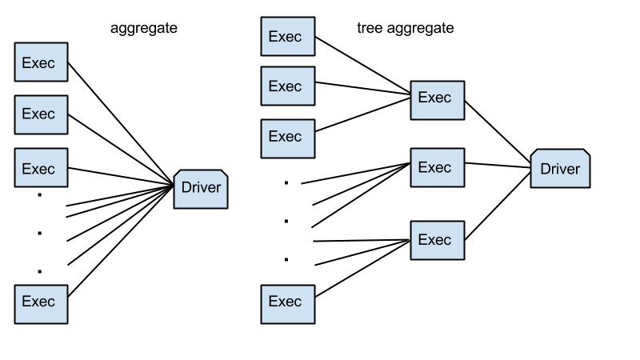

! echo $JAVA_HOME
#/usr/lib/jvm/java-8-openjdk-amd64
/usr/lib/jvm/java-8-openjdk-amd64
To install PySpark with conda run the following command in your terminal:
conda install -c conda-forge pyspark
To install PySpark without conda, download Spark from http://spark.apache.org/downloads.html and extract it. Then open your terminal, cd to the created folder (e.g. spark-2.2.0-bin-hadoop2.7) and type bin/pyspark to start the Spark shell.
class pyspark.SparkConf(loadDefaults=True, _jvm=None, _jconf=None)
Create your configuration for a Spark application. All properties are set as key-value pairs.
setMaster(value): setting the spark.master property:setAppName(value) set spark.app.name propertysetExecutorEnv(key=None, value=None, pairs=None): set an environment variable to be passed to executorssetSparkHome(value): set Spark installation path on worker nodesset(key, value): set a configuration propertysetIfMissing(key, value): set a configuration property, if not already setsetAll(pairs): set multiple parameters, passed as a list of key-value pairsimport pyspark
from pyspark import SparkConf
# configure Spark
# create your SparkConf object and use the build-in setter methods
conf = SparkConf().setMaster("local").setAppName("myApp")
# set other properties using the set method
conf.set('spark.driver.memory', '2g')
conf.set('spark.submit.deployMode', 'client')
# get a list of your properties
conf.getAll()
dict_items([('spark.master', 'local'), ('spark.app.name', 'myApp'), ('spark.driver.memory', '2g'), ('spark.submit.deployMode', 'client')])
class pyspark.SparkContext(master=None, appName=None, sparkHome=None, pyFiles=None, environment=None, batchSize=0, serializer=PickleSerializer(), conf=None, gateway=None, jsc=None, profiler_cls=< class 'pyspark.profiler.BasicProfiler' >)
Start your driver program: connection to a Spark cluster for creating RDDs and broadcast variables on that cluster.
Pass your created config as argument into the constructor SparkContext(conf=yourConfig).
from pyspark import SparkContext, SparkConf
# create SparkContext: Driver program
sc = SparkContext(conf=conf)
sc.applicationId
'local-1508849477717'
sc.startTime
1508849477693
sc.uiWebUrl
'http://192.168.1.198:4040'
sc.version
'2.2.0'
dump_profiles(path): save profile stats to diskgetConf(): returns SparkConfgetLocalProperty(key): affects jobs submitted from this threadsetLocalProperty(key, value)show_profiles(): print profile statssparkUser(): get SPARK_USER who is running SparkContextstop(): shut down SparContextsc.getConf()
<pyspark.conf.SparkConf at 0x7f90f4711240>
sc.sparkUser()
'dan'
hadoopFile(path, inputFormatClass, keyClass, valueClass, keyConverter=None, valueConverter=None, conf=None, batchSize=0)hadoopRDD(inputFormatClass, keyClass, valueClass, keyConverter=None, valueConverter=None, conf=None, batchSize=0)newAPIHadoopFile(path, inputFormatClass, keyClass, valueClass, keyConverter=None, valueConverter=None, conf=None, batchSize=0)newAPIHadoopRDD(inputFormatClass, keyClass, valueClass, keyConverter=None, valueConverter=None, conf=None, batchSize=0)setCheckpointDir(dirName)statusTracker() returns StatusTracker object for monitoring job and stage progresssetJobGroup(groupId, description, interruptOnCancel=False)runJob(rdd, partitionFunc, partitions=None, allowLocal=False)cancelJobGroup(groupId)cancelAllJobs()sc.serializer
AutoBatchedSerializer(PickleSerializer())
sc.startTime
1508750928180
myRDD = sc.parallelize(range(6), 3)
sc.runJob(myRDD, lambda part: [x * x for x in part])
[0, 1, 4, 9, 16, 25]
sc.statusTracker()
<pyspark.status.StatusTracker at 0x7feaa32543c8>
class pyspark.RDD(jrdd, ctx, jrdd_deserializer=AutoBatchedSerializer(PickleSerializer()))
A Resilient Distributed Dataset (RDD), the basic abstraction in Spark. Represents an immutable, partitioned collection of elements that can be operated on in parallel.
_jrdd: Java RDDis_cachedis_checkpointedctx: SparkContext_jrdd_deserializer: AutoBatchedSerializer(PickleSerializer()) as default_idpartitioner: None by defaultisEmpty()getNumPartitions()getStorageLevel()Try to keep RDD persistent in cache (keep linage intact) after reading it for the first time (lazy operation)
cache(): persist with default (MEMORY_ONLY) storage levelpersist(): persist with specified storage level (see StorageLevel class)unpersist()Stores RDD persistently (not deleted after Spark application terminates) and removes linage.
checkpoint(): mark for checkpointing, save RDD to checkpoint directory and remove all parent referenceslocalCheckpoint(): sacrifices fault-tolerance for performancegetCheckpointFile(): file name (not defined for locally checkpointed RDDs)isCheckpointed()isLocallyCheckpointed()saveAsHadoopDataset(conf, keyConverter=None, valueConverter=None)saveAsHadoopFile(path, outputFormatClass, keyClass=None, valueClass=None, keyConverter=None, valueConverter=None, conf=None, compressionCodecClass=None)saveAsNewAPIHadoopDataset(conf, keyConverter=None, valueConverter=None)saveAsNewAPIHadoopFile(path, outputFormatClass, keyClass=None, valueClass=None, keyConverter=None, valueConverter=None, conf=None)saveAsPickleFile(path, batchSize=10)saveAsSequenceFile(path, compressionCodecClass=None)saveAsTextFile(path, compressionCodecClass=None)These methods do not return a new RDD so the results are not saved.
foreach(f): applies a function to all elements of this RDDforeachPartition(f): applies a function to each partition of this RDDtoLocalIterator(): returns an iterator that contains all of the elements in this RDD. The iterator will consume as much memory as the largest partition in this RDD.Return a result to the driver program.
These methods should only be used if the resulting array is expected to be small, as all the data is loaded into the driver’s memory.
collect(): returns a list that contains all of the elements in this RDDcollectAsMap(): returns a dict with key-value pairs in this RDDlookup(key): filter by key and return a list of values for that key. Efficient lookup if RDD has a known partitionerThese methods should only be used if the resulting array is expected to be small, as all the data is loaded into the driver’s memory.
first(): take(1)take(num): take the first num elements of the RDD and return them in a listtakeSample(withReplacement, num, seed=None): returns a sampled subset of size num as listtop(num, key=None): returns top num elements of an RDD in sorted list in descending ordertakeOrdered(num, key=None): returns num elements of RDD in a sorted list in ascending order or as specified by the optional key functiontop and takeOrdered use the same implementation but with opposite heapq methods (nlargest and nsmallest)
count()countByKey()countByValue()countApprox(timeout, confidence=0.95): experimentalcountApproxDistinct(relativeSD=0.05): experimentalsum(): add up elementsmax(key=None): maximum itemmin(key=None)" minimum itemmean(): mean of elementsstdev(): standard deviation of elementssampleStdev(): estimates standard deviation by dividing by N-1 instead of N to correct biasvariance(): variance of elementssampleVariance(): estimates variance by dividing by N-1 instead of N to correct biasstats(): Return a StatCounter object that captures the min, max, mean, variance and count of the RDD’s elements in one operation.histogram(buckets): computes histogram with provided bucketsmeanApprox(timeout, confidence=0.95): experimentalsumApprox(timeout, confidence=0.95): experimentalaggregate(zeroValue, seqOp, combOp): Aggregate the elements of each partition, and then the results for all the partitions, using a given combine functions and a neutral “zero value.” The functions op(t1, t2) is allowed to modify t1 and return it as its result value to avoid object allocation; however, it should not modify t2. The first function (seqOp) can return a different result type, U, than the type of this RDD. Thus, we need one operation for merging a T into an U and one operation for merging two U.treeAggregate(zeroValue, seqOp, combOp, depth=2): aggregates the elements of this RDD in a multi-level tree pattern.fold(zeroValue, op): aggregates elements of each partition, and then the results for all the partitions, using a given associative function and a neutral zero valuereduce(f): reduces the elements of this RDD using the specified commutative and associative binary operator. Currently reduces partitions locally.treeReduce(f, depth=2): reduces the elements of this RDD in a multi-level tree pattern.reduceByKeyLocally(func): merges the values for each key using an associative and commutative reduce function, but return the results immediately to the master as a dictionary. This will also perform the merging locally on each mapper before sending results to a reducer, similarly to a “combiner” in MapReduce.Lazily computed operations that return a new RDD.
aggregateByKey(zeroValue, seqFunc, combFunc, numPartitions=None, partitionFunc=<function portable_hash at 0x7f51f1ac0668>): Aggregate the values of each key, using given combine functions and a neutral “zero value”. This function can return a different result type, U, than the type of the values in this RDD, V. Thus, we need one operation for merging a V into a U and one operation for merging two U’s, The former operation is used for merging values within a partition, and the latter is used for merging values between partitions. To avoid memory allocation, both of these functions are allowed to modify and return their first argument instead of creating a new U.combineByKey(createCombiner, mergeValue, mergeCombiners, numPartitions=None, partitionFunc=<function portable_hash at 0x7f51f1ac0668>)" : Generic function to combine the elements for each key using a custom set of aggregation functions. Turns an RDD[(K, V)] into a result of type RDD[(K, C)], for a “combined type” C. Users provide three functions:foldByKey(zeroValue, func, numPartitions=None, partitionFunc=<function portable_hash at 0x7f51f1ac0668>): merge the values for each key using an associative function “func” and a neutral “zeroValue” which may be added to the result an arbitrary number of times, and must not change the result (e.g., 0 for addition, or 1 for multiplication).groupBy(f, numPartitions=None, partitionFunc=<function portable_hash at 0x7f51f1ac0668>): returns an RDD of grouped items.groupByKey(numPartitions=None, partitionFunc=<function portable_hash at 0x7f51f1ac0668>): group the values for each key in the RDD into a single sequence. Hash-partitions the resulting RDD with numPartitions partitions.
keyBy(f): creates tuples of the elements in this RDD by applying f.
map(f, preservesPartitioning=False): returns a new RDD by applying a function to each element of this RDD.mapPartitions(f, preservesPartitioning=False): returns a new RDD by applying a function to each partition of this RDD.mapPartitionsWithIndex(f, preservesPartitioning=False): returns a new RDD by applying a function to each partition of this RDD, while tracking the index of the original partition.mapValues(f): pass each value in the key-value pair RDD through a map function without changing the keys; this also retains the original RDD’s partitioning.flatMap(f, preservesPartitioning=False): returns a new RDD by first applying a function to all elements of this RDD, and then flattening the results.flatMapValues(f): pass each value in the key-value pair RDD through a flatMap function without changing the keys; this also retains the original RDD’s partitioning.reduceByKey(func, numPartitions=None, partitionFunc=<function portable_hash at 0x7f51f1ac0668>): merges the values for each key using an associative and commutative reduce function. This will also perform the merging locally on each mapper before sending results to a reducer, similarly to a “combiner” in MapReduce. Output will be partitioned with numPartitions partitions, or the default parallelism level if numPartitions is not specified. Default partitioner is hash-partition.pipe(command, env=None, checkCode=False): returns an RDD created by piping elements to a forked external process.randomSplit(weights, seed=None): randomly splits this RDD with the provided weights.sample(withReplacement, fraction, seed=None): returns a sampled subset of this RDD. sampleByKey(withReplacement, fractions, seed=None): returns a subset of this RDD sampled by key (via stratified sampling). Create a sample of this RDD using variable sampling rates for different keys as specified by fractions, a key to sampling rate map.sortBy(keyfunc, ascending=True, numPartitions=None): sorts this RDD by the given keyfunc.sortByKey(ascending=True, numPartitions=None, keyfunc=<function <lambda> at 0x7f51f1ab5050>): sorts this RDD, which is assumed to consist of (key, value) pairs.repartition(numPartitions): returns a new RDD that has exactly numPartitions partitions. Can increase or decrease the level of parallelism in this RDD. Internally, this uses a shuffle to redistribute data (self.coalesce(numPartitions, shuffle=True)). If you are decreasing the number of partitions in this RDD, consider using coalesce, which can avoid performing a shuffle.coalesce(numPartitions, shuffle=False): returns a new RDD that is reduced into numPartitions partitionsrepartitionAndSortWithinPartitions(numPartitions=None, partitionFunc=<function portable_hash at 0x7f51f1ac0668>, ascending=True, keyfunc=<function <lambda> at 0x7f51f1ab3ed8>): repartitions the RDD according to the given partitioner and, within each resulting partition, sort records by their keys (self.partitionBy(numPartitions, partitionFunc).mapPartitions(sortPartition, True)).partitionBy(numPartitions, partitionFunc=<function portable_hash at 0x7f51f1ac0668>): returns a copy of the RDD partitioned using the specified partitioner.glom(): returns an RDD created by coalescing all elements within each partition into a list.filter(f): returns a new RDD containing only the elements that satisfy a predicate.distinct(numPartitions=None): returns a new RDD containing the distinct elements in this RDD.keys(): returns an RDD with the keys of each tuple.values(): returns an RDD with the values of each tuple.cogroup(other, numPartitions=None): For each key k in self or other, return a resulting RDD that contains a tuple with the list of values for that key in self as well as other.groupWith(other, *others): alias for cogroup but with support for multiple RDDs.union(other): returns the union of this RDD and another one.intersection(other): returns the intersection of this RDD and another one. The output will not contain any duplicate elements, even if the input RDDs did. This method performs a shuffle internally.cartesian(other): returns the Cartesian product of this RDD and another one, that is, the RDD of all pairs of elements (a, b) where a is in self and b is in other.subtract(other, numPartitions=None): returns each value in self that is not contained in other.subtractByKey(other, numPartitions=None): returns each (key, value) pair in self that has no pair with matching key in other.join(other, numPartitions=None): returns an RDD containing all pairs of elements with matching keys in self and other. Each pair of elements will be returned as a (k, (v1, v2)) tuple, where (k, v1) is in self and (k, v2) is in other. Performs a hash join across the cluster.fullOuterJoin(other, numPartitions=None): Perform a right outer join of self and other. For each element (k, v) in self, the resulting RDD will either contain all pairs (k, (v, w)) for w in other, or the pair (k, (v, None)) if no elements in other have key k. Similarly, for each element (k, w) in other, the resulting RDD will either contain all pairs (k, (v, w)) for v in self, or the pair (k, (None, w)) if no elements in self have key k. Hash-partitions the resulting RDD into the given number of partitions.leftOuterJoin(other, numPartitions=None): performs a left outer join of self and other. For each element (k, v) in self, the resulting RDD will either contain all pairs (k, (v, w)) for w in other, or the pair (k, (v, None)) if no elements in other have key k. Hash-partitions the resulting RDD into the given number of partitions.rightOuterJoin(other, numPartitions=None): performs a right outer join of self and other. For each element (k, w) in other, the resulting RDD will either contain all pairs (k, (v, w)) for v in this, or the pair (k, (None, w)) if no elements in self have key k. Hash-partitions the resulting RDD into the given number of partitions.zip(other): zips this RDD with another one, returning key-value pairs with the first element in each RDD second element in each RDD, etc. Assumes that the two RDDs have the same number of partitions and the same number of elements in each partition (e.g. one was made through a map on the other).zipWithIndex(): zips this RDD with its element indices. The ordering is first based on the partition index and then the ordering of items within each partition. So the first item in the first partition gets index 0, and the last item in the last partition receives the largest index. This method needs to trigger a spark job when this RDD contains more than one partitions.zipWithUniqueId(): zips this RDD with generated unique Long ids. Items in the kth partition will get ids k, n+k, 2*n+k, ..., where n is the number of partitions. So there may exist gaps, but this method won’t trigger a spark job, which is different from zipWithIndexsc.parallelize([]).isEmpty()
True
sc.parallelize([1]).isEmpty()
False
# create and RDD with 10 elements from 0 to 9
rdd = sc.range(10)
# [0, 1, 2, 3, 4, 5, 6, 7, 8, 9]
rdd.getNumPartitions()
1
sc.range(10, numSlices=2).getNumPartitions()
2
rdd.getStorageLevel()
StorageLevel(False, False, False, False, 1)
shuffledRdd = sc.parallelize([4, 6, 1, 7, 8, 0, 2, 3, 9, 5])
# return list of RDD
shuffledRdd.collect()
[4, 6, 1, 7, 8, 0, 2, 3, 9, 5]
# take first element
shuffledRdd.first()
4
# take first n elements
shuffledRdd.take(3)
[4, 6, 1]
# top n elements in desc order
shuffledRdd.top(2)
[9, 8]
# top n elements in asc order or by optional key function
shuffledRdd.takeOrdered(3)
[0, 1, 2]
# Return a fixed-size sampled subset of this RDD
# withReplacement: True=element can be sampled multiple times
shuffledRdd.takeSample(True, 5, seed=8)
[3, 7, 3, 3, 1]
# count number of elements
shuffledRdd.count()
10
kvRDD = sc.parallelize([("a", 2), ("b", 4), ("a", 6)])
# collectAsMap: returns dict of RDD
# simply converts the RDD to a Python dict (dict(self.collect()).
# Overwrites values for the same key!
kvRDD.collectAsMap()
{'a': 6, 'b': 4}
# lookup(key): returns list of values for that key
kvRDD.lookup("a")
[2, 6]
# countByKey: count the number of elements for each key
kvRDD.countByKey()
defaultdict(int, {'a': 2, 'b': 1})
# countByValue: count unique elements in RDD as dict of (value, count) pairs
nonDistinctRDD = sc.parallelize([1, 2, 3, 1, 2, 1])
nonDistinctRDD.countByValue()
defaultdict(int, {1: 3, 2: 2, 3: 1})
# fold: aggregate elements of each partition
# For functions that are not commutative, the result may differ from that of a fold
# applied to a non-distributed collection.
from operator import add
nonDistinctRDD.fold(0, add)
10
rdd.collect()
[0, 1, 2, 3, 4, 5, 6, 7, 8, 9]
rdd.sum()
45
rdd.min()
0
rdd.max()
9
rdd.mean()
4.5
rdd.stdev()
2.8722813232690143
rdd.variance()
8.25
rdd.stats()
(count: 10, mean: 4.5, stdev: 2.87228132327, max: 9.0, min: 0.0)
# historam(buckets): returns tuple of buckets and number of elements in each bucket
# buckets: 3 or [0, 3, 6, 9]
rdd.histogram(3)
# b1: 0-2, b2: 3-5, b3:6-9, 3 elements in b1, 3 elements in b2, 4 elements in b3
([0, 3, 6, 9], [3, 3, 4])
rdd.histogram([0, 3, 6, 9])
([0, 3, 6, 9], [3, 3, 4])
def f(x):
x += 10
print(x)
# printed in console
rdd.foreach(f)
rdd.collect()
# rdd is not changed! function is only applied internally but not saved
[0, 1, 2, 3, 4, 5, 6, 7, 8, 9]
sc.parallelize(['1', '2', '', '3']).pipe('cat').collect()
['1', '2', '', '3']
rdd.takeSample(True, 20, 1)
[9, 9, 6, 1, 0, 0, 3, 6, 4, 3, 8, 4, 3, 2, 0, 3, 7, 5, 3, 9]
sc.parallelize(range(0,3)).keyBy(lambda x: x*x).collect()
[(0, 0), (1, 1), (4, 2)]
intRDD.takeSample(False, 2)
[2, 1]
sc.runJob(myRDD, lambda part: [x * x for x in part], [1, 2], True)
[4, 9, 16, 25]
radioheadLyrics = sc.wholeTextFiles('/home/dan/Dropbox/Ancud/music/radioheadLyrics/')
sorted(radioheadLyrics.collect())
[('file:/home/dan/Dropbox/Ancud/music/radioheadLyrics/(Nice Dream).txt',
"They love me like I was a brother\nThey protect me, listen to me\nThey dug me my very own garden\nGave me sunshine, made me happy\nNice dream\nNice dream\nNice dream\nI call up my friend, the good angel\nBut she's out with her ansa'phone\nShe said that she'd love to come help but\nThe sea would electrocute us all\nNice dream\nNice dream\nNice dream\nNice dream\nNice dream\nNice dream\nNice dream\nIf you think that you're strong enough\nNice dream\nIf you think you belong enough\nNice dream\nIf you think that you're strong enough\nNice dream\nIf you think you belong enough\nNice dream\nNice dream\nNice dream\nNice dream\n"),
('file:/home/dan/Dropbox/Ancud/music/radioheadLyrics/(Talking #1).txt',
'That was better\nYes, yes!\nYep\nYeah\nI got a [?] just get the drums right!\nHang on a sec\n'),
('file:/home/dan/Dropbox/Ancud/music/radioheadLyrics/(Talking #2).txt',
"Just gonna do a quick version of that last track?\nYeah\nAlright, huh\nWas that bad?\nYes\nIt's correct [?] first chord\nOh, hm\nAlright?\nYeah, that's the right thing\nOne, two, three, four\n"),
('file:/home/dan/Dropbox/Ancud/music/radioheadLyrics/(Talking #3).txt',
"Huh?\nShoo\nRight lets do, shall we do-yea, we'll do the job first\nOne, two, three, four\nAh, that's completely wrong\nOne, two, three, one, two, three\n"),
('file:/home/dan/Dropbox/Ancud/music/radioheadLyrics/(ocean) bloom.txt',
"Open your mouth wide\nThe universal sigh\nAnd while the ocean blooms\nIt's what keeps me alive\nOpen your mouth wide\nThe universal sigh\nAnd while the ocean blooms\nIt's what keeps me alive\nOcean blooms\n"),
('file:/home/dan/Dropbox/Ancud/music/radioheadLyrics/15 Step.txt',
"How come I end up where I started?\nHow come I end up where I went wrong?\nWon't take my eyes off the ball again\nYou reel me out then you cut the string\nHow come I end up where I started?\nHow come I end up where I went wrong?\nI won't take my eyes off the ball again\nFirst you reel me out and then you cut the string\nYou used to be alright, what happened?\nDid the cat get your tongue?\nDid your string come undone?\nOne by one, one by one\nIt comes to us all, it's as soft as your pillow\nYou used to be alright, what happened?\nEt cetera, et cetera\nFads for whatever Yeah!\nFifteen steps then a sheer drop\nHow come I end up where I started?\nHow come I end up where I went wrong?\nWon't take my eyes off the ball again\nYou reel me out then you cut the string\n"),
('file:/home/dan/Dropbox/Ancud/music/radioheadLyrics/2 + 2 = 5.txt',
"We're on.\nThat's a nice way to start, Johnny.\nAre you such a dreamer\nTo put the world to rights?\nI'll stay home forever\nWhere two and two always makes a five\nI'll lay down the tracks\nSandbag and hide\nJanuary has April showers\nAnd two and two always makes a five\nIt's the devil's way now\nThere is no way out\nYou can scream and you can shout\nIt is too late now\nBecause\nYou have not been\nPaying attention\nPaying attention\nPaying attention\nPaying attention\nYou have not been\nPaying attention\nPaying attention\nPaying attention\nPaying attention\nYou have not been\nPaying attention\nPaying attention\nPaying attention\nPaying attention\nYou have not been\nPaying attention\nPaying attention\nPaying attention\nPaying attention\nI try to sing along\nBut the music's all wrong\nCause I'm not, cause I'm not\nI swat em like flies but\nLike flies the buggers\nKeep coming back, God\nBut I'm not, but I'm not\nOh, hail to the thief\nOh, hail to the thief\nBut I'm not, but I'm not\nBut I'm not, but I'm not\nDon't question my authority or put me in a box\nCause I'm not, cause I'm not\nOh, go and tell the king, that the sky is falling in\nBut it's not, but it's not, but it's not\nMaybe not, maybe not\n"),
('file:/home/dan/Dropbox/Ancud/music/radioheadLyrics/4 Minute Warning.txt',
"This is just a nightmare\nSoon I'm going to wake up\nSomeone's gonna bring me around\nRunning from the bombers\nHiding in the forest\nRunning through the fields\nLaying flat on the ground\nJust like everybody\nStepping over heads\nRunning from the underground\nThis is your warning\n4 minute warning\nI don't wanna hear it\nI don't wanna know\nI just wanna run and hide\nThis is just a nightmare\nBut soon I'm gonna wake up\nSomeone's gonna bring me 'round\nThis is our warning\n4 minute warning\n"),
('file:/home/dan/Dropbox/Ancud/music/radioheadLyrics/A Moon Shaped Pool [Tracklist + Album Cover].txt',
'Tracklist click links for lyrics\n1. Burn The Witch\n2. Daydreaming\n3. Decks Dark\n4. Desert Island Disk\n5. Ful Stop\n6. Glass Eyes\n7. Identikit\n8. The Numbers\n9. Present Tense\n10. Tinker Tailor Soldier Sailor Rich Man Poor Man\n11. True Love Waits\nBonus Disc Included in the Special Edition set\n12. Ill Wind\n13. Spectre\nAlbum Cover\nSpecial Edition Cover\n'),
('file:/home/dan/Dropbox/Ancud/music/radioheadLyrics/A Piano Lies Down In The Middle Of The Road.txt',
''),
('file:/home/dan/Dropbox/Ancud/music/radioheadLyrics/A Punchup at a Wedding.txt',
"No no no no no no\nNo no no no no no\nNo no no no no no\nNo no no no no no\nNo no no no no no\nNo no no no no no\nNo no no no no no\nI don't know why you bother\nNothing's ever good enough for you\nI was there\nIt wasn't like that\nYou've come here just to start a fight\nYou had to piss on our parade\nYou had to shred our big day\nYou had to ruin it for all concerned\nIn a drunken punch-up at a wedding, yeah\nHypocrite opportunist\nDon't infect me with your poison\nA bully in a china shop\nWhen I turn 'round you stay\nFrozen to the spot\nThe pointless snide remarks\nOf hammerheaded sharks\nThe pot will call the kettle black\nIt's a drunken punch-up at a wedding, yeah\nOh\nNo no no no no no no no no\nNo no no no no no no no no no no no no no\nNo no no no no no no no no no no no no no\nNo no no no no no no no no no no no no no\nNo no no no no no no no no no no no no no\n"),
('file:/home/dan/Dropbox/Ancud/music/radioheadLyrics/A Reminder.txt',
"Ukončete výstup a nástup, dveře se zavírají\nPříští stanice, Jiřího z Poděbrad\nIf I get old, I will not give in\nBut if I do, remind me of this\nRemind me that once I was free\nOnce I was cool, once I was me\nAnd if I sit down and cross my arms\nHold me up to this song\nKnock me out, smash out my brains\nIf I take a chair, and start to talk shit\nIf I get old, remind me of this\nThe way that we kissed, and I really meant it\nWhatever happens, if we're still speaking\nPick up the phone, play me this song\n"),
('file:/home/dan/Dropbox/Ancud/music/radioheadLyrics/A Wolf at the Door.txt',
"Drag him out your window\nDragging out the dead\nSinging I miss you\nSnakes and ladders\nFlip the lid\nOut pops the cracker\nSmacks you in the head\nKnifes you in the neck\nKicks you in the teeth\nSteel toe caps\nTakes all your credit cards\nGet up get the gunge\nGet the eggs\nGet the flan in the face\nThe flan in the face\nThe flan in the face\nDance you fucker, dance you fucker\nDon't you dare, don't you dare\nDon't you flan in the face\nTake it with the love it's given\nTake it with a pinch of salt\nTake it to the taxman\nLet me back, let me back\nI promise to be good\nDon't look in the mirror\nAt the face you don't recognize\nHelp me call the doctor\nPut me inside\nPut me inside, put me inside\nPut me inside, put me inside\nI keep the wolf from the door\nBut he calls me up\nCalls me on the phone\nTells me all the ways that he's gonna mess me up\nSteal all my children\nIf I don't pay the ransom\nAnd I'll never see them again\nIf I squeal to the cops\nNo no no no no no no no no no no no no\nNo no no no no no no no no no no no no\nNo no no no no no no no no no no no no\nNo no no no no no no no no no no no no\nNo no no no no no no no no no no no no\nNo no no no no no no no no no no no no\nNo no no no no no no no no no no no no\nNo no no no no no no no no no no no no\nWalking like giant cranes and\nWith my x ray eyes I strip you naked\nIn a tight little world and are you on the list?\nStepford wives, who are we to complain?\nInvestments and dealers investments and dealers\nCold wives and mistresses\nCold wives and Sunday papers\nCity boys in first class\nDon't know we're born\nJust know someone else is gonna come and clean it up\nBorn and raised for the job\nSomeone always does\nOh I wish you'd get up\nGo over, get up, get over, turn your tape off\nI keep the wolf from the door\nBut he calls me up\nCalls me on the phone\nTells me all the ways that he's gonna mess me up\nSteal all my children\nIf I don't pay the ransom\nAnd I'll never see them again\nIf I squeal to the cops\nSo I'm just gonna-\nOoohh, ooohh, ooooohh\n"),
('file:/home/dan/Dropbox/Ancud/music/radioheadLyrics/AMS Hello.txt',
'Hello\n'),
('file:/home/dan/Dropbox/Ancud/music/radioheadLyrics/Airbag (acoustic).txt',
"In the next world war\nIn the one you left behind\nI am born again\nIn the neon sign\nScrolling up and down\nAn airbag saved my life\nIn an interstellar burst\nI'm back to save the universe\nIn a deep deep sleep\nIn a love you never had\nI am born again\nIn a fast German car\nIn the juggernaut lane\nI am born again\nIn an interstellar burst\nI'm back to save the universe\nIn an interstellar burst\nI'm back to save the universe\n"),
('file:/home/dan/Dropbox/Ancud/music/radioheadLyrics/Airbag Drums Through Moog.txt',
''),
('file:/home/dan/Dropbox/Ancud/music/radioheadLyrics/Airbag Early Acoustic Version.txt',
"In the next World War\nAn angel at my door\nI am born again\nIn the neon sign\nScrolling up and down\nI am born again\nIn an interstellar burst\nI'm back to save the universe\nIn a deep deep sleep\nOf the innocent\nAn airbag saved my life\nIn a fast German car\nI'm amazed I'm still alive\nI am born again\nIn an interstellar burst\nI'm back to save the universe\nIn an interstellar burst\nI am back to save the universe\nIn an interstellar burst\nI am back to save the universe\n"),
('file:/home/dan/Dropbox/Ancud/music/radioheadLyrics/Airbag.txt',
"In the next World War\nIn a jackknifed juggernaut\nI am born again\nIn the neon sign\nScrolling up and down\nI am born again\nIn an interstellar burst\nI'm back to save the universe\nIn a deep deep sleep\nOf the innocent\nI am born again\nIn a fast German car\nI'm amazed that I survived\nAn airbag saved my life\nIn an interstellar burst\nI am back to save the universe\nIn an interstellar burst\nI am back to save the universe\nIn an interstellar burst\nI am back to save the universe\n"),
('file:/home/dan/Dropbox/Ancud/music/radioheadLyrics/All I Need.txt',
"I'm the next act\nWaiting in the wings\nI'm an animal\nTrapped in your hot car\nI am all the days\nThat you choose to ignore\nYou are all I need\nYou're all I need\nI'm in the middle of your picture\nLying in the leaves\nI'm a moth\nWho just wants to share your light\nI'm just an insect\nTrying to get out of the night\nI only stick with you\nBecause there are no others\nYou are all I need\nYou're all I need\nI'm in the middle of your picture\nLying in the reeds\nIt's all wrong, it's all wrong, it's all wrong\nIt's all right, it's all right, it's all right\nIt's all wrong, it's all right\nIt's all right, it's all right\n"),
('file:/home/dan/Dropbox/Ancud/music/radioheadLyrics/Alternative Paranoid Android Ending Live In Pittsburg.txt',
"There was, there was, there was\nThere was, there was, there was\nThere was, there was, there was\nThere was, there was, there was?\nYou obviously don't think so, you obviously have dup-\n"),
('file:/home/dan/Dropbox/Ancud/music/radioheadLyrics/Ambient Loops.txt', ''),
('file:/home/dan/Dropbox/Ancud/music/radioheadLyrics/Anyone Can Play Guitar.txt',
"Destiny, destiny protect me from the world\nDestiny, hold my hand protect me from the world\nHere we are with our running and confusion\nAnd I don't see no confusion anywhere\nAnd if the world does turn\nAnd if London burns I'll be standing on the beach with my guitar\nI wanna be in a band when I get to heaven\nAnyone can play guitar\nAnd they won't be a nothing anymore\nGrow my hair, grow my hair\nI am Jim Morrison\nGrow my hair\nI wanna be wanna be wanna be Jim Morrison\nHere we are with our running and confusion\nAnd I don't see no confusion anywhere\nAnd if the world does turn\nAnd if London burns I'll be standing on the beach with my guitar\nI wanna be in a band when I get to heaven\nAnyone can play guitar\nAnd they won't be a nothing anymore\n"),
('file:/home/dan/Dropbox/Ancud/music/radioheadLyrics/Are You Someone?.txt',
"Are you lonely?\nAre you living on the seat of your pants?\nAre you happy?\nWipe that smile off your face\nAre you someone?\nLose my pinball eyes\nAre you lonely?\nAre you broken all in a vice?\nTry what you shouldn't say\nAnd I'll help you\nHere's the detective\nHe's in charge of your case\nHere's the detective\nAnd he's hoping to waste my name\nAnd he's trying what is in his arm, but I don't mind\nHe's trying what is in his arm, but I don't mind\nThe strength for living, losing\nNo one inside of my head\nAre you crazy?\nAre you blessed in bed in his arm?\nIs there mumbling?\nWill you cry us a play in it?\nAre you happy?\nYour crossed legs\nTry what you want from me, I'll spit it back\nSoft as a denim hand, spit it back\nThen this world\nLeaving it on a nose\n"),
('file:/home/dan/Dropbox/Ancud/music/radioheadLyrics/Attention.txt',
"Pararara-pa-pa-pa\nPararara-pa-pa-pa\nPararara-pa-pa-pa\nAttention I wish we'd spin in the eye to\nA smiling brotherhood\nAttention The unacceptable face of\nThe door selling the good\nAttention A spontaneous feeling\nThe joy of the uprising\nAttention An action with some meaning\nA brief release of hope\nYeah if we stand up they'll\nPull us down again\nI wish we'd spin in the eye to\nA smiling brotherhood\nThe unacceptable face of\nThe door selling the good\nAttention A spontaneous feeling\nThe joy of the uprising\nAttention An action with some meaning\nA brief release of hope\nYeah if we stand up they'll\nPull us down again\nPararara, pa-pa-pa, pararara, pa-pa-pa\nAttention\nPararara, pa-pa-pa, pararara, pa-pa-pa, pararara, pa-pa-pa\nAttention\nPararara, pa-pa-pa, pararara, pa-pa-pa, pararara, pa-pa-pa\n"),
('file:/home/dan/Dropbox/Ancud/music/radioheadLyrics/Backdrifts.txt',
"We're rotten fruit\nWe're damaged goods\nWhat the hell, we've got nothing more to lose\nOne burst and we will probably crumble\nWe're backdrifting\nThis far, but no further\nI'm hanging off a branch\nI'm teetering on a breaker\nHoney sweets, so fall asleep\nI'm backsliding\nYou fell into our arms\nYou fell into our arms\nWe tried but there was nothing we could do\nNothing we could do\nAll evidence has been buried\nAll tapes have been erased\nBut your footsteps give you away\nSo you're backtracking\nUh, uh, uh, you fell into our arms\nYou fell into our arms\nWe tried but there was nothing we could do\nNothing we could do\nYou fell into our\nYou fell into a\nWe're rotten fruit\nWe're damaged goods\nWhat the hell, we've got nothing more to lose\nOne burst and we will probably crumble\nWe're backdrifters\n"),
('file:/home/dan/Dropbox/Ancud/music/radioheadLyrics/Banana Co.txt',
"Oh, Banana Co\nWe really love you, and we need you\nAnd oh, Banana Co\nWe'd really love to believe you\nBut everything's underground\nWe gotta dig it up somehow\nYeah, yeah\nOh, she said No go\nShe said she'd like to, she's seen you\nAnd oh, Banana Co\nShe knows if you die then we all do\nAnd everything's underground\nWe've gotta dig it up somehow\nYeah, yeah\nEverything's burning down\nWe gotta put it out somehow\nYeah, yeah\n"),
('file:/home/dan/Dropbox/Ancud/music/radioheadLyrics/Bangers + Mash.txt',
"You bit me, bit me, bit me, oh\nYou bit me, bit me, and now I want more\nI'm standing in the hall, I'm puking on the wall\nIt's all heading south to the Conger Hill\nThe bangers and the mash, the negatives for cash\nYou're either in the club, baby, or you're not\nWhatever turns you on, whatever gets you up\nChief of Police or Vice-Chancellor\nLord and Lady blah-blah, the vicar and the judge\nYou're all dancing to my little red book\nBecause you bit me, bit me, bit me, oh\nI got the poison, poison, and now I want more\nIf you are on the top then it is a long drop\nThe pyramid is power, we're changing by the hour\nIf you are on the top, then it is a long drop\nIf you stare into the dark, the dark will stare back\nBack into your soul\nI'm taking you down, I'm taking you down\nI'm taking you down, when I go down\nI'm taking you down, I'm taking you down\nI'm standing in the hall, I'm puking on the wall\nYeah, because you bit me, bit me, bit me, ow\nThe poison, I got the poison, I got the poison now\nYeah, I got the poison\n"),
('file:/home/dan/Dropbox/Ancud/music/radioheadLyrics/Big Bird Story By Stanley Donwood.txt',
'Big Bird\nWhilst on a walking holiday in remote regions\nI chance upon a secluded valley\nAway from the popular walking routes\nSome distance along the valley\nI come across a scene so breathtakingly beautiful\nThat I drop to my knees in wonder\nThere is something about the serried ranks\nOf deciduous and coniferous trees\nStanding tall on the opposite bank\nOf the river that sets my heart ablaze\nThe colours of the foliage are poetic\nWhilst the arrangement of species seems divinely inspired\nClouds swoop and whirl above the topmost branches\nAnd the river sparkles through an uncertain reflection below\nSuddenly, the sky darkens, and along the river advances a flotilla of huge birds with menacing eyes\nThe size of the birds staggers me; one is as tall as a bus, and the others not much smaller\nTheir plumage is a shimmering blue\nBut their eyes are full of hate and looming disaster\nWith a horrible sinking feeling\nI realise that the birds have noticed me\nOne of them clambers up the nearside bank\nAnd waddles towards me\nI take to my heels, and scramble along the path\nGaining speed, I run at full tilt\nThen I see people in front of me, running towards me\nFirst one passes, then another, then another\nThey are wide-eyed with terror, and keep taking quick\nFearful looks behind them\nThere must, I realise, be something unutterably horrible in front of me, but my fear of the big birds compels me to carry on\nMore people run past me, all with the same frightened expression. They are running towards the birds, away from something unknown\nI am running from the birds, towards something unknown. Not for the first time in my life, I curse my bad luck\n'),
('file:/home/dan/Dropbox/Ancud/music/radioheadLyrics/Big Ideas (Nude Early Band Version).txt',
"Don't get any big ideas\nThey're not gonna happen\nThat thin stewardess\nHer skirt in a mess\nYou don't stand a chance\nWhat do you look like when you're nude\nWhat do you look like when you're nude\nWhat do you look like nude\nSoulless reflection\nIn the other person's eyes\nDeath bed, first home\nDamaged good, subject\nObject none\nSo don't get any big ideas\nThey're not gonna happen\nYou'll go to hell\nFor what your dirty mind\nIs thinking\nWhat do you look like when you're nude\nWhat do you look like when you're nude\nIt's weirding me out\n"),
("file:/home/dan/Dropbox/Ancud/music/radioheadLyrics/Bishop's Robes.txt",
"Dressed in bishop's robes\nTerrifies me still in bishop's robes\nBastard headmaster\nI am not going back\nI am not going back\nI am not going back\nChildren taught to kill\nTo tear themselves to bits on playing fields\nDressed in bishop's robes\nI am not going back\nI am not going back\nI am not going back\n"),
('file:/home/dan/Dropbox/Ancud/music/radioheadLyrics/Black Star.txt',
"I get home from work and you're still standing\nIn your dressing gown well what am I to do?\nI know all the things around your head\nAnd what they do to you\nWhat are we coming to?\nWhat are we gonna do?\nBlame it on the black star\nBlame it on the falling sky\nBlame it on the satellite that beams me home\nThe troubled words of a troubled mind\nI try to understand what is eating you\nI try to stay awake but it's 58 hours\nSince that I last slept with you\nWhat are we coming to?\nI just don't know anymore\nBlame it on the black star\nBlame it on the falling sky\nBlame it on the satellite that beams me home\nI get on the train and I just stand about\nNow that I don't think of you\nI keep falling over I keep passing out\nWhen I see a face like you\nWhat am I coming to?\nI'm gonna melt down\nBlame it on the black star\nBlame it on the falling sky\nBlame it on the satellite that beams me home\nAh, this is killing me\nAh, this is killing me\n"),
('file:/home/dan/Dropbox/Ancud/music/radioheadLyrics/Bloom.txt',
"Open your mouth wide\nThe universal sigh\nAnd while the ocean blooms\nIt's what keeps me alive\nSo why does this still hurt?\nDon't blow your mind with whys\nOooooh\nI'm moving out of orbit Turning in somersaults\nTurning in somersaults A giant turtle's eyes\nA giant turtle's eyes As jellyfish float by\nAs jellyfish float by\nIt's what keeps me alive\n"),
('file:/home/dan/Dropbox/Ancud/music/radioheadLyrics/Blow Out.txt',
'In my mind\nAnd nailed into my heels\nAll the time\nKilling what I feel\nAnd everything I touch\nall wrapped up in cotton wool\nall wrapped up in sugar-coated pills\nTurns to stone\nAnd everything I touch\nall wrapped up in cotton wool\nall wrapped up in sugar-coated pills\nTurns to stone\nI am fused\nJust in case I blow out\nI am glued\nJust in case I crack out\nAnd everything I touch\nTurns to stone\nEverything I touch\nall wrapped up in cotton wool\nall wrapped up in sugar-coated pills\nTurns to stone\n'),
('file:/home/dan/Dropbox/Ancud/music/radioheadLyrics/Bodysnatchers.txt',
"I do not understand\nWhat it is I've done wrong\nFull of holes, check for pulse\nBlink your eyes, one for yes\nTwo for no\nI have no idea what I am talking about\nI'm trapped in this body and can't get out\nOoooohhhh, woah woah\nYou killed the sound, removed backbone\nA pale imitation with the edges all\nSawn off\nI have no idea what you are talking about\nYour mouth moves only with someone's hand up your ass\nOoooohhhh, woah woah\nHas the light gone out for you?\nBecause the light's gone out for me\nIt is the 21st century\nIt is the 21st century\nIt can follow you like a dog\nIt brought me to my knees\nThey got a skin and they put me in\nThey got a skin and they put me in\nAll the lines wrapped 'round my face\nAll the lines wrapped 'round my face\nAnd for anyone else to see\nAnd for anyone else to see\nI'm a lie\nOh no no no no no no no no no no no\nOh no no no no no no no no no no no\nOh no no no no no no na na na na no\nI've seen it coming\nThey've seen it coming\nThey've seen it coming\nThey've seen it coming\n"),
('file:/home/dan/Dropbox/Ancud/music/radioheadLyrics/Bones.txt',
"I don't want to be crippled and cracked\nShoulders, wrists, knees and back\nGround to dust and ash\nCrawling on all fours\nWhen you've got to feel it in your bones\nWhen you've got to feel it in your bones\nNow I can't climb the stairs\nPieces missing everywhere\nProzac painkillers\nWhen you've got to feel it in your bones\nWhen you've got to feel it in your bones\nAnd I used to fly like Peter Pan\nAll the children flew when I touched their hands\nListen you've got to feel it in your bones\nListen you've got to feel it in your bones\n"),
('file:/home/dan/Dropbox/Ancud/music/radioheadLyrics/Bullet Proof ... I Wish I Was.txt',
'Limb by limb and tooth by tooth\nStirring up inside of me\nEvery day, every hour\nWish that I\nWas bulletproof\nWax me, mould me\nHeat the pins and stab them in\nYou have turned me into this, just wish that it\nWas bulletproof\nWas bulletproof\nSo pay me money and take a shot\nLead fill the hole in me\nI could burst a million bubbles, all surrogate\nAnd bulletproof\nAnd bulletproof\nAnd bulletproof\nBulletproof\n'),
('file:/home/dan/Dropbox/Ancud/music/radioheadLyrics/Burn the Witch.txt',
'Stay in the shadows\nCheer at the gallows\nThis is a round-up\nThis is a low-flying panic attack\nSing the song on the jukebox that goes\nBurn the witch\nBurn the witch\nWe know where you live\nRed crosses on wooden doors\nIf you float you burn\nLoose talk around tables\nAbandon all reason\nAvoid all eye contact\nDo not react\nShoot the messengers\nThis is a low flying panic attack\nSing the song of sixpence that goes\nBurn the witch\nBurn the witch\nWe know where you live\nWe know where you live\n'),
('file:/home/dan/Dropbox/Ancud/music/radioheadLyrics/Burning Bush.txt',
"Rain magic up down America\nAnd on comes our man\nWith a smile that's taken years to fix\nSpreading pestilence and disease\nTo those old women\nWho couldn't know no difference\nAnd now I know\nI want to know\nI want to know\nIs this going to be the one\nThe one who gets it done?\nSell me the burning bush\nTell me I'm burning Bush\nMaybe we should burn Bush\nI believe in feeling for the next ones\nThe ones who cannot cope\nIt's a land full of heart attacks\nMoney builds McDonalds and Coca-Cola\nThe corporations own the very air that you breath\nAnd I want to know\nI want to know\nI want to know\nIs this going to be the one\nThe one who drops the bomb\nThe one who gets it done?\nTell me I'm burning Bush\nMaybe we should burn Bush\nI want to know\nI want to know\nI want to know\nIs this going to be the one\nThe one who drops the bomb\nThe one who gets it done?\nTell me I'm burning Bush\nMaybe we should burn Bush\n"),
('file:/home/dan/Dropbox/Ancud/music/radioheadLyrics/Ceremony.txt',
"We can start now, you ready? Yeah we can start now, yeah we can start now, we can start now, yeah. You have to let him start...\nThis is why events unnerve me\nThey find it all, a different story\nNotice whom wheels are turning\nTurn again and turn towards this time\nAll she ask's the strength to hold me\nThen again the same old story\nWorld will travel, oh so quickly\nTravel first and lean towards this time\nOh, I'll break them down, no mercy shown\nHeaven knows, it's got to be this time\nWatching her, these things she said\nThe times she cried\nToo frail to wake this time\nI'll break them down, no mercy shown\nHeaven knows, it's got to be this time\nAvenues all lined with trees\nPicture me and then you start watching\nWatching forever, forever\nForever, forever\nWatching love grow, forever\nWatching love grow, forever\nWatching love grow, forever\nLetting me know, forever\n...Thank you very much. Now what?\n"),
('file:/home/dan/Dropbox/Ancud/music/radioheadLyrics/Cinnamon Girl.txt',
"I wanna live with a cinnamon girl\nI could be happy the rest of my life\nWith a cinnamon girl\nA dreamer of pictures\nI run in the night\nYou see us together\nChasing the moonlight\nMy cinnamon girl\nTen silver saxes, a bass with a bow\nThe drummer relaxes and waits between shows\nFor his cinnamon girl\nA dreamer of pictures\nI run in the night\nYou see us together\nChasing the moonlight\nMy cinnamon girl\nPa sent me money now\nI'm gonna make it somehow\nI need another chance\nYou see your baby loves to dance\nYeah, yeah, yeah\n"),
('file:/home/dan/Dropbox/Ancud/music/radioheadLyrics/Climbing Up The Walls (Thom 4Track).txt',
"I am the key to the door in your house\nThat keeps your toys in the basement\nAnd if you look too hard in your mind\nYou'll often see my reflection\nIt's always best when the light is off\nIt's always better on the outside\nBut if you stick with me we'll go far\nThe girls will fall by the wayside\nAnd anywhere you turn\nI'll be there\nOpen up your skull\nI'll be there\nClimbing up the walls\nI am the key to the lock in your dress\nI am the weapon that you needed\nAnd if you look too hard within\nYou'll only find yourself believing\nSo get yourself in the seat of the car\nAnd drive as fast as you can\nIf you get too far inside\nYou'll find you came out where you went in\nEither way you turn\nI'll be there\nOpen up your skull\nI'll be there\nClimbing up the walls\nClimbing up the walls\n"),
('file:/home/dan/Dropbox/Ancud/music/radioheadLyrics/Climbing Up a Bloody Great Hill.txt',
"Shoot it down\nHe's got to let something\nStart hitting through the wall\nDreaming about something\nMeans nothing at all\nWe'll put him on the TV\nAnd make lots of videos\nYou can smile for the good 80's\nHope we dont break the shows\nAll right boys, come on boys, all right boys\nHey, whoa, climbing up a bloody great hill\nI'm hey, whoa, I'm climbing, I'm up, climbing up, I'm up, up\nEverything is fluent\nBut everything ain't good\nWhy am I so misunderstood?\nHe's got to know something\nSay, Mr. Radio Man\nYes, he's got a little something\nSay, Mr. Producer Man\nThey want to buy him hooks\nAnd screaming girls\nWho haven't go a clue\nWhat it means to be living in\nA horrible, evil little world\nCome on, boys\nHey, whoa, climbing up a bloody great hill\nI'm hey, whoa, I'm climbing, I'm up, climbing up, I'm up, up\nEverything is good here\nBut everything ain't good\nWhy am I so misunderstood?\nWhy am I so misunderstood, boys and girls?\nHey, whoa, climbing up a bloody great hill\nI'm hey, whoa, I'm climbing, I'm up, climbing up\nEverything is fluent\nBut everything ain't good\nWhy am I so misunder-\nEverything is good here\nBut everything ain't good\nWhy am I so misunder-\nHey, Mr. Producer Man\nGive me a break, man\nGive me a break, yeah\nHey, Mr. Producer Man\nI want to be famous\nSomething of me\nSome family\nSo, uh, uh, uh\n"),
('file:/home/dan/Dropbox/Ancud/music/radioheadLyrics/Climbing Up the Walls.txt',
"I am the key to the lock in your house\nThat keeps your toys in the basement\nAnd if you get too far inside\nYou'll only see my reflection\nIt's always best with the covers up\nI am the pick in the ice\nDo not cry out or hit the alarm\nYou know we're friends till we die\nAnd either way you turn\nI'll be there\nOpen up your skull\nI'll be there\nClimbing up the walls\nIt's always best when the light is off\nIt's always better on the outside\nFifteen blows to the back of your head\nFifteen blows to your mind\nSo lock the kids up safe tonight\nShut the eyes in the cupboard\nI've got the smell of a local man\nWho's got the loneliest feeling\nThat either way he turns\nI'll be there\nOpen up your skull\nI'll be there\nClimbing up the walls\nClimbing up the walls\nClimbing up the walls\n"),
('file:/home/dan/Dropbox/Ancud/music/radioheadLyrics/Climbing up the walls (Abbey Road Strings).txt',
'One, two, three\n'),
('file:/home/dan/Dropbox/Ancud/music/radioheadLyrics/Codex.txt',
"Sleight of hand\nJump off the end\nInto a clear lake\nNo one around\nJust dragonflies\nFantasized\nNo one gets hurt\nYou've done nothing wrong\nSlide your hand\nJump off the end\nThe water's clear\nAnd innocent\nThe water's clear\nAnd innocent\n"),
('file:/home/dan/Dropbox/Ancud/music/radioheadLyrics/Coke Babies.txt',
'Easy living, easy hold\nEasy teething, easy fold\nEasy listening, easy love\nEasy answers to easy questions\nEasy tumble, easy fall\nEasy rumble, easy doll\nI get up on easy love\nI get up on easy questions\n'),
('file:/home/dan/Dropbox/Ancud/music/radioheadLyrics/Creep (Cover).txt',
"When you were here before\nCouldn't look you in the eyes\nYou're just like an angel\nYour skin makes me cry\nYou float like a feather\nIn this beautiful world\nYou're so fuckin' special\nI wish I was special\nBut I'm a creep\nI'm a weirdo\nWhat the hell am I doing here?\nI don't belong here\nI don't care if it hurts\nI want to have control\nI want a perfect body\nI want a perfect soul\nI want you to notice\nWhen I'm not around\nYou're so fuckin' special\nI wish I was special\nBut I'm a creep\nI'm a weirdo\nWhat the hell am I doing here?\nI don't belong here\nShe's running out again\nShe's running out\nShe runs runs runs runs...\nWhatever makes you happy\nWhatever you want\nYou're so fuckin' special\nI wish I was special\nBut I'm a creep\nI'm a weirdo\nWhat the hell am I doing here?\nI don't belong here\nBut I'm a creep\nI'm a weirdo\nWhat the hell am I doing here?\nI don't belong here\nI don't belong here.\n"),
('file:/home/dan/Dropbox/Ancud/music/radioheadLyrics/Creep.txt',
"When you were here before\nCouldn't look you in the eye\nYou're just like an angel\nYour skin makes me cry\nYou float like a feather\nIn a beautiful world\nI wish I was special\nYou're so fuckin' special\nBut I'm a creep\nI'm a weirdo\nWhat the hell am I doing here?\nI don't belong here\nI don't care if it hurts\nI want to have control\nI want a perfect body\nI want a perfect soul\nI want you to notice\nWhen I'm not around\nYou're so fuckin' special\nI wish I was special\nBut I'm a creep\nI'm a weirdo\nWhat the hell am I doing here?\nI don't belong here\nShe's running out the door\nShe's running out\nShe's run, run, run, run\nRun\nWhatever makes you happy\nWhatever you want\nYou're so fuckin' special\nI wish I was special\nBut I'm a creep\nI'm a weirdo\nWhat the hell am I doing here?\nI don't belong here\nI don't belong here\n"),
('file:/home/dan/Dropbox/Ancud/music/radioheadLyrics/Cut A Hole.txt',
'Wish that I could come out of your phone\nSuperhero powers\nBurst out of the sand\nWith a bunch of flowers\nAnd you just say the word\nApparition comes\nWith a long and winning\nHandsome smile\nWish we could connect\nStep into the void\nOff the diving board\nBlend into the light\nDown the cable lines\nRoll under the earth\nReforming on the wind\nTwo places at once\nTaste the air with you\nUndo all the ties\nWish that I could flip\nOne of those lies\nLift this all away\nSee that stretchy smile go\nRight across your face\nCut a hole\nCut a hole\nA hole\nA hole\n'),
('file:/home/dan/Dropbox/Ancud/music/radioheadLyrics/Cuttooth.txt',
"I will live a wallpaper life\nOr run away to the foreign legion\nI will live a wallpaper life\nOr run away to the foreign legion\nAs the tanks roll into town\nAs the tanks roll into town\nA little bit of knowledge will destroy you\nA little bit of knowledge will destroy you\nI don't know why I feel so tongue tied\nI don't know why I feel so skinned alive\nRun until your lungs are sore\nUntil you cannot feel it anymore\nRun until your lungs are sore\nUntil you find an open door\nI built you up to pull you down\nTied you to your feet and watched you drown\nA little bit of knowledge will destroy you\nA little bit of knowledge will destroy you\nI built you up to pull you down\nTied you to the stake and watch you burn in hell\nI don't know why I feel so tongue tied\nI don't know why I feel so skinned alive\nI'll find another skin to wear\nI'll find another skin to wear\n"),
('file:/home/dan/Dropbox/Ancud/music/radioheadLyrics/Daydreaming.txt',
"Dreamers\nThey never learn\nThey never learn\nBeyond the point\nOf no return\nOf no return\nThen it's too late\nThe damage is done\nThe damage is done\nThis goes\nBeyond me\nBeyond you\nA white room\nBy a window\nWhere the sun comes\nThrough\nWe are\nJust happy to serve\nJust happy to serve\nYou\n\u200befil ym fo flaH\n\u200befil ym fo flaH\n\u200befil ym fo flaH\n\u200befil ym fo flaH\n\u200befil ym fo flaH\n\u200befil ym fo flaH\n\u200befil ym fo flaH\n\u200befil ym fo flaH\n\u200befil ym fo flaH\n\u200befil ym fo flaH\n\u200befil ym fo flaH\n\u200befil ym fo flaH\n\u200befil ym fo flaH\n\u200befil ym fo flaH\n\u200befil ym fo flaH\n\u200befil ym fo flaH\n"),
('file:/home/dan/Dropbox/Ancud/music/radioheadLyrics/Decks Dark.txt',
"Then into your life, there comes a darkness\nThere's a spacecraft blocking out the sky\nAnd there's nowhere to hide\nYou run to the back and you cover your ears\nBut it's the loudest sound you've ever heard\nAnd all we trapped rag doll cloth people\nWe are helpless to resist\nInto our darkest hour\nBut it was just a laugh, just a laugh\nJust a laugh, just a laugh\nEven at this angle\nAnd so we crumble\nA ten ton head, made of wet sand\nOh this dread circumference\nYou've gotta be kidding me\nThe grass grows over me\nYour face in the glass, in the glass\nIt was just a laugh, just a laugh\nIt's whatever you say it is\nIn split infinity\nThen into your life, there comes a darkness\nAnd a spacecraft blocking out the sky\nAnd there's nowhere to hide\nYou run to the back and you cover your ears\nBut it's the loudest sound you've ever heard\nInto your darkest hour\nWhen you've had enough of me\nWhen you've had enough of me\nSweet times\nWhen you've had enough of me\nWhen you've had enough of me\nSweet times\nSweet times\nSweet times\nSweet times\n"),
('file:/home/dan/Dropbox/Ancud/music/radioheadLyrics/Desert Island Disk.txt',
"Now as I go upon my way\nSo let me go upon my way\nBorn of a light, born of a light\nThe wind rushing 'round my open heart\nAn open ravine with my spirit light\nTotally alive and my spirit light\nThrough an open doorway\nAcross a street to another life\nAnd catching my reflection in a window\nSwitching on a light, one I didn’t know\nTotally alive, totally released\nWaking, waking up from shutdown\nFrom a thousand years of sleep\nYeah, you, you know what I mean\nYou know what I mean\nYou know what I mean\nStanding on the edge of\nYeah, you know what I mean\nYou know what I mean\nYou know what I mean\nDifferent types of love\nDifferent types of love\nDifferent types of love\nAre possible\nAre possible\nAre possible\nAre possible\n"),
('file:/home/dan/Dropbox/Ancud/music/radioheadLyrics/Dollars and Cents.txt',
"There are many things to talk about\nBe constructive\nThere are weapons we can use\nBe constructive with your blues\nEven when it's only warnings\nEven when you talk the war games\nOh Why don't you quiet down?\nMaybe I want peace and honesty\nWhy don't you quiet down?\nMaybe I want to live in the children's land\nAnd you know maybe, maybe I\nWhy don't you quiet down?\nMaybe I'll wander the promised land\nI want peace and honesty\nWhy don't you quiet down?\nI want to live in the promised land\nAnd maybe wander the children's land\nQuiet down! Yeah, and there, there we can free\nYou don't live in a business world and\nYou never go out and you never stay\nWe won our goals in a liberal world\nLiving in times when I could stand it, babe\nAll over, baby's crying\nIt'll all be, baby, I can see out of here\nAll over the planet's dead\nAll over the planet, so let me out of here\nAll over the, all over the, all over the, all over the\nQuiet down\nWe are the dollars and cents and the pounds and pence\nAnd the mark and the yen, and yeah\nWhy don't you quiet down?\nWe're gonna crack your little souls\nWe're gonna crack your little souls\nWhy don't you quiet down?\nWe are the dollars and cents and the pounds and pence\nAnd the pounds and pence, and yeah\nWhy don't you quiet down?\nWe're gonna crack your little souls\nCrack your little souls\nWe are the dollars and cents\n"),
('file:/home/dan/Dropbox/Ancud/music/radioheadLyrics/Down Is the New Up.txt',
"Get yourself together, let the light pour in\nPour yourself a hot bath, pour yourself a drink\nNothing's gonna happen without warning\nDown is the new up\nWhat is up, buttercup?\nDown is the new up, is the new up\nWon't you be my girl? Won't you be my girl?\nYour services are not required\nYour future's bleak, you're so last week\nLadies and gentlemen, without a safety net\nI shall now perform a 180 flip-flop\nI shall now amputate, I shall now contort\nBecause down is the new up\nWhat if I just flip-flop?\nDown is the new up, down is the new up\nDown is the new up, is the new up\nYou crawled off and left us, you crawled off and left us\nYou crawled off and left us\nYou're on candid camera\nThe chink in your armour\nTopsy turvy town\nTopsy turvy town\nShake your pockets out\nPass it on, pass it down\nTopsy turvy town\nTopsy turvy town\n"),
('file:/home/dan/Dropbox/Ancud/music/radioheadLyrics/Early Paranoid Android Version By Jonny And Thom.txt',
"And as I'm falling down I'll bet that there's a breed [?]\nSomeone\nYou're dressed up to go away and talk with plea [?]\nA clockwork man\nYou tumble off my chair and break, everything you say\nYou tumble- that should be-\n"),
("file:/home/dan/Dropbox/Ancud/music/radioheadLyrics/Ed's Scary Song.txt",
"We're the orchestra to your board\nAnd we beg for the scraps from your table\nAll we want is to be like you\nMusic to play your ___\nPump pumping sounds through the speakers below\nHello\nI've tried so hard to keep still\nThey will chew you up\nThey will spit out your bones\nStanding in the shadows at the end of the bed\nI never said anything\nI live a wallpaper life of playing guitar in a band\nIt seems so volatile\nOh my, oh my\nHe was a good man\nAnd he said he was the best\nThey said that even when life spat in his face\nHe put everything back in its right place\nA conflict of interest, you might say\nAre you trying to bribe me?\n_____ for my sins\nWe are plants, happy plants\nSuperhuman builders' day\nSee\n____________\nI leave you for bitch of _____ and go green\nLoved to death like egg mayonnaise\nWith a grin like roadkill\nFine, let's stay\nEverything is alive\nThere is nothing but blue skies from now on\nNo ghosts, no skeletons\nA man hovers in the dust, dust, dust\nThank you very much, thank you\nEverybody drive home safe and carefully tonight\nAnd we'll see you in our lounge in a few weeks time\nGoodnight! God bless!\nLet's go home, Jonny\n"),
('file:/home/dan/Dropbox/Ancud/music/radioheadLyrics/Egyptian Song.txt',
'I jumped in the river and what did I see?\nBlack-eyed angels swam with me\nA moon full of stars and astral cars\nAll the things I used to see\nAll my lovers were there with me\nAll my past and futures\nAnd we all went to heaven in a little row boat\nThere was nothing to fear and nothing to doubt\nI jumped into the river\nBlack-eyed angels swam with me\nA moon full of stars and astral cars\nAnd all the things I used to see\nAll my lovers were there with me\nAll my past and futures\nAnd we all went to heaven in a little row boat\nThere was nothing to fear and nothing to doubt\nThere was nothing to fear and nothing to doubt x2\n'),
('file:/home/dan/Dropbox/Ancud/music/radioheadLyrics/Electioneering.txt',
"I will stop, I will stop at nothing\nSay the right things when electioneering\nI trust I can rely on your vote\nWhen I go forwards, you go backwards\nAnd somewhere we will meet\nWhen I go forwards, you go backwards\nAnd somewhere we will meet\nHa ha ha ha\nRiot shields, voodoo economics\nIt's just business, cattle prods and the I.M.F\nI trust I can rely on your vote\nWhen I go forwards, you go backwards\nAnd somewhere we will meet\nWhen I go forwards, you go backwards\nAnd somewhere we will meet\n"),
('file:/home/dan/Dropbox/Ancud/music/radioheadLyrics/Everybody Lies Through Their Teeth.txt',
'Funny how it soothed me\nIn someone else’s laundry\nWhen I think it’s wishing wearing men\nBeer is cheap and clap free\nAnd you won’t know when you won’t stay\nAnd I’m sorry because I’m there\nBut everybody says\nIt’s life with a big F\nLa la la la la la la la\nLa la la la la la\nMister beetle is half awake\nBut I won’t let them say my name\nYeah I won’t pay them money that I owe\nThough she don’t play no tricks on me\nI’ve got my liberty\nI got this uzi and my French\nBut everybody says\nIt’s life with a big F\nLa la la la la la la la\nLa la la la la la\nFrench!\n'),
('file:/home/dan/Dropbox/Ancud/music/radioheadLyrics/Everyone Needs Someone To Hate.txt',
'Dance sucka, dance sucka, dance sucka, dance\nLife is always so fucking violent on the street\nBut I’m telling you this for your own good\nIts because everyone has someone to hate\nThat just so happens\nIt happens to be the plan\nBut everybody has something to hate\nEverybody wants just one thing to hate\nEverybody got one thing to hate\nEverybody wants just one thing to hate, yeah\nYou said there are no rules on the street, boys\nBut there’s one rule I know real well\nThis is just one of them\nUndo your big underhand deals\nBig bad\nJunt\nKathy was a girl I know and she was stabbed\nAnd now she has no arm\nNow she has no heart\n'),
('file:/home/dan/Dropbox/Ancud/music/radioheadLyrics/Everything in Its Right Place.txt',
'Kid A, Kid A\nKid A, Kid A\nGod sent a spark\nEverything, everything\nEverything, everything\nIn its right place\nIn its right place\nIn its right place\nIn its right place\nYesterday I woke up sucking a lemon\nYesterday I woke up sucking a lemon\nYesterday I woke up sucking a lemon\nYesterday I woke up sucking a lemon\nEverything\nEverything\nEverything\nIn its right place\nIn its right place\nIn its right place\nRight place\nThere are two colours in my head\nThere are two colours in my head\nWhat, what is that you tried to say?\nWhat, what was that you tried to say?\nTried to say\nTried to say\nTried to say\nTried to say\nEverything\nEverything\nEverything\n'),
('file:/home/dan/Dropbox/Ancud/music/radioheadLyrics/Exit Music (For a Film).txt',
''),
('file:/home/dan/Dropbox/Ancud/music/radioheadLyrics/Faithless the Wonderboy.txt',
"I've had these jeans since I was born\nAnd now they're ripped and now they're torn\nAnd all my friends have skateboards\nI want the toys of other boys\nI want a knife and a gun and things\nBut mom and dad will not give in\nAnd I can't put the needle in\nCan't put the needle in\nI can't put the needle in\nNo I can't put the needle in\nCan't put the needle in\nCan't put the needle in\nAnd now I know just what it is\nIt's called disease and it's got my head\nIt always runs where I hide\nToo scared too talk, too scared to try\nToo scared to know the reasons why\nAnd all my friends say bye bye\nAnd I can't put the needle in\nCan't put the needle in\nCan't put the needle in\nNo I can't put the needle in\nCan't put the needle in\nCan't put the needle in\nAnd I can't put the needle in\nCan't put the needle in\nCan't put the needle in\nNo I can't put the needle in\nCan't put the needle in\nCan't put the needle in\n"),
('file:/home/dan/Dropbox/Ancud/music/radioheadLyrics/Fake Plastic Trees.txt',
"Her green plastic watering can\nFor her fake Chinese rubber plant\nIn the fake plastic earth\nThat she bought from a rubber man\nIn a town full of rubber plans\nTo get rid of itself\nIt wears her out\nIt wears her out\nIt wears her out\nIt wears her out\nShe lives with a broken man\nA cracked polystyrene man\nWho just crumbles and burns\nHe used to do surgery\nFor girls in the 80s\nBut gravity always wins\nAnd it wears him out\nIt wears him out\nIt wears him out\nIt wears him out\nShe looks like the real thing\nShe tastes like the real thing\nMy fake plastic love\nBut I can't help the feeling\nI could blow through the ceiling\nIf I just turn and run\nAnd it wears me out\nIt wears me out\nIt wears me out\nIt wears me out\nAnd if I could be who you wanted\nIf I could be who you wanted\nAll the time\nAll the time\n"),
('file:/home/dan/Dropbox/Ancud/music/radioheadLyrics/Fake song.txt',
'Not real song plz delete\n'),
('file:/home/dan/Dropbox/Ancud/music/radioheadLyrics/Fast-Track.txt',
'Ching, ching, ching, ching, ching, ching, ching, ching\nChing, ching, ching, ching, ching, ching, ching, ching\nChing, ching, ching\nLittle birds on a tree in a line\nLittle birds on a tree in a line\nLittle birds on a tree in a line\nChing, ching, ching, ching, ching, ching, ching, ching\nChing, ching, ching, ching, ching, ching, ching, ching\nChing, ching, ching\nLittle birds on a tree in a line\nLittle birds on a tree in a line\nLittle birds on a tree in a line\n'),
('file:/home/dan/Dropbox/Ancud/music/radioheadLyrics/Faust Arp.txt',
"One, two, three, four\nWakey wakey\nRise and shine\nIt's on again, off again, on again\nWatch me fall\nLike dominoes\nIn pretty patterns\nFingers in\nThe blackbird pie\nI'm tingling tingling tingling\nIt's what you feel now\nWhat you ought to what you ought to\nReasonable and sensible\nDead from the neck up\nI guess I'm stuffed, stuffed, stuffed\nWe thought you had it in you\nBut no no no\nFor no real reason\nSqueeze the tubes and empty bottles\nAnd take a bow take a bow take a bow\nIt's what you feel now\nWhat you ought to what you ought to\nAn elephant that's in the room is\nTumbling, tumbling, tumbling\nIn duplicate and triplicate and\nPlastic bags and\nDuplicate and triplicate\nDead from the neck up\nI guess I'm stuck, stuck, stuck\nWe thought you had it in you\nBut no no no\nExactly where do you get off\nIs enough, is enough, is enough?\nI love you but enough is enough, enough of that stuff\nThere's no real reason\nYou've got a head full of feathers\nYou got melted to butter\n"),
('file:/home/dan/Dropbox/Ancud/music/radioheadLyrics/Feral.txt',
"I'm not yours\nYou're not mine\nIt's all fine\nPlease don't judge, judge\nJudge\n"),
('file:/home/dan/Dropbox/Ancud/music/radioheadLyrics/Fitter Happier.txt',
"Fitter, happier, more productive\nComfortable\nNot drinking too much\nRegular exercise at the gym\nThree days a week\nGetting on better with your associate employee contemporaries\nAt ease\nEating well\nNo more microwave dinners and saturated fats\nA patient, better driver\nA safer car\nBaby smiling in back seat\nSleeping well\nNo bad dreams\nNo paranoia\nCareful to all animals\nNever washing spiders down the plughole\nKeep in contact with old friends\nEnjoy a drink now and then\nWill frequently check credit at moral bank\nHole in the wall\nFavours for favours\nFond but not in love\nCharity standing orders\nOn Sundays ring road supermarket\nNo killing moths or putting boiling water on the ants\nCar wash\nAlso on Sundays\nNo longer afraid of the dark or midday shadows\nNothing so ridiculously teenage and desperate\nNothing so childish\nAt a better pace\nSlower and more calculated\nNo chance of escape\nNow self-employed\nConcerned but powerless\nAn empowered and informed member of society\nPragmatism not idealism\nWill not cry in public\nLess chance of illness\nTyres that grip in the wet\nShot of baby strapped in back seat\nA good memory\nStill cries at a good film\nStill kisses with saliva\nNo longer empty and frantic like a cat tied to a stick\nThat's driven into frozen winter shit\nThe ability to laugh at weakness\nCalm\nFitter, healthier and more productive\nA pig in a cage on antibiotics\n"),
('file:/home/dan/Dropbox/Ancud/music/radioheadLyrics/Fog.txt',
'There’s a little child running around this house\nAnd he never leaves, he will never leave\nAnd the fog comes up from the sewers\nAnd glows, in the dark\nBaby alligators in the sewers\nGrow up fast, grow up fast\nAnything you want, it can be done\nHow, how did you go bad?\nDid you go bad? Did you go bad?\nSome things will never wash away\nDid you go bad? Did you go bad?\n'),
('file:/home/dan/Dropbox/Ancud/music/radioheadLyrics/Follow Me Around.txt',
'I see you in the dark corner of the street\nComing after me, yeah\nHeadlights on full-beam\nComing down the fast lane\nComing after me, yeah\nI would like to change back now\nTo the shadow of\nThe shadow of my former self\nIt follows me around\nIt follows me around\nDid you lie to us Tony?\nWe thought you were different\nNow you know we’re not so sure\nDrooling looney tunes\nMoving in a swarm\nMoving in a swarm\nIt follows me around\nIt follows me around\nIt follows me around\nIt follows me around\nNowadays I get panicked\nI cease to exist\nI have ceased to exist\nI feel absolutely nothing\nThe words are out of ink\nThe words you know are out of ink\nYou follow me around\nYou follow me around\nFollow me around\nFollow me around\n'),
('file:/home/dan/Dropbox/Ancud/music/radioheadLyrics/Fridge Buzz.txt', ''),
('file:/home/dan/Dropbox/Ancud/music/radioheadLyrics/Ful Stop.txt',
"You really messed up everything\nYou really messed up everything\nIf you could take it all back again\nStrike up the tinderbox\nWhy should I be good if you're not?\nThis is a foul tasting medicine\nA foul tasting medicine\nTo be trapped in your full stop\nTruth will mess you up, truth will mess you up\nTruth will mess you up, truth will mess you up\nTruth will mess you up, truth will mess you up\nTruth will mess you up, truth will mess you up\nTruth will mess you up All the good times\nTruth will mess you up\nTruth will mess you up All the good times\nTruth will mess you up\nTruth will mess you up All the good times\nTruth will mess you up\nTruth will mess you up All the good times\nTruth will mess you up\nTruth will mess you up All the good times\nTruth will mess you up\nTruth will mess you up All the good times\nTruth will mess you up\nTruth will mess you up All the good times\nTruth will mess you up\nTruth will mess you up All the good times\nWhen you take me back\nTake me back again\nWill you take me back\nTake me back again\nYou really me-\nReally mess-\nYou really messed up\nYou really messed up\nYou really messed up\nYou really messed up this time\nYou really messed up\nYou really messed up\nYou really messed up\nYou really messed up this time\nYou really messed up\nYou really messed up\nYou really messed up\nYou really messed up this time\n"),
('file:/home/dan/Dropbox/Ancud/music/radioheadLyrics/Gagging Order.txt',
"I know what you're thinking\nBut I'm not your property\nNo matter what you say\nNo matter what you say\nMove along, there's nothing left to see\nJust a body, nothing left to see\nA couple more for breakfast\nA little more for tea\nJust to take the edge off\nJust to take the edge off\nMove along, there's nothing left to see\nJust a body, pouring down the street\nMove along, there's nothing left to see\nJust a body, nothing left to see\nMove along\n"),
('file:/home/dan/Dropbox/Ancud/music/radioheadLyrics/Give It Up.txt',
'She said she wanted more of that stuff\nThe stuff that makes your heart, your heart go pitter-pat\nThe stuff that makes everything turn blue and green\nShe said that she prefers it like that\nGive it up\nGive it uh-uh-up\nGive it up\nHey\nUp, up, up, up, up, up, up\nGive it up\nHa, ha, ha\nGive it up\nUp, up, up, up, up, up, hey\nShe said the one in the gas he used to be\nSo many people starving and fighting\nToo many salesmen\nToo many batteries\nSays she likes getting high because it’s free\nGive it up\nGive it uh-uh-up\nGive it up\nHey\nUp, up, up, up, up, up, up\nGive it up\nHa ha ha\nGive it up\nHey\nUp, up, up, up, up, up, hey\nG-g-g-g-give it up\nHa, ha, ha\nGive it up\nGive it uh-uh-up\nGive it up\nHey\nUp, up, up, up, up, up, up\nGive it up\nHa, ha, ha\nHey\n'),
('file:/home/dan/Dropbox/Ancud/music/radioheadLyrics/Give Up the Ghost.txt',
"Don't hurt me, don't haunt me\nDon't hurt me, don't haunt me\nDon't hurt me\nGather up the lost and their souls Don't haunt me\nInto your arms Don't hurt me\nInto your arms Don't haunt me\nGather up the pitiful Don't hurt me, don't haunt me\nInto your arms Don't hurt me\nInto your arms Don't haunt me\nInto your arms Don't hurt me\nInto your arms Don't haunt me\nInto your arms\nWhat seems impossible Don't hurt me, don't haunt me\nInto your arms Don't hurt me\nInto your arms Don't haunt me\nInto your arms\nI think I have had my fill Don't hurt me, don't haunt me\nInto your arms Don't hurt me\nInto your arms Don't haunt me\nInto your arms Don't hurt me\nInto your arms Don't haunt me\nI think I should give up the ghost\nDon't hurt me, don't haunt me\nInto your arms Don't hurt me, don't haunt me\nInto your arms Don't hurt me\nInto your arms Don't haunt me\nInto your arms Don't hurt me\nInto your arms Don't haunt me\nInto your arms Don't hurt me\nInto your arms Don't haunt me\nInto your arms Don't hurt me\nInto your arms Don't haunt me\nInto your arms Don't hurt me\nInto your arms Don't haunt me\n"),
('file:/home/dan/Dropbox/Ancud/music/radioheadLyrics/Glass Eyes.txt',
"Hey it's me\nI-I just got off the train\nA frightening place\nThe faces are concrete grey\nAnd I'm wondering, should I turn around?\nBuy another ticket?\nThe panic is coming on strong\nSo cold, from the inside out\nNo great drama\nMessage coming in\nIn the oh-so-smug\nGlassy eyed light of day\nGlassy eyed light of day\nWhere the path trails off\nAnd heads down the mountain\nThrough the dry bush\nI don't know where it leads\nAnd I don't really care\nWhere the path trails off\nAnd heads down the mountain\nThrough the dry bush\nI don't know where it leads\nAnd I don't really care\nI feel this love to the core\nI feel this love turn cold\n"),
('file:/home/dan/Dropbox/Ancud/music/radioheadLyrics/Go Slowly.txt',
"Over here, come slowly\nCome slowly to me\nI've been waiting\nPatient, patiently\nI didn't get it, but now I can see\nThat there's a way out, that there's a way out\nThat there's a way out, that there's a way out\nThat there's a way out\n"),
('file:/home/dan/Dropbox/Ancud/music/radioheadLyrics/Go to Sleep.txt',
"Something for the rag and bone man\nOver my dead body\nSomething big is gonna happen\nOver my dead body\nSomeone’s son or someone’s daughter\nOver my dead body\nThis is how I end up sucked in\nOver my dead body\nI'm gonna go to sleep\nAnd let this wash all over me\nWe don't really want a monster taking over\nWe don’t want to wake the monster\nTiptoe 'round, tie him down\nWe don't want the loonies takin' over\nTip toeing, tying down our arms\nMay pretty horses\nCome to you as you sleep\nI'm gonna go to sleep\nAnd let this wash over me\n"),
('file:/home/dan/Dropbox/Ancud/music/radioheadLyrics/Hail to the Thief [Tracklist + Album Art].txt',
'Tracklist\n1. 2 + 2 = 5\n2. Sit Down. Stand Up\n3. Sail to the Moon\n4. Backdrifts\n5. Go to Sleep\n6. Where I End and You Begin\n7. We Suck Young Blood\n8. The Gloaming\n9. There, There\n10. I Will\n11. A Punchup at a Wedding\n12. Myxomatosis\n13. Scatterbrain\n14. A Wolf at the Door\nCover Art\n'),
('file:/home/dan/Dropbox/Ancud/music/radioheadLyrics/Happy Song.txt',
"Heard all about you\nWell, hello\nLet me shake you by the hand\nJust want to say thank you\nAt least someone has this whole thing sorted out now\nAt least someone has got the right idea\nMy head is clear\nI can see through all the dirt now\nMy eyes are clear\nI can put my cigarette out now\nAh, ye\nHappy song\nCome on and talk about it, this is a happy song\nAh, ye\nHappy song\nCome on and talk about it, this is a happy song\nTell me what I'm doing when I burn your house down\nTell me what I'm doing when I might call off the plans\nSomeone's got to know what the hell is going on now\nSomeone's got to know the truth to all of this\nMy head is clear\nI can see through all the dirt now\nMy eyes are clear\nI can put my cigarette out now\nAh, ye\nHappy song\nCome on and talk about it, this is a happy song\nAh, ye\nHappy song\nCome on and talk about it, this is a happy song\nAh, ye\nHappy song\nCome on and talk about it, this is a happy song\nAh, ye\nHappy song\nCome on and talk about it, this is a happy song\nAh, ye\nHappy song\nCome on and talk about it, this is a happy song\nAh, ye\nHappy song\nCome on and talk about it, this is a happy song\n"),
('file:/home/dan/Dropbox/Ancud/music/radioheadLyrics/Harry Patch (In Memory Of).txt',
"I am the only one that got through\nThe others died wherever they fell\nIt was an ambush\nThey came up from all sides\nGive your leaders each a gun and then let them\nFight it out themselves\nI've seen devils coming up from the ground\nI've seen hell upon this earth\nThe next will be chemical\nBut they will never learn\n"),
('file:/home/dan/Dropbox/Ancud/music/radioheadLyrics/High and Dry.txt',
"Two jumps in a week\nI bet you think that's pretty clever, don't you boy?\nFlyin' on your motorcycle\nWatching all the ground beneath you drop\nYou'd kill yourself for recognition\nKill yourself to never ever stop\nYou broke another mirror\nYou're turning into something you are not\nDon't leave me high, don't leave me dry\nDon't leave me high, don't leave me dry\nDrying up in conversation, you will be the one who cannot talk\nAll your insides fall to pieces, you just sit there wishing you could still make love\nThey're the ones who'll hate you\nWhen you think you've got the world all sussed out\nThey're the ones who'll spit at you\nYou will be the one screaming out\nDon't leave me high, don't leave me dry\nDon't leave me high, don't leave me dry\nOh, it's the best thing that you've ever had\nThe best thing that you've ever, ever had\nIt's the best thing that you've ever had\nThe best thing you've had has gone away\nSo don't leave me high, don't leave me dry\nDon't leave me high, don't leave me dry\nDon't leave me high\nDon't leave me high\nDon't leave me dry\n"),
('file:/home/dan/Dropbox/Ancud/music/radioheadLyrics/House of Cards.txt',
"I don't wanna be your friend\nI just wanna be your lover\nNo matter how it ends\nNo matter how it starts\nForget about your house of cards\nAnd I'll do mine\nForget about your house of cards\nAnd I'll do mine\nAnd fall off the table\nGet swept under\nDenial, denial\nThe infrastructure will collapse\nFrom voltage spikes\nThrow your keys in the bowl\nKiss your husband 'good night'\nAnd forget about your house of cards\nAnd I'll do mine\nForget about your house of cards\nAnd I'll do mine\nFall off the table\nGet swept under\nDenial, denial\nDenial, denial\nYour ears should be burning\nDenial, denial\nYour ears should be burning\nDenial, denial\n"),
('file:/home/dan/Dropbox/Ancud/music/radioheadLyrics/How Can You Be Sure?.txt',
"Seen all the good things and bad\nRunning down the hill\nAll so battered and brought to the ground\nI am hungry again\nI am drunk again\nWith all the money I owe to my friends\nWhen I’m like this\nHow can you be smiling, singing?\nHow can you be sure?\nHow can you be sure?\nIf you walk out the door\nWill I see you again?\nIf so much of me lies in your eyes\nI am hungry again\nI am drunk again\nWith all the money I owe to my friends\nWhen I’m like this\nHow can you be smiling, singing?\nHow can you be sure? I don't want you, I don't want you\nHow can you be sure? I don't want you, I don't want you\nHow can you be sure? I don't want you, I don't want you\nHow can you be sure? I don't want you, I don't want you\nI don’t want you, I don’t want you anymore\nI don’t want you, I don’t want you anymore\n"),
('file:/home/dan/Dropbox/Ancud/music/radioheadLyrics/How Do You?.txt',
"He's bitter and twisted\nHe knows what he wants\nHe wants to be loved and he wants to belong\nHe wants us to listen, he wants us to weep\nAnd he was a stupid baby who turned into a powerful freak\nBut how do you?\nHow do you?\nHow do you?\nHe lives with his mother\nBut we show him respect\nHe's a dangerous bigot, but we always forget\nAnd he's just like his daddy because he cheats on his friends\nAnd he steals and he bullies anyway that he can\nBut how do you?\nHow do you?\nHow do you?\n"),
('file:/home/dan/Dropbox/Ancud/music/radioheadLyrics/How I Made My Millions.txt',
"I was stronger, I was better\nPicked you out\nNow don't say a word, no, don't yell out\nNever mind\nLet you let out, led you back\nStay on, sit down\nLet it fall, let it fall\nLet it fall, let it fall\n"),
('file:/home/dan/Dropbox/Ancud/music/radioheadLyrics/How to Disappear Completely.txt',
"That there, that's not me\nI go where I please\nI walk through walls\nI float down the Liffey\nI'm not here\nThis isn't happening\nI'm not here\nI'm not here\nIn a little while\nI'll be gone\nThe moment's already passed\nYeah, it's gone\nAnd I'm not here\nThis isn't happening\nI'm not here\nI'm not here\nStrobe lights\nAnd blown speakers\nFireworks\nAnd hurricanes\nI'm not here\nThis isn't happening\nI'm not here\nI'm not here, here\nAh, ah\n"),
('file:/home/dan/Dropbox/Ancud/music/radioheadLyrics/Hunting Bears.txt', ''),
('file:/home/dan/Dropbox/Ancud/music/radioheadLyrics/I Am Citizen Insane.txt',
''),
('file:/home/dan/Dropbox/Ancud/music/radioheadLyrics/I Am a Wicked Child.txt',
"Mother Mary come to me\nFor I am a wicked child\nI've sinned and I am so confused\nAnd I am a wicked child\nI am a wicked child\nI am the devil's son\nAnd I wish I could be good\nI walk the crooked mile\nYet I wish I could be good\nI wish I could be good\nIf I could've kept\nOn the straight and narrow\nIf I could've kept\nOn the straight and narrow, and not have broke your heart\nNot have broke your heart\nNow I wake up in the night\nHe's tugging at my arms and legs like I was a marionette\nSend baby Jesus to radiate his light\nTo radiate his light\n"),
("file:/home/dan/Dropbox/Ancud/music/radioheadLyrics/I Can't.txt",
"Please forget the words that I just blurted out\nIt wasn't me, it was my strange and creeping doubt\nIt keeps rattling my cage\nAnd there's nothing in this world will keep it down\nEven though I might, even though I try, I can't\nEven though I might, even though I try, I can't\nSo many things that keep, that keep me underground\nSo many words that I, that I can never find\nIf you give up on me now I'll be gutted like I've never been before\nEven though I might, even though I try, I can't\nEven though I might, even though I try, I can't\nIf you give up on me now\nI'll be gutted like I've never been before\nEven though I might, even though I try, I can't\nEven though I might, even though I try, I can't\n"),
('file:/home/dan/Dropbox/Ancud/music/radioheadLyrics/I Froze Up.txt',
"okay, for anyone who's still listening\nThis is a song called I Froze Up\nI did\nWhat? Don't distract me. \nYou're the light wiping out my batteries\nYou're the cream in my airport-coffees\nI don't know why I stick with you\nIf I had a choice\nLike lambs into the slaughter\nLike cows to the thunderbolt\nYou're the Genie of my lamp\nI could have been anyone\nBut one day I froze up\nBut one day I froze up\nBut one day I froze up\nLike this...\nOh, little boy...\nLittle boy, little boy\nOh, little boy...\nLittle boy, little boy\nIf you try to strangle the skylark\nTry to cut it up, to see how it works\nStalactites and stalagmites\nRows of never open doors\nCoz one day I froze up\nCoz one day I froze up\nCoz one day I froze up\nLike this...\nColours won't [?]\nColours won't [?]\nColours won't [?]\n"),
('file:/home/dan/Dropbox/Ancud/music/radioheadLyrics/I May Be Paranoid But Not An Andoroid....txt',
'I may be paranoid\nBut not an android\nI may be paranoid\nBut not an android\n'),
('file:/home/dan/Dropbox/Ancud/music/radioheadLyrics/I Might Be Wrong.txt',
"I might be wrong, I might be wrong\nI could have sworn I saw a light coming on\nI used to think, I used to think\nThere was no future left at all\nI used to think\nOpen up, begin again\nLet's go down the waterfall\nThink about the good times and never look back\nNever look back\nWhat would I do? What would I do?\nIf I did not have you?\nOpen up, let me in\nLet's go down the waterfall\nHave ourselves a good time, it's nothing at all\nIt's nothing at all, nothing at all\nOpen up again\n"),
('file:/home/dan/Dropbox/Ancud/music/radioheadLyrics/I Promise.txt',
"I won't run away no more, I promise\nEven when I get bored, I promise\nEven when you lock me out, I promise\nI say my prayers every night, I promise\nI know which side I'm spread, I promise\nThe tantrums and the chitty chats, I promise\nEven when the ship is wrecked, I promise\nTie me to the rotting deck, I promise\nI won't run away no more, I promise\nEven when I get bored, I promise\nEven when the ship is wrecked, I promise\nTie me to the rotting deck, I promise\nI won't run away no more, I promise\n"),
('file:/home/dan/Dropbox/Ancud/music/radioheadLyrics/I Want None of This.txt',
"You can keep what you want\nI want none of this\nThey're just bad memories\nI don't want\nIn my sunshine shine, shine\nYou can pack it all up\nAnd be gone\nAnd be gone\nIf it matters to you\nYou can sell it all up\nIf the price feels right\nI won't judge\nIf you get off your knees\nYou'll be out on the breeze\nTake a lesson from me\nDon't get stuck on a dream\n"),
('file:/home/dan/Dropbox/Ancud/music/radioheadLyrics/I Want To Know.txt',
"Rain magic up down America\nAnd on comes our man\nWith a smile that's taken years to fix\nSpreading pestilence and disease\nTo those old women\nWho couldn't know no difference\nAnd now I know\nI want to know\nI want to know\nIs this going to be the one\nThe one who gets it done?\nSell me the burning bush\nTell me I'm burning Bush\nMaybe we should burn Bush\nI believe in feeling for the next ones\nThe ones who cannot cope\nIt's a land full of heart attacks\nMoney builds McDonalds and Coca-Cola\nThe corporations own the very air that you breath\nAnd I want to know\nI want to know\nI want to know\nIs this going to be the one\nThe one who drops the bomb\nThe one who gets it done?\nTell me I'm burning Bush\nMaybe we should burn Bush\nI want to know\nI want to know\nI want to know\nIs this going to be the one\nThe one who drops the bomb\nThe one who gets it done?\nTell me I'm burning Bush\nMaybe we should burn Bush\n"),
('file:/home/dan/Dropbox/Ancud/music/radioheadLyrics/I Will.txt',
"I will lay me down\nIn a bunker underground\nI won't let this happen to my children\nMeet the real world coming out of your shell\nWith white elephants, sitting ducks\nI will rise up\nLittle baby's eyes, eyes, eyes, eyes\nLittle baby's eyes, eyes, eyes, eyes\nLittle baby's eyes, eyes eyes\n"),
("file:/home/dan/Dropbox/Ancud/music/radioheadLyrics/I'll Wear It Proudly.txt",
"I hate these flaming curtains they're not the color of your hair\nI hate these striplights they're not so undoing as your stare\nI hate the buttons on your shirt when all I wanna do is tear\nI hate this bloody big bed of mine when you're not here\nWell I finally found someone to turn me upside down\nAnd nail my feet up where my head should be\nIf they had a King of Fools then I could wear that crown\nAnd you can all die laughing because I'll wear it proudly\nWell you seem to be shivering dear and the room is awfully warm\nIn the white and scarlet billows that subside beyond the storm\nYou have this expression dear no words could take its place\nAnd I wear it like a badge that you put all over my face\nI'll wear it proudly through the dives and the dancehalls\nIf you'll wear it proudly through the snakepits and catcalls\nLike a fifteen year old kid wears a vampire kiss\nIf you don't know what is wrong with me\nThen you don't know what you've missed\nWe are arms and legs wrapped round more than my memory tonight\nWhen the bell rang out and the air outside turned blue from fright\nBut in shameless moments you made more of me than just a mess\nAnd a handful of eagerness says What do you suggest?\n"),
("file:/home/dan/Dropbox/Ancud/music/radioheadLyrics/I'm Coming Up.txt",
'Shoot it down… oh yeah\nHe’s got a little something\nStart hanging for the wall\nDreaming about a something\nHe’s nothing at all\nWe’ll put him on the TV\nAnd make him glossy videos\nYou can smile for the goodies\nAppear on breakfast shows\nAlright boys, come on boys, alright boys\nHey, whoa, I’m climbing up a great bloody hill\nHey, whoa, I’m climbing up, I’m climbing up, I’m climbing up\nEverything is grooving, but everything ain’t good\nKnow why I’m lying\nSo misunderstood\nHe’s got a little something\nSay the radio man\nYes he’s got a little something\nSay mister producer man\nMmm, do you wanna buy a book\nIf we scream at the girls\nYou haven’t got a clue\nWhat it means, to be living in a horrible evil little world\nCome boys, yeah\nHey, whoa, I’m climbing up a great bloody hill\nHey, whoa, I’m climbing up, I’m climbing up, I’m climbing up\nEverything is grooving, but everything ain’t good\nKnow why I’m lying\nSo misunderstood\nHey, whoa, I’m climbing up a great bloody hill\nHey, whoa, I’m climbing up, I’m climbing up, I’m climbing up\nEverything is grooving, but everything ain’t good\nKnow why I’m lying\nSo misunderstood\n'),
('file:/home/dan/Dropbox/Ancud/music/radioheadLyrics/Identikit.txt',
"A moon shaped pool\nDancing clothes won't let me in\nAnd now I know it's never gonna be oh me\nThe sweet-faced ones with nothing left inside\nThat we all can love, that we all can love, that we all can\nSweet-faced ones with nothing left inside\nThat we all can love, that we all can love, that we all can\nBut now I see you messing me around\nI don’t want to know, I don’t want to know, I don’t want\nWhen I see you messing me around?\nI don’t want to know, I don’t want to know, I don’t want to know\nBroken hearts make it rain, broken hearts make it rain\nBroken hearts make it rain, broken hearts make it rain\nBroken hearts make it rain, broken hearts make it rain\nBroken hearts make it rain, broken hearts make it rain\nBroken hearts make it rain\nBroken hearts\nBroken hearts make it rain, broken hearts make it rain\nBroken hearts make it rain, broken hearts make it rain\nBroken hearts make it rain, broken hearts make it rain\nBroken hearts make it rain, broken hearts make it rain\nThe pieces of a ragdoll mankind\nThat we can create, that we can create, that we can\nPieces of a ragdoll mankind\nThat we can create, that we can create\nBut when I see you messing me around\nI don’t want to know, I don’t want to know, I don’t want\nWhen I see you messing me around\nI don’t want to know, I don’t want to know, I don’t want to know\n"),
('file:/home/dan/Dropbox/Ancud/music/radioheadLyrics/Idioteque.txt',
"Who's in the bunker? Who's in the bunker?\nWomen and children first, and the children first, and the children\nI'll laugh until my head comes off\nI'll swallow until I burst, until I burst, until I\nWho's in the bunker? Who's in the bunker?\nI have seen too much!\nI haven't seen enough, you haven't seen it\nI'll laugh until my head comes off\nWomen and children first and children first and children\nHere I'm allowed\nEverything all of the time\nHere I'm allowed\nEverything all of the time\nIce Age coming, Ice Age coming\nLet me hear both sides, let me hear both sides, let me hear both\nIce Age coming, Ice Age coming\nThrow it on the fire, throw it on the fire, throw it on the\nWe're not scaremongering\nThis is really happening, happening\nWe're not scaremongering\nThis is really happening, happening\nMobiles skwerking, mobiles chirping\nTake the money and run, take the money and run\nTake the money!\nHere I'm allowed\nEverything all of the time\nHere I'm allowed\nEverything all of the time\nHere I'm allowed\nEverything all of the time\nHere I'm allowed\nEverything all of the time\nAnd first, and the children, and first, and the children\nAnd first, and the children, and first, and the children\nAnd first, and first, and the children\nAnd first, and the children\nAnd first, and the children, and first, and the children\nAnd first, and first, and the children\nAnd first, and the children, and first, and the children\nAnd first, and the children, and first, and the children\n"),
('file:/home/dan/Dropbox/Ancud/music/radioheadLyrics/Ill Wind.txt',
'Keep your distance\nThen no harm will come\nNo ill wind\nWill blow\nWill blow\nSudden words\nMust never be spoken\nAll ill wind\nWill blow\nWill blow\nKeep your cool\nDo not give into emotion\nAn ill wind\nWill blow\nWill blow\n'),
('file:/home/dan/Dropbox/Ancud/music/radioheadLyrics/In Limbo.txt',
"Lundy, Fastnet, Irish Sea\nI got a message I can't read\nAnother message I can't read\nBeing the first in the Irish Sea\nI got a message I can’t read\nAnother message I can’t read\nI'm on your side\nNowhere to hide\nTrapdoors that open\nI spiral down\nYou're living in a fantasy world\nYou're living in a fantasy world\nI'm lost at sea\nDon't bother me\nI've lost my way\nI've lost my way\nYou're living in a fantasy world\nYou're living in a fantasy world\nYou're living in a fantasy world\nThis beautiful world\nLundy fastnet, Irish Sea\nAnother message I can't read\nAnother message I can't read\nAnother message I can't read\nAnother message I can't read\nAnother message I can't read\nAnother message I can't read\nAnother message I can't read\nAnother message I can't read\nCome back\n"),
('file:/home/dan/Dropbox/Ancud/music/radioheadLyrics/In Rainbows [Tracklist + Album Cover].txt',
'Tracklist click links for lyrics\n1. 15 Step\n2. Bodysnatchers\n3. Nude\n4. Weird Fishes/Arpeggi\n5. All I Need\n6. Faust Arp\n7. Reckoner\n8. House Of Cards\n9. Jigsaw Falling Into Place\n10. Videotape\nIn Rainbows Disc 2 Included in the Special Edition set\n11. MK 1\n12. Down Is the New Up\n13. Go Slowly\n14. MK 2\n15. Last Flowers\n16. Up On The Ladder\n17. Bangers + Mash\n18. 4 Minute Warning\n'),
('file:/home/dan/Dropbox/Ancud/music/radioheadLyrics/India Rubber.txt',
"Did it all for you to say\nYou never wanted me that way\nNow the dogs have had their meat\nI think I'll go plug in the mains\nI tumble like a clown\nBefore your baying hounds\nI supplicate myself into your hands\nWhen you spare a make up smile\nI'm instantly your biggest fan\nHow was I to know\nThat you practiced it beforehand?\nI tumble like a clown\nBefore your baying hounds\nI supplicate myself into your hands\nAha, aha, aha, aha...\n"),
('file:/home/dan/Dropbox/Ancud/music/radioheadLyrics/Inside My Head.txt',
"What do you want from me, now you got me\nNow my fingers bleed, now they stare at me\nI'm a coward now, I hold my peace\nNow you tie me up to your feather bed\nAnd I twist and turn in a Chinese burn\nYou won't let go, you won't let go\nYou're inside my head\nInside my head\nWhat do you want from me, now you got me\nNow my energy you suck from me\nAnd I'm holding on for dear life\nQuit smothering me, quit laughing at me\nI've got a disease, an English disease\nIt will not go, it will not go\nYou're inside my head\nInside my head\nWhatever you put in that syringe\nWhatever you really said to him\nHe's sitting there inside of me\nAnd you bother me, you possess me\nYou're there again, ahead of me\nAnd I won't let go, I won't let go\nYou're inside my head\nInside my head\nInside my head\nInside my head\n"),
('file:/home/dan/Dropbox/Ancud/music/radioheadLyrics/Jerusalem.txt',
'Millions of people standing like ghosts\nWaiting for the entrance sign\nTo heaven or hell or\nWhatever they call\nThe place of oblivion\nAfter the bomb drops\nDeath wears a big hat and a thin red tie\nHe dances in front of all the cameras\nDeath has a satchel his buddies carry\nAnd in it inside is the key to the world\nHere comes Mr. B, B 29\nHere comes Mr. B 29\nHere comes Mr. B, B 29\nHere comes Mr. B 29\nSomewhere in Palestine\nA crazy angry man wants to rule the world\nSo he buys himself an atom bomb\nAnd drops it on your head\nAnd you know what he wants\nBecause you won’t have a face to hold on to\nYeah, hold on to\nHere comes Mr. B, B 29\nHere comes Mr. B 29\nHere comes Mr. B, B 29\nHere comes Mr. B 29\nI don’t want to hear about this shit\nI don’t want to know about your confessions\nThere’s nothing in this life that really means\nAs much as me and you\nAnd life is so important\nAnd all you’re talking about is bombs\nPouring all that money down the drain\nWe don’t want to hear about it\nHere comes Mr. B, B 29\nHere comes Mr. B 29\nHere comes Mr. B, B 29\nHere comes Mr. B 29\nI don’t want to die\nDon’t want to die\nDon’t want to die\nOh no\nI don’t want to die\nDon’t want to die\nDon’t want to die\nWooh\nI don’t want to die\nDon’t want to die\nDon’t want to die\nHere comes now Mr. B 29\nB 29\nB 29\nMillions of people standing like ghosts\nWaiting for the entrance sign\nTo heaven or hell or\nWhatever they call\nPlace of oblivion\nAfter the bomb\nHere comes Mr. B, B 29\nHere comes Mr. B 29\nOh, here comes Mr. B 29\nHere comes Mr. B 29\nI don’t want to die\nDon’t want to die\nDon’t want to die\nNo\nI don’t want to die\nDon’t want to die\nDon’t want to die\nWooh, sing it\nI don’t want to die\nDon’t want to die\nDon’t want to die\nHere she comes now, Mr. B 29\nB 29\nB 29\n'),
('file:/home/dan/Dropbox/Ancud/music/radioheadLyrics/Jigsaw Falling into Place.txt',
"Just as you take my hand\nJust as you write my number down\nJust as the drinks arrive\nJust as they play your favourite song\nAs your bad day disappears\nNo longer wound up like a spring\nBefore you've had too much\nCome back in focus again\nThe walls are bending shape\nThey've got a Cheshire cat grin\nAll blurring into one\nThis place is on a mission\nBefore the night owl\nBefore the animal noises\nClosed circuit cameras\nBefore you're comatose\nBefore you run away from me\nBefore you're lost between the notes\nThe beat goes round and round\nThe beat goes round and round\nI never really got there\nI just pretended that I had\nWords are blunt instruments\nWords are sawn-off shotguns\nCome on and let it out\nCome on and let it out\nCome on and let it out\nCome on and let it out\nBefore you run away from me\nBefore you're lost between the notes\nJust as you take the mic\nJust as you dance, dance, dance\nJigsaw falling into place\nSo there is nothing to explain\nYou eye each other as you pass\nShe looks back, you look back\nNot just once\nNot just twice\nWish away the nightmare\nWish away the nightmare\nYou've got the light you can feel it on your back\nA light you can feel it on your back\nYour jigsaw falling into place\n"),
("file:/home/dan/Dropbox/Ancud/music/radioheadLyrics/Jonny's Radio From Climbing Up The Walls.txt",
''),
('file:/home/dan/Dropbox/Ancud/music/radioheadLyrics/Just.txt',
"Can't get the stink off\nHe's been hanging 'round for days\nComes like a comet\nSuckered you but not your friends\nOne day he'll get to you\nAnd teach you how to be a holy cow\nYou do it to yourself, you do\nAnd that's what really hurts\nIs that you do it to yourself, just you\nYou and no one else\nYou do it to yourself\nYou do it to yourself\nDon't get my sympathy\nHanging out the 15th floor\nYou've changed the locks three times\nHe still comes reeling through the door\nOne day I'll get to you\nAnd teach you how to get to purest hell\nYou do it to yourself, you do\nAnd that's what really hurts\nIs that you do it to yourself, just you\nYou and no one else\nYou do it to yourself\nYou do it to yourself\nYou do it to yourself, you do\nAnd that's what really hurts\nIs that you do it to yourself, just you\nYou and no one else\nYou do it to yourself\nYou do it to yourself\nYou do it to yourself\nYou do it to yourself\nYou do it to yourself\nYou do it to yourself\n"),
('file:/home/dan/Dropbox/Ancud/music/radioheadLyrics/Karma Police (Case Conflict).txt',
'Instrumental\n'),
('file:/home/dan/Dropbox/Ancud/music/radioheadLyrics/Karma Police In Space Echo.txt',
'For a minute there\nI lost myself, I lost myself\nPhew, for a minute there\nI lost myself, I lost myself\nFor a minute there\nI lost myself, I lost myself\nPhew, for a minute there\nI lost myself, I lost myself\n'),
('file:/home/dan/Dropbox/Ancud/music/radioheadLyrics/Karma Police Voice Through Telephonbe.txt',
'Aaaaaaaah\nAaaaaaaah\nAaaaaaaah\n'),
('file:/home/dan/Dropbox/Ancud/music/radioheadLyrics/Karma Police.txt',
"Karma police\nArrest this man, he talks in maths\nHe buzzes like a fridge, he's like a detuned radio\nKarma police\nArrest this girl, her Hitler hairdo\nIs making me feel ill and we have crashed her party\nThis is what you'll get\nThis is what you'll get\nThis is what you'll get\nWhen you mess with us\nKarma police\nI've given all I can, it's not enough\nI've given all I can, but we're still on the payroll\nThis is what you'll get\nThis is what you'll get\nThis is what you'll get\nWhen you mess with us\nFor a minute there\nI lost myself, I lost myself\nPhew, for a minute there\nI lost myself, I lost myself\nFor a minute there\nI lost myself, I lost myself\nPhew, for a minute there\nI lost myself, I lost myself\n"),
('file:/home/dan/Dropbox/Ancud/music/radioheadLyrics/Keep Strong.txt',
"Hey, hey, hey, hey\nHey, hey, hey, hey\nHey, hey, hey, hey\nHey, hey, hey, hey\nIf they think they can tell us all of their problems\nIf they think we’d listen if we had a clue, yeah\nWell I’m going to tell them something that’s good and evil, yeah\nIf we don’t then we’ll give in to something far too strong\nSo keep strong, keep strong\nGoing deeper and deeper into the debt\nGoing deeper and deeper into depression\nAll the time they’re making you bad, boy, boy, boy, boy\nAll the time they’re making you bad, boy\nSo keep strong, keep strong\nAnyone can be a millionaire\nAnyone can have a big black car and a phone\nYes, yes, yes\nBecause it’s just as easy, they'll rot in hell\nBecause it’s just as easy, they’re all fat bastards and\nNothing at all, keep strong\nHey\nHey\nKeep strong, keep strong\nYeah, oh\nHey, hey, hey, hey\nHey, hey, hey, hey\nHey, hey, hey, hey\nHey, hey, hey, hey\nYeah, and if you want to be rich\nThen you got to be a bastard\nBut, but if you can’t be a bastard\nThen you might as well just sit in front of your television\nAnd spend the rest of your life like a fucking zombie\nKeep strong, keep strong\n"),
('file:/home/dan/Dropbox/Ancud/music/radioheadLyrics/Kid A [Tracklist + Album Cover].txt',
'Tracklist click links for lyrics\n1. Everything In Its Right Place\n2. Kid A\n3. The National Anthem\n4. How To Disappear Completely\n5. Treefingers\n6. Optimistic\n7. In Limbo\n8. Idioteque\n9. Morning Bell\n10. Motion Picture Soundtrack\nOn some editions\n11. Untitled Outro to Motion Picture Soundtrack\n'),
('file:/home/dan/Dropbox/Ancud/music/radioheadLyrics/Kid A.txt',
"I slipped away\nI slipped on a little white lie\nWe've got heads on stakes\nYou've got ventriloquists\nWe've got heads on stakes\nAnd you've got ventriloquists\nStanding in the shadows at the end of my bed\nStanding in the shadows at the end of my bed\nStanding in the shadows at the end of my bed\nStanding in the shadows at the end of my bed\nThe rats and children follow me out of town\nThe rats and children follow me out of town\nCome on kids\n"),
('file:/home/dan/Dropbox/Ancud/music/radioheadLyrics/Killer Cars.txt',
"Killer cars, cars\nKiller cars...\nToo hard on the brakes again\nWhat if these brakes just give in?\nWhat if they don't get out of the way?\nWhat if there's someone overtaking?\nI'm going out for a little drive\nAnd it could be the last time you see me alive\nThere could be an idiot on the road\nThe only kick in life is pumping his steel\nWrap me up in the back of the trunk\nPacked with foam and blind drunk\nThey won't ever take me alive\nCause they all drive-\nDon't die on the motorway\nThe moon would freeze, the plants would die\nI couldn't cope if you crashed today\nAll the things I forgot to say\nI'm going out for a little drive\nAnd it could be the last time you see me alive\nWhat if the car loses control?\nWhat if there's someone overtaking?\nWrap me up in the back of the trunk\nPacked with foam and blind drunk\nThey won't ever take me alive\nCause they all drive killer cars\nWrap me up in the back of the trunk\nPacked with foam and blind drunk\nNo they won't ever take me alive\nCause they all drive killer cars\nThey all drive killer cars\nThey all drive killer cars\n"),
('file:/home/dan/Dropbox/Ancud/music/radioheadLyrics/Kinetic.txt',
"You're being took for a ride\nPlain old lazy\nPlease keep moving, better keep moving\nDon't fall asleep at the wheel\nI waited for you but you never came\nCan you please stop, the children keep screaming\nPlease keep moving, better keep moving\nKinetic, kinetic, kinetic, kinetic\nKinetic, kinetic, kinetic, kinetic\nKinetic, kinetic, kinetic, kinetic\nKinetic, kinetic, kinetic, kinetic\nPlease keep moving, better keep moving\nKinetic, kinetic, kinetic, kinetic\nKinetic, kinetic, kinetic, kinetic\nKinetic, kinetic, kinetic, kinetic\nKinetic, kinetic, kinetic, kinetic\nKinetic, kinetic, kinetic, kinetic\nKinetic, kinetic, kinetic, kinetic\nKinetic, kinetic, kinetic, kinetic\nKinetic, kinetic, kinetic, kinetic\n"),
('file:/home/dan/Dropbox/Ancud/music/radioheadLyrics/Knives Out.txt',
"I want you to know\nHe's not coming back\nLook into my eyes\nI'm not coming back\nSo knives out\nCatch the mouse\nDon't look down\nShove it in your mouth\nIf you'd been a dog\nThey would have drowned you at birth\nLook into my eyes\nIt's the only way you'll know I'm telling the truth\nSo knives out\nCook him up\nSquash his head\nPut him in the pot\nI want you to know\nHe's not coming back\nHe's bloated and frozen\nStill there's no point in letting it go to waste\nSo knives out\nCatch the mouse\nSquash his head\nPut him in the pot\n"),
('file:/home/dan/Dropbox/Ancud/music/radioheadLyrics/Ladytron.txt',
"You've got me girl on the run around run around\nYou've got me all around town\nYou've got me girl on the run around\nAnd it's getting me down, getting me down\nLady if you want to find a lover\nThen you look no further\nFor I'm gonna be your only\nSearching at the start of the season\nAnd my only reason\nIs that I'll get to you\nI'll find some way of connection\nHiding my intention\nThen I'll move up close to you\nI'll use you and I'll confuse you\nAnd then I'll lose you\nBut still you won't suspect me\n"),
('file:/home/dan/Dropbox/Ancud/music/radioheadLyrics/Last Flowers.txt',
"Appliances have gone berserk\nI cannot keep up\nTreading on people's toes\nSnot-nosed little punk\nAnd I can't face the evening straight\nYou can offer me escape\nHouses move and houses speak\nIf you take me there you'll get\nRelief, relief\nRelief, relief\nAnd if I'm gonna talk\nI just wanna talk\nPlease don't interrupt\nJust sit back and listen\nCause I can't face the evening straight\nYou can offer me escape\nHouses move and houses speak\nIf you take me there you'll get\nRelief, relief\nRelief, relief\nRelief, relief\nIt's too much\nToo bright\nToo powerful\nToo much\nToo bright\nToo powerful\nToo much\nToo bright\nToo powerful\nToo much\nToo bright\nToo powerful\n"),
('file:/home/dan/Dropbox/Ancud/music/radioheadLyrics/Let Down (Thom 4Track).txt',
"Transport, motorways and tramlines\nStarting and then stopping\nTaking off and landing\nThe emptiest of feelings\nSentimental drivel, clinging on to bottles\nAnd when it comes it's so, so disappointing\nLet down and hanging around\nCrushed like a bug in the ground\nLet down and hanging around\nShell smashed, juices flowing\nWings twitch, legs are going\nDon't get sentimental\nIt always ends up drivel\nOne day I am gonna grow wings\nChemical reactions\nHysterical and useless\nHysterical and\nLet down and hanging around\nCrushed like a bug in the ground\nLet down and hanging around\n"),
('file:/home/dan/Dropbox/Ancud/music/radioheadLyrics/Let Down.txt',
"Transport, motorways and tramlines\nStarting and then stopping\nTaking off and landing\nThe emptiest of feelings\nDisappointed people clinging on to bottles\nAnd when it comes it's so, so disappointing\nLet down and hanging around\nCrushed like a bug in the ground\nLet down and hanging around\nShell smashed, juices flowing\nWings twitch, legs are going\nDon't get sentimental\nIt always ends up drivel\nOne day I am gonna grow wings\nA chemical reaction\nHysterical and useless\nHysterical and\nLet down and hanging around\nCrushed like a bug in the ground\nLet down and hanging around\nLet down again\nLet down again\nLet down again\nYou know, you know where you are with\nYou know where you are with\nFloor collapsing\nFloating, bouncing back\nAnd one day\nI am gonna grow wings\nA chemical reaction You know where you are\nHysterical and useless You know where you are\nHysterical and You know where you are\nLet down and hanging around\nCrushed like a bug in the ground\nLet down and hanging around\n"),
('file:/home/dan/Dropbox/Ancud/music/radioheadLyrics/Lewis (Mistreated).txt',
'Bummed out again by your only business friend\nThe smell of fear is thicker than you think\nDon’t do it, don’t jump\nChanged shape to fit, in the end you just feel sick\nA million love songs under anaesthetic\nHey don’t do it, don’t jump\nLewis, save yourself the pain, you’ll never get there\nLewis, save yourself the pain, it never really mattered\nWe never noticed, we never understood\nHe just get crushed to fit, he never even smelt out the best\nIt’s the best, it’s the best day of your life\nLewis, save yourself the pain, you’ll never get there\nLewis, save yourself the pain, it never really matters\nNo, I swear, I swear, I swear\nOh, mistreated, a low corporate\nMistreated, a low corporate\nI don’t want to talk about it\nI don’t want to talk about it\nI don’t want to talk about Lewis, Lewis, Lewis\nI don’t want to talk about Lewis, Lewis, Lewis\n'),
('file:/home/dan/Dropbox/Ancud/music/radioheadLyrics/Life in a Glasshouse.txt',
"Once again I'm in trouble with my only friend\nShe is papering the window panes\nShe is putting on a smile\nLiving in a glass house\nOnce again packed like frozen food and battery hens\nThink of all the starving millions\nDon't talk politics and don't throw stones\nYour royal highness says\nWell of course I'd like to sit around and chat\nWell of course I'd like to stay and chew the fat\nWell of course I'd like to sit around and chat\nBut someone's listening in\nOnce again we are hungry for a lynching\nThat's a strange mistake to make\nYou should turn the other cheek\nLiving in a glass house\nWell of course I'd like to sit around and chat\nWell of course I'd like to stay and chew the fat\nWell of course I'd like to sit around and chat\nOnly only only only only only only only only only...\nThere's someone listening in\n"),
('file:/home/dan/Dropbox/Ancud/music/radioheadLyrics/Lift.txt',
'This is the place\nSit down, you’re safe now\nYou’ve been stuck in a lift\nWe’ve been trying to reach you, Thom\nThis is the place\nIt won’t hurt ever again\nThe smell of air conditioning\nThe fish are belly up\nEmpty all your pockets\nBecause it’s time to come home\nThis is the place\nRemember me? I’m the face you always see\nYou’ve been stuck in a lift\nIn the belly of a whale at the bottom of the ocean\nThe smell of air conditioning\nThe fish are belly up\nEmpty all your pockets\nBecause it’s time to come home\nThe smell of air conditioning\nThe fish are belly up\nAh, let it go\nToday is the first day\nOf the rest of your days\nSo lighten up, squirt\n'),
('file:/home/dan/Dropbox/Ancud/music/radioheadLyrics/Like Spinning Plates.txt',
"While you make pretty speeches\nI'm being cut to shreds\nYou feed me to the lions\nA delicate balance\nAnd this just feels like\nSpinning plates\nI'm living in Cloud Cuckoo Land\nAnd this just feels like\nSpinning plates\nMy body is floating down the muddy river\n"),
('file:/home/dan/Dropbox/Ancud/music/radioheadLyrics/Little by Little.txt',
"Turned so nasty now\nThe dark's there\nThe pillar of my soul\nThe last one out of the box\nThe one who broke the spell\nLittle by little, by hook or by crook\nI'm such a tease, and you're such a flirt\nOnce you've been around you've been around enough\nLittle by little, by hook or by crook\nNever living earnest, never get judged\nI don't know where it is I should look\nYour clue on hold\nThe flag and pole\nI’m curling with my love\nThe last one out of the box\nThe one who broke the seal\nObligations\nComplications\nRoutines and schedules\nA job that's killing you, killing you\nLittle by little, by hook or by crook\nNever living earnest, never get judged\nI don't know where it is I should look\nLittle by little, by hook or by crook\nI'm such a tease, and you're such a flirt\n"),
('file:/home/dan/Dropbox/Ancud/music/radioheadLyrics/Lotus Flower.txt',
"I will shape myself into your pocket\nInvisible\nDo what you want\nDo what you want\nI will shrink and I will disappear\nI will slip into the groove\nAnd cut me off\nAnd cut me off\nThere's an empty space inside my heart\nWhere the weeds take root\nAnd now I'll set you free\nI'll set you free\nThere's an empty space inside my heart\nWhere the weeds take root\nTonight I'll set you free\nI'll set you free\nSlowly we unfurl\nAs lotus flowers\nCause all I want is the moon upon a stick\nJust to see what if\nJust to see what is\nI can't kick your habit\nJust to feed your fast ballooning head\nListen to your heart\nWe will shrink and we'll be quiet as mice\nAnd while the cat is away\nDo what we want\nDo what we want\nThere's an empty space inside my heart\nWhere the weeds take root\nSo now I set you free\nI set you free\nCause all I want is the moon upon a stick\nJust to see what if\nJust to see what is\nBird that’s flown into my room\nSlowly we unfurl\nAs lotus flowers\nCause all I want is the moon upon a stick\nI dance around a pit\nThe darkness is beneath\nI can't kick your habit\nJust to feed your fast ballooning head\nListen to your heart\n"),
('file:/home/dan/Dropbox/Ancud/music/radioheadLyrics/Lozenge of Love.txt',
"I am gone\nEverybody's raging\nAnd these fruits\nThey still taste of poison\nI won't be around\nWhen you really need me\nI can't sleep\nWhy can't someone hold me\nI need warmth\nOur restless body cracks and moans\nI won't have the strength\nWhen you really need me\n"),
('file:/home/dan/Dropbox/Ancud/music/radioheadLyrics/Lucky.txt',
"I'm on a roll\nI'm on a roll this time\nI feel my luck could change\nKill me Sarah\nKill me again with love\nIt's gonna be a glorious day\nPull me out of the aircrash\nPull me out of the lake\nCause I'm your superhero\nWe are standing on the edge\nThe head of state\nHas called for me by name\nBut I don't have time for him\nIt's gonna be\nA glorious day\nI feel my luck could change\nPull me out of the aircrash\nPull me out of the lake\nCause I'm your superhero\nWe are standing on the edge\nWe are standing on the edge\n"),
('file:/home/dan/Dropbox/Ancud/music/radioheadLyrics/Lull (Ed Guitar Infinite Reverb).txt',
''),
('file:/home/dan/Dropbox/Ancud/music/radioheadLyrics/Lull.txt',
"You stop the crowd\nI cried out to break the spell\nYou wake and smile\nI just snapped and lost control\nDistracted by irrelevance\nThe stress and the tension\nThe stress and the tension\nI'm in a lull\nThere's nothing more dull\nThan talking, talking about yourself\nBut what I meant to say\nI'm sorry that I lost control\nDistracted by irrelevance\nThe stress and the tension\nCrawling through the keyhole\nI'm in a lull\n"),
('file:/home/dan/Dropbox/Ancud/music/radioheadLyrics/Lurgee.txt',
"I feel better\nI feel better now you've gone\nI got better\nI got better, I got strong\nI feel better\nI feel better now there's nothing wrong\nI got better\nI got better, I got strong\nTell me something\nTell me something I don't know\nTell me one thing\nTell me one thing and let it go\nI got something\nI got something heaven knows\nI got something\nI got something I don't know\n"),
('file:/home/dan/Dropbox/Ancud/music/radioheadLyrics/MK 1.txt', ''),
('file:/home/dan/Dropbox/Ancud/music/radioheadLyrics/MK 2.txt', ''),
('file:/home/dan/Dropbox/Ancud/music/radioheadLyrics/Man of War Live In Montpellier.txt',
'Drift all you like from ocean to ocean\nSearch the whole world\nBut drunken confessions and hijacked affairs\nWill just make you more alone\nIf you come home I’ll bake you a cake\nMade of all their eyes\nI wish you could see me dressed for the kill, kill\nYou’re my man of war\nYou’re my man of war\nYeah, the worms will eat you whole, big boots\nSo unplug the phones, stop all the taps\nIt all comes flooding back\nTo poison clouds and poisoned dwarves\nYou’re my man of war\nYou’re my man of war\nYeah, the worms will come for you, big boots\nYeah, the worms will come for you, big boots\nFor you, big boots\n'),
('file:/home/dan/Dropbox/Ancud/music/radioheadLyrics/Man of War.txt',
'Drift all you like from ocean to ocean\nSearch the whole world\nBut drunken confessions and hijacked affairs\nWill just make you more alone\nWhen you come home I’ll bake you a cake\nMade of all their eyes\nI wish you could see me dressed for the kill\nYou’re my man of war\nYou’re my man of war\nYeah, the worms will come for you, big boots\nYeah, yeah, yeah\nSo unplug the phones, stop all the taps\nIt all comes flooding back\nTo poison clouds and poisoned dwarves\nYou’re my man of war\nYou’re my man of war\nYeah, the worms will come for you, big boots\nYeah, the worms will come for you, big boots\nFor you, big boots\n'),
('file:/home/dan/Dropbox/Ancud/music/radioheadLyrics/Mantua.txt',
"''Her body rests in Capels' monument\nAnd her immortal part with angels lives\nI saw her laid low\nO, pardon me for bringing these ill news\nAnd I just fought you stars!\nJULIET!\nJULIET!''\n"),
('file:/home/dan/Dropbox/Ancud/music/radioheadLyrics/Maquiladora.txt',
'Here it comes, here it comes\nI can feel the hills exploding\nExploding gracefully, burning up the freeway\nHere it comes\nGrass is green at the edge of the bubble\nBeautiful kids into beautiful trouble\nWell it seems to fall out of the sky and come down on you\nOh baby, burn\nFast Toyota, burns rubber\nUseless rockers from England\nGood times had by all\nJust swallow your guilt and your conscience\nBlue and white birds stepping hard on the pedal\nInterstate Five runs straight down the middle\nAnd it seems to fall out of the sky and come down on you\nOh baby, burn\n'),
('file:/home/dan/Dropbox/Ancud/music/radioheadLyrics/Meeting in the Aisle.txt',
''),
('file:/home/dan/Dropbox/Ancud/music/radioheadLyrics/Melatonin.txt',
"Don't forget that you are our son\nNow go back to bed\nWe just know that you'll do well\nYou won't come to harm\nDeath to all who stand in your way\nWake, my dear\n"),
('file:/home/dan/Dropbox/Ancud/music/radioheadLyrics/Million Dollar Question.txt',
"Was always waiting for the crush\nThe car to drive right through the shops\nTo call in sick and late at work\nAnd take a holiday..\nWas always tangled up in knots\nTo keep myself from speaking up\nBut no-one's listening anyway\nJust trying to bribe me..\nAnd if it's alright, then what am I doing here?\nAnd if it's alright, this place is gassed by fear\nAnd if it's alright, I'll tell you, 'cause you never understand\nAnd if it's alright, I'll beg you, 'cause I'm a begging kind of man\nToday I wrote a bad cheque\nPacked a bag and took a jet\nBut no-one's looking anyway\nI hope they miss me\nI just think maybe I'm making a mistake\n"),
('file:/home/dan/Dropbox/Ancud/music/radioheadLyrics/Missing Links (Bootleg).txt',
"Walk out my front door, what do I see\nAnother little yout on the street shotting weed\nIt won't be too long before that youts shotting smack\nSelling heroin to his bredrins and that\nMaking fast cash, thinking he's going places\nAnd he will be straight after the court cases\nHe thought the streets would bring him glamour and fame\nBut now he's locked up and no one remembers his name\n'Cause you know It's so rotten\nJust how easily people are forgotten\nOne minute you're heading for the top, you don't ever look like stopping\nThen suddenly you find yourself right back at the bottom\nThat's life though, and so's getting cut with a knife so\nWatch your step if you don't wanna get blood on your Nikes bro\nCause these streets will have you up just when you least expect it\nYou say you don't fear death but you know you respect it\nSomething's missing here\nSomething ain't right right here\nSomething's missing here\nSomething's missing here\nSomething ain't right right here\nSomething's missing here\nI've seen my best friends cry, I've seen my best friends die\nI've heard my best friends lie about how they're doing fine\nI've had so many best friends in my time\nAnd most of them I've lost to brown smoke and white lines\nI ain't no stranger to drugs, I've had my fair share\nHad my head up in the clouds like fucking Care Bears\nChatting all that Rahh-tahh-tahh I'm just experimenting\nMDMA, LSD, amphetamines and\nAll the rest of that shit that goes with it\nWhy is it everyone who does drugs thinks they know\nEverything there is to know about life already?\nJust by sitting on their settee doing drugs in front of the telly\nThinking they're heavy, 'cause they live their lives like that\nHigh on crack, what sort of fucking life is that?\nWhatever happened to your dreams and aspirations, blud?\nNow the highlight of your day is masturbation, blud\nSomething's missing here\nSomething ain't right right here\nSomething's missing here\nSomething's missing here\nSomething ain't right right here\nSomething's missing here\nYou'll only end up in the gutter if you live your life on the curb\nOr you choose to take it one step further than the herb\nShit ain't getting worse, it's always been like this\nLife's a game of give and take and people take the right piss\nI've seen a most self-righteous a man fall off the wagon\nAnd start chasing the dragon\nIt's funny how now they're the ones with the problem\nLook how much their big fucking mouths have gone and cost them\nUsed to be the type that looked down on man\nNow they're inhaling toxins through a biro and\nIt's ironic, don't you think, that 5 years back the same cats\nThat are now on crack?\nDidn't even used to drink, now they the missing links\nIn the world of wasted talent, could of been great now they're just making up the balance\nMusicians, artists, writers, authors\nGymnasts, athletes, footballers\nBare peeps I used to know who could've turned pro\nNow the only game they play is the one on road\nWhether it be drug pushing, shoplifting or prostitution\nSome sort of institution seems like the only solution\nStop the manor looking like some kinda mardi gradi\nSkank whores on the corner asking if you wanna party\nIt's nasty, driving through the ends its like safari\nDon't get out of your car unless you a crackhead kamikaze\nSomething's missing here And that's the way of it, mando and able\nSomething ain't right right here\nSomething's missing here Missing links, making life unstable\nSomething's missing here\nSomething's missing missing right here\nSomething's missing here-here\nSomething's\nSomething's missing\nSomething's\nSomething's missing missing\n"),
('file:/home/dan/Dropbox/Ancud/music/radioheadLyrics/Molasses.txt',
"Shake hands, genocide, molasses\nJet powered caravans, molasses\nI'm too good, you're stuck on\nRent free earthquake zone, molasses\nI need someone else's glasses\nStarving waitresses in plasters\nFat houseflies, genocide\nWe've been stitched up, molasses\n"),
('file:/home/dan/Dropbox/Ancud/music/radioheadLyrics/Morning Bell.txt',
"Morning bell\nMorning bell\nLight another candle\nRelease me\nRelease me\nYou can keep the furniture\nA bump on the head\nHowling down the chimney\nRelease me\nRelease me\nPlease........\nRelease me\nRelease me\nWhere'd you park the car?\nWhere'd you park the car?\nClothes are all over the furniture\nNow I might as well\nI might as well\nSleepy jack the fire drill\nRun around around around around around....\nCut the kids in half\nCut the kids in half\nCut the kids in half\nThe lights are on but nobody's home\nEverybody wants to be a friend\nThe lights are on but nobody's home\nNobody wants to be a slave\nWalking walking walking walking...\nWalking walking walking walking...\nWalking walking walking walking...\nWalking walking walking walking...\n"),
('file:/home/dan/Dropbox/Ancud/music/radioheadLyrics/Morning Bell_Amnesiac.txt',
"The morning bell, the morning bell\nLight another candle and\nRelease me\nRelease me\nYou can keep the furniture\nA bump on the head\nHowling down the chimney\nRelease me\nRelease me\nYeah\nRelease me\nRelease me\nWhere'd you park the car?\nWhere'd you park the car?\nYour clothes are on the lawn with\nThe furniture\nAnd I might as well\nI might as well\nSleepy jack the fire drill\nRun around around, around, around\nAnd round\nCut the kids in half\nCut the kids in half\nCut the kids in half\nRelease me\nRelease me\nRelease me\nRelease me\n"),
('file:/home/dan/Dropbox/Ancud/music/radioheadLyrics/Morning Mr. Magpie.txt',
"You got some nerve coming here\nYou got some nerve coming here\nYou stole it all, give it back\nYou stole it all, give it back\nGood morning, Mr. Magpie\nHow are we today?\nNow you've stolen all the magic\nAnd took my memory\nNo no no no no no no\nYou know you should, but you don't\nYou know you should, but you don't\nGood morning, Mr. Magpie\nHow are we today?\nNow you've stolen all the magic\nTook my melody\n"),
('file:/home/dan/Dropbox/Ancud/music/radioheadLyrics/Motion Picture Soundtrack (Solo Piano).txt',
"Red wine and sleeping pills\nHelp me get back to your arms\nCheap sex and sad films\nHelp me get where I belong\nI think you're crazy, maybe\nI think you're crazy, maybe\nStop sending letters\nLetters always get burned\nIt's not like the movies\nThey fed us on little white lies\nI think you're crazy, maybe\nI think you're crazy, maybe\nI will see you in the next life\nBeautiful angel\nPulled apart at birth\nLimbless and helpless\nI can't even recognise you\nI think you're crazy, maybe\nI think you're crazy, maybe\nI think you're crazy, maybe\nI think you're crazy, maybe\nI will see you in the next life\n"),
('file:/home/dan/Dropbox/Ancud/music/radioheadLyrics/Motion Picture Soundtrack.txt',
"Red wine and sleeping pills\nHelp me get back to your arms\nCheap sex and sad films\nHelp me get where I belong\nI think you're crazy, maybe\nI think you're crazy, maybe\nStop sending letters\nLetters always get burned\nIt's not like the movies\nThey fed us on little white lies\nI think you're crazy, maybe\nI think you're crazy, maybe\nI will see you in the next life\n"),
('file:/home/dan/Dropbox/Ancud/music/radioheadLyrics/Mr. B.txt',
"Millions of people standing like ghosts\nWaiting for the entrance sign\nTo heaven or hell or\nWhatever they call\nThe place of oblivion\nAfter the bomb drops\nDeath wears a big hat and a thin red tie\nHe dances in front of all the cameras\nDeath has a satchel his buddies carry\nAnd in it inside is the key to the world\nHere comes Mr. B, B 29\nHere comes Mr. B 29\nHere comes Mr. B, B 29\nHere comes Mr. B 29\nSomewhere in Palestine\nA crazy angry man wants to rule the world\nSo he buys himself an atom bomb\nAnd drops it on your head\nAnd you know what he wants\nBecause you won't have a face to hold on to\nYeah, hold on to\nHere comes Mr. B, B 29\nHere comes Mr. B 29\nHere comes Mr. B, B 29\nHere comes Mr. B 29\nI don't want to hear about this shit\nI don't want to know about your confessions\nThere's nothing in this life that really means\nAs much as me and you\nAnd life is so important\nAnd all you're talking about is bombs\nPouring all that money down the drain\nWe don't want to hear about it\nHere comes Mr. B, B 29\nHere comes Mr. B 29\nHere comes Mr. B, B 29\nHere comes Mr. B 29\nI don't want to die\nDon't want to die\nDon't want to die\nOh no\nI don't want to die\nDon't want to die\nDon't want to die\nWooh\nI don't want to die\nDon't want to die\nDon't want to die\nHere comes now Mr. B 29\nB 29\nB 29\nMillions of people standing like ghosts\nWaiting for the entrance sign\nTo heaven or hell or\nWhatever they call\nPlace of oblivion\nAfter the bomb\nHere comes Mr. B, B 29\nHere comes Mr. B 29\nOh, here comes Mr. B 29\nHere comes Mr. B 29\nI don't want to die\nDon't want to die\nDon't want to die\nNo\nI don't want to die\nDon't want to die\nDon't want to die\nWooh, sing it\nI don't want to die\nDon't want to die\nDon't want to die\nHere she comes now, Mr. B 29\nB 29\nB 29\n"),
('file:/home/dan/Dropbox/Ancud/music/radioheadLyrics/My Iron Lung.txt',
"Faith, you're driving me away\nYou do it everyday\nYou don't mean it\nBut it hurts like hell\nMy brain says I'm receiving pain\nA lack of oxygen\nFrom my life support\nMy iron lung\nWe're too young to fall asleep\nToo cynical to speak\nWe are losing it\nCan't you tell?\nWe scratch our eternal itch\nA twentieth century bitch\nAnd we are grateful for\nOur iron lung\nThe headshrinkers, they want everything\nMy uncle Bill, my Belisha beacon\nThe headshrinkers, they want everything\nMy uncle Bill, my Belisha beacon\nSuck, suck your teenage thumb\nToilet trained and dumb\nWhen the power runs out\nWe'll just hum\nThis, this is our new song\nJust like the last one\nA total waste of time\nMy iron lung\nThe headshrinkers, they want everything\nMy uncle Bill, my Belisha beacon\nThe headshrinkers, they want everything\nMy uncle Bill, my Belisha beacon\nAnd if you're frightened\nYou can be frightened\nYou can be, it's OK\nAnd if you're frightened\nYou can be frightened\nYou can be, it's OK\nThe headshrinkers, they want everything\nMy uncle Bill, my Belisha beacon\nThe headshrinkers, they want everything\nMy uncle Bill, my Belisha beacon\n"),
('file:/home/dan/Dropbox/Ancud/music/radioheadLyrics/Myxomatosis.txt',
"The mongrel cat came home\nHolding half a head\nProceeded to show it off\nTo all his newfound friends\nHe said: I been where I liked\nI slept with who I like\nShe ate me up for breakfast\nShe screwed me in a vice\nBut now I don't know why I feel so tongue-tied\nI sat in the cupboard\nAnd wrote it down in neat\nThey were cheering and waving, cheering and waving\nTwitching and salivating like with myxomatosis\nBut it got edited, fucked up\nStrangled, beaten up\nUsed in a photo in Time magazine\nBuried in a burning black hole in Devon\nAnd I don’t know why I feel so tongue-tied\nDon’t know why I feel so skinned alive\nMy thoughts are misguided and a little naïve\nI twitch and I salivate like with myxomatosis\nYou should put me in a home or you should put me down\nI got myxomatosis, I got myxomatosis\nYeah, no one likes a smart-ass but we all like stars\nWait, that wasn't my intention, I did it for a reason\nIt must have got mixed up, strangled, beaten up\nI got myxomatosis, I got myxomatosis\nI don’t know why I feel so tongue-tied\n"),
('file:/home/dan/Dropbox/Ancud/music/radioheadLyrics/Nigel AMS Delay Again.txt',
''),
('file:/home/dan/Dropbox/Ancud/music/radioheadLyrics/Nigel AMS Delay.txt',
''),
('file:/home/dan/Dropbox/Ancud/music/radioheadLyrics/Nigel AMS Paranoid Guitar Sample.txt',
''),
('file:/home/dan/Dropbox/Ancud/music/radioheadLyrics/No Surprises (First Idea From Soundcheck Somewhere).txt',
'Can you hit me with that note?\nShould I stop, then?\nHe was sick of his clock stopping\nIt winds him up, that girl still\nSnoring next to him\nHe was sick of his excuses\nTo not take off her dress when\nBleeding in the bathroom\nThe watch smashed, and he got restless\nHe sighs in broken English\nWith no alarms and no surprises\nNo alarms and no surprises\nNo alarms and no surprises\nHe was, he was\nHe was your final fit\nYour final bellyache with\nNo alarms and no surprises\nNo alarms and no surprises\nNo alarms and no surprises, please\n'),
('file:/home/dan/Dropbox/Ancud/music/radioheadLyrics/No Surprises.txt', ''),
('file:/home/dan/Dropbox/Ancud/music/radioheadLyrics/Nobody Does It Better.txt',
"Nobody does it better\nMakes me feel sad for the rest\nNobody does it half as good as you\nBaby you're the best\nI wasn't looking but somehow you found me\nI tried to hide from your love light\nBut like heaven above me, the spy who loved me\nIs keeping all my secrets safe tonight\nAnd nobody does it better\nSometimes I wish someone would\nNobody does it quite the way you do\nWhy'd you have to be so good\nThe way that you hold me, whenever you hold me\nThere's some kind of magic inside you\nThat keeps me from running, but just keep it coming\nHow'd you learn to do the things you do\nAnd nobody does it better\nMakes me feel sad for the rest\nNobody does it quite the way you do\nBaby, baby\nBaby you're the best\nBaby you're the best\nBaby you're the best\nBaby you're the best\n"),
('file:/home/dan/Dropbox/Ancud/music/radioheadLyrics/Noise Sketch By Nigel.txt',
''),
('file:/home/dan/Dropbox/Ancud/music/radioheadLyrics/Nothing Touches Me.txt',
"Nothing touches me man\nThese walls are three feet thick\nWouldn't take one of them little drills\nTo get through it\nI try to make her listen\nWhen I turn away she's split\nI try to make her listen\nWhen I turn away she's split\nShe went..\nNothing touches me now\nNothing touches me now\nNothing touches me man\nNo matter how you split\nSticks and stones can get through bones\nSo I've given up looking out of it\nI try to make her listen\nWhen I turn away she's split\nI try to make her listen\nWhen I turn away she's split\nShe went..\nNothing touches me now\nNothing touches me now\nNothing touches me now\nNothing touches me now\nLaugh if you can, if you can, if you can, at me now\nLaugh if you can, if you can, if you can, at me now\nLaugh if you can, if you can, if you can, at me now\nLaugh if you can, if you can, if you can, at me now\n"),
('file:/home/dan/Dropbox/Ancud/music/radioheadLyrics/Nude.txt',
"Don't get any big ideas\nThey're not gonna happen\nYou paint yourself white\nAnd fill up with noise\nBut there'll be something missing\nNow that you've found it, it's gone\nNow that you feel it, you don't\nYou've gone off the rails\nSo don't get any big ideas\nThey're not gonna happen\nYou'll go to hell for what your dirty mind is thinking\nuhhhhhhh\n"),
('file:/home/dan/Dropbox/Ancud/music/radioheadLyrics/OK Computer Program.txt',
''),
('file:/home/dan/Dropbox/Ancud/music/radioheadLyrics/OK Computer [Tracklist + Album Cover].txt',
'Tracklist click links for lyrics\n1. Airbag\n2. Paranoid Android\n3. Subterranean Homesick Alien\n4. Exit Music For A Film\n5. Let Down\n6. Karma Police\n7. Fitter Happier\n8. Electioneering\n9. Climbing Up the Walls\n10. No Surprises\n11. Lucky\n12. The Tourist\n'),
('file:/home/dan/Dropbox/Ancud/music/radioheadLyrics/On the Beach.txt',
"The world is turning\nI hope it don't turn away\nThe world is turning\nI hope it don't turn away\nAll my pictures are falling from the wall where I placed them yesterday\nThe world is turning\nI hope it don't turn away\nI need a crowd of people\nBut I can't face them day to day\nI need a crowd of people\nBut I can't face them day to day\nThough my problems are meaningless, that don't make them go away\nI need a crowd of people\nBut I can't face them day to day\nI went to the radio interview, but I ended up alone at the microphone\nI went to the radio interview, but I ended up alone at the microphone\nNow I'm living out here on the beach, but those seagulls are still out of reach\nI went to the radio interview, but I ended up alone at the microphone\nGet out of town, think I'll get out of town\nGet out of town, think I'll get out of town\nI head for the sticks with my bus and friends\nI follow the road, though I don't know where it ends\nGet out of town, think I'll get out of town\nBecause the world is turning\nI don't want to see it turn away\n"),
('file:/home/dan/Dropbox/Ancud/music/radioheadLyrics/Open Letter to Free Pussy Riot.txt',
'Dear Masha and Nadia,\nAs the one-year anniversary of your trial approaches, we are writing to assure you that, around the world, people are both still thinking of you and working for your release. Although you were the most visible of the protesters, we know that there were many other young people who have suffered in the protests, about whom we are also very concerned. But, in many ways, through your imprisonment, you have come to represent them.\nMany artists voiced their concern when these charges were first brought against you, we had every hope that the authorities, in dealing with you, would show some understanding, a sense of proportion, even some of the wonderful Russian sense of humour, but none of the above were forthcoming.\nThe impact of your shockingly unjust trial and imprisonment has spread far and wide. Especially among your fellow artists, musicians and citizens around the world, including the many parents who feel your anguish at being separated from your children. While understanding the sensitivities of protesting in a place of worship, we ask that the Russian authorities review these harsh sentences, so that you may return to your children, your families and your lives.\nThe right to freedom of expression and dissent is a legitimate one and essential in any kind of democracy. You have been accused of what could be described as ‘a victimless’ crime, but in our opinion, in a just society, there can be no crime where there is no identifiable ‘victim’.\nYour strength, bravery and fearlessness are an inspiration to us all.\nYours in solidarity,\nBryan Adams, Adele, Alt-J, Laurie Anderson, Animal Collective, Anti-Flag, Arcade Fire, Arch Enemy, Archive, Joan Armatrading, Joan Baez, Beardyman, Jeff Beck, Yasiin Bey, björk, Rubén Blades, Billy Bragg, Jackson Browne, Peter Buck, Tracy Chapman, Chase & Status, Neneh Cherry, The Clash, Coldplay, Lily Rose Cooper, Dido, Django Django, Melissa Etheridge, Siobhan Fahey, Paloma Faith, First Aid Kit, Franz Ferdinand, Foster the People, fun., Peter Gabriel, Sir Bob Geldof, Kim Gordon, Debbie Harry, PJ Harvey, Don Henley, The Hidden Cameras, Niall Horan, Billy Joel, Sir Elton John, Ke$ha, Angelique Kidjo, The Knife, Mark Knopfler, Tom Lehrer, Sean Lennon, Annie Lennox, Lykke Li, Sir Paul McCartney, Romy Madley-Croft, Madonna, Zayn Malik, Stephen Malkmus, Marina & the Diamonds, Johnny Marr, Massive Attack, Mike Mills, Moby, Thurston Moore, Tom Morello, Alanis Morissette, James Morrison, Graham Nash, Kate Nash, Youssou N’Dour, Karen O, Yoko Ono, Clock Opera, Ozzy Osbourne, Liam Payne, Peaches, Joe Perry, Phoenix, Portishead, Portugal. The Man, Rain Phoenix, Cat Power, Radiohead, Bonnie Raitt, Rise Against, Patti Scialfa, Scissor Sisters, Paul Simon, Sleigh Bells, Patti Smith, Esperanza Spalding, Bruce Springsteen, Dave Stewart, Sting, Michael Stipe, Harry Styles, Neil Tennant, Louis Tomlinson, Pete Townshend, K T Tunstall, U2, Eddie Vedder.\n'),
('file:/home/dan/Dropbox/Ancud/music/radioheadLyrics/Open Pick.txt',
"Just as you take my hand\nJust as you write my number down\nJust as the drinks arrive\nJust as they play your favourite song\nAs the magic disappears\nNo longer wound up like a spring\nBefore you've had too much\nCome back and focus again\nThe walls abandon shape\nYou've got a cheshire cat grin\nAll blurring into one\nThis place is on a mission\nBefore the night owl\nBefore the animal noises\nClosed circuit cameras\nBefore you're comatose\nBefore you run away from me\nBefore you're lost between the noise\nThe beat goes round and round\nThe beat goes round and round\nI never really got there\nI just pretended that I had\nWhat's the point of instruments?\nWords are a sawed off shotgun\nCome on and let it out\nCome on and let it out\nCome on and let it out\nCome on and let it out\nBefore you run away from me\nBefore you start unravelling\nBefore you take my mic\nJust as you dance, dance, dance\nJigsaws falling into place\nThere is nothing to explain\nRegard each other as you pass\nShe looks back, you look back\nNot just once\nNot just twice\nWish away the nightmare\nWish away the nightmare\nYou've got a light you can feel it on your back\nYou've got a light you can feel it on your back\nJigsaws falling into place\n"),
('file:/home/dan/Dropbox/Ancud/music/radioheadLyrics/Optimistic.txt',
"Flies are buzzing around my head\nVultures circling the dead\nPicking up every last crumb\nThe big fish eat the little ones\nThe big fish eat the little ones\nNot my problem give me some\nYou can try the best you can\nYou can try the best you can\nThe best you can is good enough\nYou can try the best you can\nYou can try the best you can\nThe best you can is good enough\nThis one's optimistic\nThis one went to market\nThis one just came out of the swamp\nThis one drops a payload\nFodder for the animals\nLiving on an animal farm\nYou can try the best you can\nYou can try the best you can\nThe best you can is good enough\nYou can try the best you can\nYou can try the best you can\nThe best you can is good enough\nI'd really like to help you man\nI'd really like to help you man\nNervous messed up marionette\nFloating around on a prison ship\nYou can try the best you can\nYou can try the best you can\nThe best you can is good enough\nYou can try the best you can\nYou can try the best you can\nDinosaurs roaming the earth\nDinosaurs roaming the earth\nDinosaurs roaming the earth\n"),
('file:/home/dan/Dropbox/Ancud/music/radioheadLyrics/Pablo Honey [Tracklist + Album Cover].txt',
"Tracklist click links for lyrics\n1. You\n2. Creep\n3. How Do You?\n4. Stop Whispering\n5. Thinking About You\n6. Anyone Can Play Guitar\n7. Ripcord\n8. Vegetable\n9. Prove Yourself\n10. I Can't\n11. Lurgee\n12. Blow Out\n"),
('file:/home/dan/Dropbox/Ancud/music/radioheadLyrics/Packt Like Sardines in a Crushd Tin Box.txt',
"After years of waiting nothing came\nAs your life flashed before your eyes\nYou realize\nI'm a reasonable man\nGet off, get off, get off my case\nI'm a reasonable man\nGet off my case\nGet off my case\nAfter years of waiting\nAfter years of waiting nothing came\nAnd you realize you're looking in\nLooking in the wrong place\nI'm a reasonable man\nGet off, get off, get off my case\nI'm a reasonable man\nGet off my case\nGet off my case\nGet off my case\nI'm a reasonable man\nGet off my case\nGet off my case\nGet off my case\nAfter years of waiting\nI'm a reasonable man\nGet off my case\nGet off my case\nGet off my case\nI'm a reasonable man\nGet off my case\nGet off my case\nGet off my case\nI'm a reasonable man\nGet off my case\nGet off my case\nGet off my case\nI'm a reasonable man\nGet off my case\nGet off my case\nGet off my case\n"),
('file:/home/dan/Dropbox/Ancud/music/radioheadLyrics/Palo Alto.txt',
"In a city of the future\nIt is difficult to concentrate\nMeet the boss, meet the wife;\nEverybody's happy, everyone is made for life\nIn a city of the future\nIt is difficult to find a space\nI'm too busy to see you\nYou're too busy to wait\nBut I'm okay, how are you?\nThanks for asking, thanks for asking\nBut I'm okay, how are you?\nI hope you're okay, too\nEvery one, one of those days\nWhen the sky's California blue\nWith a beautiful bombshell\nI throw myself into my work\nI'm too lazy\nI've been kidding myself for so long\nI'm okay, how are you?\nThanks for asking, thanks for asking\nI'm okay, how are you?\nI hope you're okay, too\n"),
('file:/home/dan/Dropbox/Ancud/music/radioheadLyrics/Paperbag Writer.txt',
'Blow into this paper bag\nGo home and stop grinning at everyone\nBlow into this paper bag\nGo home and stop grinning at everyone\nIt was nice when it lasted but now it’s gone\nIt was nice when it lasted but now it’s gone\nBlow into this paper bag\nTake your armour off, you’re not under attack\nTake your armour off, you’re not under attack\nCome on, come on\nBlow into this paper bag\nGo home and stop grinning at everyone\nBlow into this paper bag\nGo home and stop grinning at everyone\nLike they were honeybees or a plague of rats\nTake your armour off, you’re not under attack\nBlow into this paper bag\nBlow into this paper bag\n'),
('file:/home/dan/Dropbox/Ancud/music/radioheadLyrics/Paranoid Android Loud Room At St Catherines.txt',
''),
('file:/home/dan/Dropbox/Ancud/music/radioheadLyrics/Paranoid Android.txt',
"Please can you stop the noise, I'm trying to get some rest\nFrom all the unborn chicken voices in my head\nWhat's that?\nWhat's that?\nWhen I am king, you will be first against the wall\nWith your opinion which is of no consequence at all\nWhat's that?\nWhat's that?\nAmbition makes you look pretty ugly\nKicking, squealing Gucci little piggy\nYou don't remember\nYou don't remember\nWhy don't you remember my name?\nOff with his head, man\nOff with his head, man\nWhy don't you remember my name?\nI guess he does\nRain down, rain down\nCome on rain down on me\nFrom a great height\nFrom a great height, height\nRain down, rain down\nCome on rain down on me\nFrom a great height\nFrom a great height, height\nThat's it sir\nYou're leaving\nThe crackle of pigskin\nThe dust and the screaming\nThe yuppies networking\nThe panic, the vomit\nThe panic, the vomit\nGod loves his children\nGod loves his children, yeah!\n"),
('file:/home/dan/Dropbox/Ancud/music/radioheadLyrics/Pearly*.txt',
"How'd you get your\nTeeth so pearly?\nDew-drop dentures\nWhite-washed faces\nShe runs from the third world, pearly\nVanilla Feel it crawl to me milkshakes Crawl back again\nFrom Hard Rock Whatever you say Cafés It won't go away\nThat's where I feel it crawl to me she got her Crawls back again\nSweet tooth It won't go away for white boys Whatever you say\nShe runs from the third world, pearly\nUse me, darling use me\nDarling use me, darling use me\n"),
('file:/home/dan/Dropbox/Ancud/music/radioheadLyrics/Permanent Daylight.txt',
"The easiest way to sleep at night\nIs to carry on believing that I don't exist\nThe easiest way to sell your soul\nIs to carry on believing that we don't exist\nIt must be hard, hard\nWith your head on backwards\n"),
('file:/home/dan/Dropbox/Ancud/music/radioheadLyrics/Phillipa Chicken.txt',
"I got wings, I got arms, I got shrinks\nI got bombs, I got guns, I got brains\nSo there's no point in your warbird\nShe's no point in denying\nI got guns, I got bombs, I got brains\nAnd I won't fall for you\nAnd I won't fall for you\nTake me up to a warmer place\nI got eggs, I got feathers, I got brains\nAnd there's no point in your warbird\nShe's no point in denying\nI got guns, I got bombs, I got brains\nAnd I won't fall for you\nAnd I won't fall for you\nFor you, for you\nOr you\nI got brains, I got feathers, I got hands\nI got friends, I got ammo, I got plans\nSo there's no point in your warbird\nShe's no point in denying\nI got guns, I got arms, I got plans\nAnd I won't fall for you\nAnd I won't fall for you\nAnd I won't fall for you\nAnd I won't fly for you\n"),
('file:/home/dan/Dropbox/Ancud/music/radioheadLyrics/Piano Sketch By Jonny.txt',
''),
('file:/home/dan/Dropbox/Ancud/music/radioheadLyrics/Planet Telex.txt',
"You can force it but it will not come\nYou can taste it but it will not form\nYou can crush it but it's always here\nYou can crush it but it's always near\nChasing you home\nSaying\nEverything is broken\nEveryone is broken\nYou can force it but it will stay stung\nYou can crush it as dry as a bone\nYou can walk it home straight from school\nYou can kiss it, you can break all the rules\nAll the rules\nBut still...\nEverything is broken\nEveryone is broken\nEveryone is, everyone is broken\nEveryone is, everything is broken\nWhy can't you forget?\nWhy can't we forget?\nWhy can't you forget?\n"),
('file:/home/dan/Dropbox/Ancud/music/radioheadLyrics/Polyethylene (Parts 1 & 2).txt',
"Go\nTears of joy now scare ourselves from all that you want to be\nJust got paid and now you’re going\nRound inside your place\nIf I get scared I'll just call you\nAnd I'll miss your glow as I unsettle\nOh, and I'll always feel\nI will always be-\n-a'right\nOne, two, three\nFour\nSo sell your suit and tie\nAnd come and live with me\nLeukemia schizophrenia\nPolyethylene\nThere is no significant risk to your health\nShe used to be beautiful once as well\nPlastic bag, middle class\nPolyethylene\nDecaffeinate, unleaded\nKeep all surfaces clean\nIf you don't believe this, sell your soul\nIf you don't get into it, no one will\nOh\nObtain\nObtain\n"),
('file:/home/dan/Dropbox/Ancud/music/radioheadLyrics/Pop Is Dead.txt',
"Oh no, pop is dead, long live pop\nIt died an ugly death by back-catalogue\nAnd now you know it gets you nowhere\nAnd now you know, you realize\nOh no, pop is dead, it just gave up\nWe raised the dead but they won't stand up\nAnd radio has salmonella\nAnd now you know you're gonna die\nHe left this message for us\nSo what? Pop is dead, it's no great loss\nSo many facelifts, his face flew off\nThe emperor really has no clothes on\nAnd his skin is peeling off\nOh no, pop is dead, long live pop\nOne final line of coke to jack him off\nJack him off\nHe left this message for us\nHe left this message for us\nHe left this message for us\n"),
('file:/home/dan/Dropbox/Ancud/music/radioheadLyrics/Present Tense.txt',
"This dance\nThis dance\nIs like a weapon\nIs like a weapon\nOf self-defence\nOf self-defence\nAgainst the present\nAgainst the present\nThe present tense\nNo I won't get heavy\nNo don't get heavy\nKeep it light and\nKeep it moving\nI am doing\nNo harm\nAs my world\nComes crashing down\nI'll be dancing\nFreaking out\nDeaf, dumb, and blind\nIn you I'm lost\nIn you I'm lost\nI won't turn around\nOr the penny drops\nWon't stop now\nWon't slack off\nOr all this love\nWill be in vain\nTo stop from falling\nDown a mine\nIt's no one's business\nBut mine\nWhere all this love\nHas been in vain\nIn you I'm lost\nIn you I'm lost\nIn you I'm lost\nIn you I'm lost\n"),
('file:/home/dan/Dropbox/Ancud/music/radioheadLyrics/Prove Yourself.txt',
"I can't afford to breathe in this time\nNowhere to sit without a gun in my hand\nHooked back up to the cathode ray\nI'm better off dead, I'm better off dead\nI'm better off\nProve yourself\nProve yourself\nProve yourself\nI wanna breathe, I wanna grow\nI'd say I want it but I don't know how\nI work, I bleed, I beg and pray\nBut I'm better off dead, I'm better off dead\nI'm better off\nProve yourself\nProve yourself\nProve yourself\nI'm better off dead, I'm better off dead\nI'm better off...\nProve yourself\nProve yourself\nProve yourself\nProve yourself\nWhy?\nProve yourself\nProve yourself\nProve yourself\n"),
('file:/home/dan/Dropbox/Ancud/music/radioheadLyrics/Pulk_Pull Revolving Doors.txt',
"There are barn doors\nAnd there are revolving doors\nDoors in the rudders of big ships\nAnd there are revolving doors\nThere are doors that open by themselves\nThere are sliding doors\nAnd there are secret doors\nThere are doors that lock\nAnd doors that don't\nThere are doors that let you in\nAnd out\nBut never open\nAnd there are trapdoors\nThat you can't come back from\n"),
('file:/home/dan/Dropbox/Ancud/music/radioheadLyrics/Punchdrunk Lovesick Singalong.txt',
"I wrapped you inside my coat\nWhen they came to firebomb the house\nI didn't feel pain, cause no-one can touch me\nNow that I'm held in your spell\nA beautiful girl, a beautiful girl\nCan turn your world into dust\nSell me a car that goes\nSell me a house that stands\nI never cared before, I never cared before\nI never cared before, before, before, before\nA beautiful girl, a beautiful girl\nCan turn your world into dust\nA beautiful girl, a beautiful girl\nCan turn your world into dust\nI stood in front of her face\nWhen the first bullet was shot\n"),
('file:/home/dan/Dropbox/Ancud/music/radioheadLyrics/Pyramid Song.txt',
'I jumped in the river and what did I see?\nBlack-eyed angels swam with me\nA moon full of stars and astral cars\nAnd all the figures I used to see\nAll my lovers were there with me\nAll my past and futures\nAnd we all went to heaven in a little row boat\nThere was nothing to fear and nothing to doubt\nOoooooh, oooooh\nI jumped into the river\nBlack-eyed angels swam with me\nA moon full of stars and astral cars\nAnd all the figures I used to see\nAll my lovers were there with me\nAll my past and futures\nAnd we all went to heaven in a little row boat\nThere was nothing to fear and nothing to doubt\nThere was nothing to fear and nothing to doubt\nThere was nothing to fear and nothing to doubt\n'),
('file:/home/dan/Dropbox/Ancud/music/radioheadLyrics/Radio Chaser Noise.txt',
'And they dole out all I possess, or even give my body to be burnt\nBut if I have no love, I am none the better\n'),
('file:/home/dan/Dropbox/Ancud/music/radioheadLyrics/Reckoner.txt',
"Reckoner\nYou can't take it with you\nDancing for your pleasure\nYou are not to blame for\nBittersweet distractors\nDare not speak its name\nDedicated to all human, all human beings\nBecause we separate\nLike ripples on a blank shore\nBecause we separate In rainbows\nLike ripples on a blank shore In rainbows\nReckoner\nTake me with you\nDedicated to all human, all human beings\n"),
('file:/home/dan/Dropbox/Ancud/music/radioheadLyrics/Rhinestone Cowboy.txt',
"I've been walking these streets so long\nSinging the same old song\nI know every crack in these dirty sidewalks of Broadway\nWhere hustle's the name of the game\nAnd nice guys get washed away like the snow and the rain\nThere's been a load of compromising\nOn the road to my horizon\nBut I'm gonna be where the lights are shining on me\nLike a rhinestone cowboy\nRiding out on a horse\nIn a star spangled rodeo\nLike a rhinestone cowboy\nGetting cards and letters from people I don't even know\nAnd offers coming over the phone\nWell I really don't mind the rain\nAnd a smile can hide all the pain\nBut you're down when you're riding the train\nThat's taking the long way\nAnd I dream of the things I'll do\nWith a subway token and a dollar tucked inside my shoe\nThere'll be a load of compromising\nOn the road to my horizon\nBut I'm gonna be where the lights are shining on me\nLike a rhinestone cowboy\nRiding out on a horse in a star spangled rodeo\nRhinestone cowboy\nGetting cards and letters from people I don't even know\nAnd offers coming over the phone\nLike a rhinestone cowboy\nRiding out on a horse in a star spangled rodeo\nLike a rhinestone cowboy\nGetting cards and letters from people I don't even know\nLike a rhinestone cowboy\n"),
('file:/home/dan/Dropbox/Ancud/music/radioheadLyrics/Ripcord.txt',
"Soul destroyed with clever toys for little boys\nIt's inevitable, inevitable, it's a soul destroyed\nYou're free until you drop\nYou're free until you've had enough\nBut you don't understand\nYou've no ripcord, no ripcord\nNo ripcord, no ripcord\nAeroplane, do I mean what I mean?\nIt's inevitable, inevitable, oh aeroplane\nA thousand miles an hour\nAnd politics in power\nThat you don't understand\nYou've no ripcord, no ripcord\nNo ripcord, no ripcord\nThe answer to your prayers\nWe'll drop you anywhere\nWith no ripcord, no ripcord\nNo ripcord, no ripcord\n"),
('file:/home/dan/Dropbox/Ancud/music/radioheadLyrics/Sail to the Moon.txt',
"I sucked the moon, I spoke too soon\nAnd how much did it cost?\nI was dropped from moonbeams\nAnd sailed on shooting stars\nMaybe you'll be president\nBut know right from wrong\nOr in the flood you'll build an Ark\nAnd sail us to the moon\nSail us to the moon\nSail to the moon\n"),
('file:/home/dan/Dropbox/Ancud/music/radioheadLyrics/Scatterbrain.txt',
"I'm walking out in a force ten gale\nBirds thrown around, bullets for hail\nThe roof is pulling off by its fingernails\nYour voice is rapping on my windowsill\nYesterday's headlines blown by the wind\nYesterday's people end up scatterbrain there\nAny fool can easy pick a hole, I only wish I could fall in\nA moving target in a firing range\nSomewhere I'm not\nScatterbrain\nSomewhere I'm not\nScatterbrain\nLightning fuse\nPowercut\nScatterbrain\n"),
('file:/home/dan/Dropbox/Ancud/music/radioheadLyrics/Separator.txt',
"It's like I've fallen out of bed\nFrom a long and vivid dream\nThe sweetest flowered fruits were hanging from the trees\nFalling off the giant bird that's been carrying me\nIt's like I've fallen out of bed\nFrom a long and vivid dream\nJust exactly as I remember\nEvery word, every gesture\nI've my heart\nIn my mouth\nLike I'm fallen out of bed\nFrom a long and vivid dream\nFinally I'm free of all the weight I've been carrying\nAnd as that woman blows her cover\nIn the eye of the beholder\nI'm a fish now out of water\nFallen off a giant bird that's been carrying me\nDid so much, did so much\nI fell open, I lay under\nAt the tip I lost your number\nI wanna slip over\nAnd get back under\nAnd if you think this is over\nThen you're wrong\nIf you think this is over\nThen you're wrong\nIf you think this is over Wake me up\nThen you're wrong Wake me up\nIf you think this is over Wake me up\nThen you're wrong Wake me up\nLike I'm fallen out of bed Wake me up\nFrom a long and vivid dream Wake me up\nFinally I'm free of all the weight I've been carrying Wake me up, wake me up\nWhen at last, you give in\nWhen at last, you give in\nWake me up, wake me up\nWake me up, wake me up\nWake me up, wake me up\nWake me up, wake me up\n"),
('file:/home/dan/Dropbox/Ancud/music/radioheadLyrics/Sing A Song For You.txt',
"In my heart is where I long for you\nIn my smile I search for you\nEach time you turn and run away I cry inside\nMy silly way, just too young to know any more\nIn my world the devil dances and dares\nTo leave my soul just anywhere\nUntil I find peace in this world\nI'll sing a song everywhere I can\nJust too young to know any more\nThe wind covers me cold\nThe starry skies all around my eyes\nFar behind the city moans\nWell worthy of the people there\nOh, the psalms they love to hear\nSo let me sing a song for you\nJust to help your day along\nLet me sing a song for you\nOne I've known so very long\nOh, please could you find the time\n"),
('file:/home/dan/Dropbox/Ancud/music/radioheadLyrics/Sinking Ship.txt',
'Hard to port\nI can feel the boat\nIt’s harboring unto her brown\nSinking ship, man the lifeboats\nHold your nose, watch me drown\nI’m the captain of the boat\nBut I don’t like being slaughtered\nI’m the captain of the boat\nBut I don’t like this way I’m slaughtered\nHey I’m a sinking man\nOn a sinking ship\nAnd this stinking bloody job is all I have\nI’m sinking now\nOn the sinking ship\nAnd this stinking bloody job is all I have\nDon’t waste all your days\nPretending that you’re still afloat\nTime comes, you will see\nThat all this drowning is your own\nI’m the captain of the boat\nBut I don’t like being slaughtered\nI’m the captain of the boat\nBut I don’t like this way I’m slaughtered\nHey I’m a sinking man\nOn a sinking ship\nAnd this stinking bloody job is all I have\nI’m sinking now\nOn the sinking ship\nAnd this stinking bloody job is all I have\nDon’t waste all your days\nPretending that you’re still afloat\nTime comes, you will see\nThat all this drowning is your own\nHey I’m a sinking man\nOn a sinking ship\nAnd this stinking bloody job is all I have\nI’m sinking now\nOn the sinking ship\nAnd this stinking bloody job is all I have\nI’m sinking man\nI’m sinking man\nI’m sinking man\nI’m sinking man\nLet’s get our act together\nAnd get this boat off of the shore\n'),
('file:/home/dan/Dropbox/Ancud/music/radioheadLyrics/Sit Down. Stand Up.txt',
'Sit down, stand up\nSit down, stand up\nWalk into the jaws of hell Sit down\nWalk into the jaws of hell Stand up\nAnytime Sit down\nAnytime Stand up\nSit down, stand up\nSit down\nHey! Stand up\nWe can wipe you out anytime\nWe can wipe you out Sit down\nAnytime\nAnytime\nOh...\nStand up\nSit down\nOhhhhhhhhhhh, aaaaaaaaah\nThe rain drops, the rain drops\nThe rain drops, the rain drops\nThe rain drops, the rain drops\nThe rain drops, the rain drops\nThe rain drops, the rain drops\nThe rain drops, the rain drops\nThe rain drops, the rain drops\nThe rain drops, the rain drops\nThe rain drops, the rain drops\nThe rain drops, the rain drops\nThe rain drops, the rain drops\nThe rain drops\nThe rain drops, the rain drops\nThe rain drops, the rain drops\nThe rain drops, the rain drops\nThe rain drops, the rain drops\nThe rain drops, the rain drops\nThe rain drops, the rain drops\nThe rain drops, the rain drops\nThe rain drops, the rain drops\nThe rain drops, the rain drops\nThe rain drops, the rain drops\nThe rain drops, the rain drops\nThe rain drops, the rain drops\n'),
('file:/home/dan/Dropbox/Ancud/music/radioheadLyrics/Skirting on the Surface.txt',
"When we realise we are only to die then we're out of here\nWe're just skirting on the surface\nWe have only to click our fingers and we disappear\nWe're just skirting on the surface\nDull eyes trying to pull you through the ice\nBeing drawn to the ledge\nWhen we realise that once we're broke then nothing mends\nWe're just skirting on the surface\nWhen we realise we're only held in suspension\nTill someone comes along and shakes us\nAnd as the pattern lines cross their fingers like a web\nWill we die upon the surface\nDull eyes trying to pull you through the ice\nBeing drawn to the ledge\nWhen we realise that once we're broke then nothing mends\nWe're just skirting on the surface\n"),
('file:/home/dan/Dropbox/Ancud/music/radioheadLyrics/Somebody Else.txt',
"This one is so easy\nI may want you today\nI may buy you all the things you need\nAnd sleep with you, call you names\nBut deep down inside\nI'm an apple on a naked tree\nAnd nothing will ever change\nBecause there's somebody else\nBut I don't know who the hell she is\nOr maybe I do\nBut I'm banging my head\nOn someone else's bloody brick wall\nBut somebody just might kill my ache today\nThere's somebody there\nKnocking on my forehead\nAnd talking from inside my brain\nThey're guiding my thoughts\nThey're watching me play with you\nAnd they'll never go away\nThere's somebody else\nThough I don't know who it is\nShe isn't, maybe I'll go away\nBut I'm banging my head\nOn somebody else's bloody brick wall\nBut somebody just might kill my ache today\nAnd I can't understand\nWhy someone else is in my head\nThere's somebody else\nKnocking on my forehead\nAnd they're inside my brain\nAnd they're guiding my thoughts\nAnd they're watching me play with you\nThey'll never ever ever go away\nNever go away\n"),
('file:/home/dan/Dropbox/Ancud/music/radioheadLyrics/Someone Else.txt',
'I made one true day\nI may buy you all the things you need\nAnd sleep with you and call you names\nBut deep down inside\nGrab a apple on a naked tree\nAnd nothing will ever change\n’cause there’s somebody else\nThough I don’t know who the hell she is\nAnd maybe I love her\nBut I’m back in my head\nI’m somebody else’s buddy prick\nWon’t somebody just might compromise who I am\nThere’s somebody there\nThey were knocking on my forehead\nAnd talking from inside my brain\nThey’re guiding my thoughts\nThey’re watching me play with you\nAnd they’ll never go away\n’cause there’s somebody else\nThough I don’t know who the hell she is\nAnd maybe I love her\nBut I’m back in my head\nI’m somebody else’s buddy prick\nWon’t somebody just might compromise who I am\nThere’s somebody there\nThey were knocking on my forehead\nAnd talking from inside my brain\nThey’re guiding my thoughts\nThey’re watching me play with you\nAnd they’ll never go away\n'),
('file:/home/dan/Dropbox/Ancud/music/radioheadLyrics/Someone Help This Guy....txt',
'The family see him as very ugly ?\nAAAGH!!!!\nAAAGH!!!!\nAAAGH!!!!\nAAAGH!!!!\nUhhhhh...\nAhhhhh...\nAAAGH!!!!\n'),
('file:/home/dan/Dropbox/Ancud/music/radioheadLyrics/Spectre.txt',
"I'm lost, I'm a ghost\nDispossessed, taken host\nMy hunger burns a bullet hole\nA spectre of my mortal soul\nThese rumors and suspicion\nAnger is a poison\nThe only truth that I could see\nIs when you put your lips to me\nFutures tricked by the past\nSpectre, how he laughs\nFear puts a spell on us\nAlways second-guessing love\nMy hunger burns a bullet hole\nA spectre of my mortal soul\nThe only truth that I can see\nSpectre has come for me\n"),
('file:/home/dan/Dropbox/Ancud/music/radioheadLyrics/Staircase.txt',
"A walk down the staircase, a magnetic pull\nBack to the other place, where I cannot go\nI'm sending a chopper, to steal you away\nThe pot is full, let me take control\nLet me take control\nThe pot is full of secrets to be told\nSecrets to be told\nI have always and always will\nThe pot is full, let me take control\nLet me take control\nThe pot is full of secrets to be told\nSecrets to be told\n"),
('file:/home/dan/Dropbox/Ancud/music/radioheadLyrics/Stop Whispering.txt',
"And the wise man said I don't want to hear your voice\nAnd the thin man said I don't want to hear your voice\nAnd they're cursing me, and they won't let me be\nAnd there's nothing to say, and there's nothing to do\nStop whispering, start shouting\nStop whispering, start shouting\nAnd the mother say we spit on your son some more\nAnd the buildings say we spit on your face some more\nAnd the feeling is that there's something wrong\nBecause I can't find the words and I can't find the songs\nStop whispering, start shouting\nStop whispering, start shouting\nDear Sir, I have a complaint\nDear Sir, I have a complaint\nCan't remember what it is\nIt doesn't matter anyway\nIt doesn't matter anyway\nStop whispering, start shouting\nStop whispering, start shouting\n"),
('file:/home/dan/Dropbox/Ancud/music/radioheadLyrics/Street Spirit (Fade Out).txt',
"Rows of houses, all bearing down on me\nI can feel their blue hands touching me\nAll these things into position\nAll these things we'll one day swallow whole\nAnd fade out again\nAnd fade out\nThis machine will, will not communicate\nThese thoughts and the strain I am under\nBe a world child, form a circle\nBefore we all go under\nAnd fade out again\nAnd fade out again\nCracked eggs, dead birds\nScream as they fight for life\nI can feel death, can see its beady eyes\nAll these things into position\nAll these things we'll one day swallow whole\nAnd fade out again\nAnd fade out again\nImmerse your soul in love\nImmerse your soul in love\n"),
('file:/home/dan/Dropbox/Ancud/music/radioheadLyrics/Stupid Car.txt',
"I find it hard\nTo drive your stupid car\nI find it hard\n'Cause I never get that far\nAnd you put my brain in overload\nI can't change gears\nI cannot see the road\nYou got concrete eyes\nAnd I cannot see your face\nAnd I failed in life\n'Cause you crushed me with your hands\nAnd you put my brain in overload\nI can't change gears\nI cannot see the road\n"),
('file:/home/dan/Dropbox/Ancud/music/radioheadLyrics/Subterranean Homesick Alien.txt',
"The breath of the morning I keep forgetting\nThe smell of the warm summer air\nI live in a town where you can't smell a thing\nYou watch your feet for cracks in the pavement\nUp above aliens hover\nMaking home movies for the folks back home\nOf all these weird creatures who lock up their spirits\nDrill holes in themselves and live for their secrets\nThey're all uptight, uptight\nUptight, uptight\nUptight, uptight\nI wish that they'd swoop down in a country lane\nLate at night when I'm driving\nTake me on board their beautiful ship\nShow me the world as I'd love to see it\nI'd tell all my friends but they'd never believe me\nThey'd think that I'd finally lost it completely\nI'd show them the stars and the meaning of life\nThey'd shut me away but I'd be alright, alright\nI'm alright, alright\nI'm just uptight, uptight\nUptight, uptight\nUptight, uptight\nUptight, uptight\nUptight\n"),
('file:/home/dan/Dropbox/Ancud/music/radioheadLyrics/Sulk.txt',
"You bite through the big wall, the big wall bites back\nYou sit there and sulk, you sit there and bawl\nYou look so pretty, when you're on your knees\nDisinfected, and eager to please\nSometimes you sulk, sometimes you burn\nGod rest your soul\nWhen the loving comes but we're already gone\nJust like your dad, you'll never change\nEach time it comes, it eats me alive\nI try to behave, but it eats me alive\nSo I declare a holiday\nFall asleep, drift away\nSometimes you sulk, sometimes you burn\nGod rest your soul\nWhen the loving comes but we're already gone\nJust like your dad, you'll never change\nSometimes you sulk, sometimes you burn\nGod rest your soul\nWhen the loving comes but we're already gone\nJust like your dad, you'll never change\n"),
('file:/home/dan/Dropbox/Ancud/music/radioheadLyrics/Supercollider.txt',
"Supercollider\nDust in a moment\nParticles scatter\nComing up from the soup\nSwimming upstream\nBefore the heavens crack open\nThin pixellation\nComing up from the dust\nIn a blue light\nIn a green light\nIn a half-life\nIn an arc light\nI'm a B-spin\nFlip flopping\nI'm a pulse wave\nHot-stepping\nI put the shadows back into the boxes\nI am open\nI am welcome\nFor a fraction\nOf a second\nI have jettisoned Supercollider\nMy illusions Dust in a moment\nI have dislodged Particles scatter\nMy depression Parting out from the soup\nI put the shadows back into the boxes\nI put the shadows back into the boxes\nI've seen the angel hanging over the balcony\nI've seen the angel hanging over the balcony\nI've seen the angel hanging over the balcony\n"),
('file:/home/dan/Dropbox/Ancud/music/radioheadLyrics/Talk Show Host.txt',
"I want to\nI want to be someone else or I'll explode\nFloating upon the surface for\nThe birds, the birds\nThe birds\nYou want me?\nFucking well come and find me\nI'll be waiting\nWith a gun and a pack of sandwiches\nAnd nothing, nothing\nNothing, nothing\nYou want me?\nWell, come on and break the door down\nYou want me?\nFucking come on and break the door down\nI'm ready, I'm ready\nI'm reeaaady\nI'm reeaaaaady\nI'm reeaaady\nI'm reeaaady\n"),
('file:/home/dan/Dropbox/Ancud/music/radioheadLyrics/The Amazing Sounds of Orgy.txt',
"I want to see you smile again\nLike diamonds in the dust\nThe amazing sound of the killing hordes\nThe day the banks collapsed on us, on us\nCease this endless chattering\nLike everything is fine\nWhen sorry is not good enough\nSit in the back while no-one drives, drives\nSo glad, so glad you're mine\nSo glad, so glad you're mine\nSo glad, so glad you're mine\nSo glad, so glad you're mine\n"),
('file:/home/dan/Dropbox/Ancud/music/radioheadLyrics/The Bends [Tracklist + Album Art].txt',
''),
('file:/home/dan/Dropbox/Ancud/music/radioheadLyrics/The Bends.txt',
"Where do we go from here?\nThe words are coming out all weird\nWhere are you now when I need you?\nAlone on an airplane\nFalling asleep against the window pane\nMy blood will thicken\nI need to wash myself again\nTo hide all the dirt and pain\nCause I'd be scared that there's nothing underneath\nBut who are my real friends?\nHave they all got the bends?\nAm I really sinking this low?\nMy baby's got the bends, oh no\nWe don't have any real friends, no, no, no\nJust lying in the bar with my drip feed on\nTalking to my girlfriend, waiting for something to happen\nI wish it was the sixties, I wish I could be happy\nI wish, I wish, I wish that something would happen\nWhere do we go from here?\nThe planet is a gunboat in a sea of fear\nAnd where are you?\nThey brought in the CIA\nThe tanks and the whole marines\nTo blow me away, to blow me sky high\nMy baby's got the bends\nWe don't have any real friends\nJust lying in the bar with my drip feed on\nTalking to my girlfriend, waiting for something to happen\nI wish it was the sixties, I wish I could be happy\nI wish, I wish, I wish that something would happen\nI wanna live, breathe\nI wanna be part of the human race\nI wanna live, breathe\nI wanna be part of the human race, race, race, race\nWhere do we go from here?\nThe words are coming out all weird\nWhere are you now when I need you?\n"),
('file:/home/dan/Dropbox/Ancud/music/radioheadLyrics/The Butcher.txt',
"Beauty will destroy your mind\nSpare the gory details\nGive them gift-wrapped for the man with everything\nThough I lived a lonely life\nI was confused\nI'm a butcher\nI feel nothing\nOoh, ooh, ooh, ooh\nOoh, ooh, ooh, ooh\nAs it courses up my arms\nImposition of the worms\nUp, up, through my heart\nInto my brain\nI'm a big slab of basic combination\nCut out chopped liver on the block\nMy heart's still pumping\nMy heart's still pumping\nHe's a worrier, a worrier\nHere's a little bitch coming out of him\nHe's a worrier, a worrier\nHere's a little bitch coming out of him\nComing out of him\n"),
('file:/home/dan/Dropbox/Ancud/music/radioheadLyrics/The Daily Mail.txt',
"The Moonies are up on the mountain\nThe lunatics have taken over the asylum\nWaiting on the rapture\nSinging, We're here\nTo keep your prices down\nFeed you to the hounds\nTo the Daily Mail”\nTogether, together\nYou made a pig's ear\nYou made a rude mistake\nPaid off security\nAnd got through the gate\nYou got away with it\nBut we lie in wait\nHey hey, hey hey hey hey\nHey hey, hey hey hey hey hey\nWhere's the truth, what's the use\nI'm hanging around, lost and found\nWith your head in the sand\nFat chance, no plan\nNo regard for human life\nKeep trying, you’ve no right\nFast and loose, win or lose\nJumped the queue, go back again\nPresident for life\nLord of all the flies in the sky\nThe beasts of the earth, the fish in the sea\nYou’ve lost command\nHey hey, hey hey hey\nUh uh, uh uh uh\nUh uh uh\n"),
('file:/home/dan/Dropbox/Ancud/music/radioheadLyrics/The Gloaming.txt',
"Genie let out of the bottle\nIt is now the witching hour\nGenie let out of the bottle\nIt is now the witching hour\nMurderers, you're murderers\nWe are not the same as you\nGenie let out of the bottle\nFunny how, funny how\nWhen the walls bend, when the walls bend\nWith your breathing, with your breathing\nWhen the walls bend, when the walls bend\nWith your breathing, with your breathing\nWith your breathing\nThey will suck you down to the other side\nThey will suck you down to the other side\nThey will suck you down to the other side\nThey will suck you down to the other side\nTo the shadows blue and red, shadows blue and red\nYour alarm bells, your alarm bells\nShadows blue and red, shadows blue and red\nYour alarm bells, your alarm\nThey should be ringing, they should be ringing\nThey should be ringing, they should be ringing\nThey should be ringing, they should be ringing\nThey should be ringing, they should be ringing\nThey should be ringing, they should be ringing\nThey should be ringing, they should be ringing\nThis is the gloaming\nAnd the walls bend, and the walls bend\nWith your breathing, with your breathing\nAnd the walls bend, and the walls bend\nWhat is he doin' what is he doin'\nThis is the gloaming\n"),
('file:/home/dan/Dropbox/Ancud/music/radioheadLyrics/The Headmaster Ritual.txt',
"Belligerent ghouls\nRun Manchester schools\nSpineless swines\nCemented minds\nSir leads the troops\nJealous of youth\nSame old suit since 1962\nHe does the military two-step\nDown the nape of my neck\nI want to go home\nI don't want to stay\nGive up education\nAs a bad mistake\nMid-week on the playing fields\nSir thwacks you on the knees\nKnees you in the groin\nElbow in the face\nBruises bigger than dinner plates\nI want to go home\nI don't want to stay\nBelligerent ghouls\nRun Manchester schools\nSpineless bastards all\nSir leads the troops\nJealous of youth\nSame old jokes since 1902\nHe does the military two-step\nDown the nape of my neck\nI want to go home\nI don't want to stay\nGive up life\nAs a bad mistake\nPlease excuse me from gym\nI've got this terrible cold coming on\nHe grabs and devours\nHe kicks me in the showers\nKicks me in the showers\nAnd he grabs and devours\nI want to go home\nI don't want to stay\n"),
('file:/home/dan/Dropbox/Ancud/music/radioheadLyrics/The Jumbled Words of Climbing Up The Walls Read By Little Dan Clements.txt',
"I am the key to locking your dress\nThat keeps your toys in the basement\nAnd if you get too far inside\nYou'll find you came out where you went in\nSo tuck the kids in safe tonight\nAnd shut the eyes in the cupboard\nI am the weapon that you needed\nKeep an eye out for the neighbours\nAnyway you turn\nI'll be there\nOpen your skull\nI'll be there\nClimbing up the walls\nI am the club and carving knife\nWe are friends til we die\nYou should not walk alone at night\nYou must show me your care\nIn the time when the lights go out\nI am her face when she sleeps\nI can't remember how it happened\nFifteen blows to the brain\nI am the face on the news\nI will strike when the- I will strike anytime\nI will knock fifteen times\nI have the smell of a local man\nI can strike anytime\nI am the pick in the ice in the quiet country lanes\nI am the newspaper round\nI am the eyes in the cupboard\nI am the creak in the floorboards\nI am the crack of the hammer\nOverhead powerlines\nI am the old, frightened\nI am the years, ever... poording\nEver parading\nEver parading\nOk, thanks Dan\n"),
('file:/home/dan/Dropbox/Ancud/music/radioheadLyrics/The King of Limbs [Tracklist + Album Cover].txt',
'Tracklist click links for lyrics\n1. Bloom\n2. Morning Mr. Magpie\n3. Little By Little\n4. Feral\n5. Lotus Flower\n6. Codex\n7. Give Up The Ghost\n8. Separator\n'),
('file:/home/dan/Dropbox/Ancud/music/radioheadLyrics/The National Anthem (Thom 4Track).txt',
"Everyone\nEveryone around here\nEveryone is so near\nIt's holding on\nHolding on\nEveryone\nEveryone is so near\nEveryone has got the fear\nAnd holding on\nHolding on\n"),
('file:/home/dan/Dropbox/Ancud/music/radioheadLyrics/The National Anthem.txt',
"Everyone\nEveryone around here\nEveryone is so near\nIt's holding on\nIt's holding on\nEveryone\nEveryone is so near\nEveryone has got the fear\nIt's holding on\nIt's holding on\nIt's holding on\nIt's holding on\nIt's holding on\n"),
('file:/home/dan/Dropbox/Ancud/music/radioheadLyrics/The New Generation.txt',
"Boo\nCheck it out\nHere comes the big man, fat man\nHe's going to huff and puff and blow you out\nSooner or later\nYou're going to kiss the ground you watch\nOpen up and let the good man in\nHere comes the big man\nAnd he's going to lick in your bones\nLike the kids at the door\nAnd the killer comes down the lair with 16 million greeting cards\nWelcome to new generation Hi!\nIt’s a colour addiction Soda!\nWelcome to new generation, yeah\nIt’s a colour addiction Bubble!\nEight men play God right next to your country\nSteal our children\nAsk myself\nI'd like to teach the world\nTo sing a brand new harmony\nSkin them up and spit them out\nAnd burn them with the trees\nI want to paint the world on coke\nI think that I need your help Blah!\nWelcome to new generation\nIt’s a colour addiction Ah!\nWelcome to new generation, yeah\nIt’s a colour addiction Ah!\nSmile for the cameras, boys and girls\nWelcome to new generation\nCome to the new generation, boys and girls in Europe\nKnow colour addiction\nThe whole new Norway of opportunity\nWelcome to new generation\nJust step right up and buy your chickens\nCool, colour addiction\n"),
('file:/home/dan/Dropbox/Ancud/music/radioheadLyrics/The Numbers.txt',
"It holds us like a phantom\nIt touches like a breeze\nIt shines its understanding\nSee the moon is smiling\nOpen on all channels\nReady to receive\nCause we're not at the mercy\nOf your chimeras and spells\nYour chimeras and spells\nMmmhm\nWe are of the earth\nTo her we do return\nThe future is inside us\nIt's not somewhere else\nIt's not somewhere else\nIt's not somewhere else\nOne day at a time\nOne day at a time\nWe call upon the people\nThe people have this power\nThe numbers don't decide\nThe system is a lie\nA river running dry\nThe wings of butterflies\nAnd you may pour us away like soup\nLike we're pretty broken flowers\nWe'll take back what is ours\nTake back what is ours\nOne day at a time\n"),
('file:/home/dan/Dropbox/Ancud/music/radioheadLyrics/The Thief.txt',
"Why must I be the thief?\nWhy must I be the thief?\nOh Lord please won't you tell me\nWhy must I be the thief\nWhy must I be the thief\nHe said to the hanging man\nAnd how come you're the only one\nThat's black around, that always stares\nWhy must I be the thief\nHe asked of the hanging man\nAnd how come you're the only one\nWho lived with an open hand\nNow why must I be the thief\nYou've cursed with many clouds\nAnd the hanging man without his hand\nLooked beyond his heart\nThe thief was drawn to the cross\nTo share that other's fate\nBut the Jesus man said Not now\nMy brother not now, it's far too late\nfar too late 7x\nDo what you must\nTake what you can\nSteal the pride from every heart\nEvery angered man 3x\nI am the thief\nI am the thief\nAnd you will run\nYes and you will hide\nBut I'll get you then\nYes I will\nBecause of you, because it's justified\nI will get you yet\nCause it's justified\nI will get you yet\nIt's justified\nI will get you yet\nIt's justified\n"),
('file:/home/dan/Dropbox/Ancud/music/radioheadLyrics/The Tourist.txt',
"It barks at no one else but me\nLike it's seen a ghost\nI guess it's seen the sparks a-flowin\nNo one else would know\nHey man, slow down, slow down\nIdiot, slow down, slow down\nSometimes I get overcharged\nThat's when you see sparks\nThey ask me where the hell I'm going\nAt a 1000 feet per second\nHey man, slow down, slow down\nIdiot, slow down, slow down\nHey man, slow down, slow down\nIdiot, slow down, slow down\n"),
('file:/home/dan/Dropbox/Ancud/music/radioheadLyrics/The Trickster.txt',
"Rust in the mountains, rust in the brain\nThe air is sacred here in spite of your claim\nUp on the the rooftops, out of reach\nTrickster is meaningless, trickster is weak\nHe's talking out the world, talking out the world\nHey, hey, hey, this is only halfway\nHey, hey, hey, this is only halfway\nI wanted you so bad, that I couldn't say\nAll things fall apart\nWe wanted out so bad, that we couldn't say\nThese things fall apart\nWe're talking out the world, talking out the world\nHey, hey, hey, this is only halfway\nHey, hey, hey, this is only halfway\nTruant kids, a can of brick dust worms\nWho do not want to climb down from their chestnut tree\nLong white gloves, police check carefully\nEscaped from the zoo, the perfect child facsimile is\nTalking out the world, talking out the world\nHey, hey, hey\nHey, hey, hey\n"),
('file:/home/dan/Dropbox/Ancud/music/radioheadLyrics/There, There.txt',
"In pitch dark\nI go walking in your landscape\nBroken branches\nTrip me as I speak\nJust cause you feel it\nDoesn't mean it's there\nJust cause you feel it\nDoesn't mean it's there\nThere's always a siren\nSinging you to shipwreck\nDon't reach out, don't reach out\nDon't reach out, don't reach out\nSteer away from these rocks\nWe'd be a walking disaster\nDon't reach out, don't reach out\nDon't reach out, don't reach out\nJust cause you feel it\nDoesn't mean it's there\nSomeone on your shoulder, someone on your shoulder\nJust cause you feel it\nDoesn't mean it's there\nSomeone on your shoulder, someone on your shoulder\nThere, there!\nWhy so green and lonely?\nLonely, lonely?\nHeaven sent you to me\nTo me, to me\nWe are accidents waiting\nWaiting to happen\nWe are accidents waiting\nWaiting to happen\n"),
('file:/home/dan/Dropbox/Ancud/music/radioheadLyrics/These Are My Twisted Words.txt',
"These are my twisted words\nWent off the roof still walking\nI know I should not look down\nBut I'm so sick of just talking\nWhen are you coming back?\nI just can't handle it\nWhen are you coming back?\nI just can't handle it\nWhen are you coming back?\nI just can't stand it\nI just can't handle it\n"),
('file:/home/dan/Dropbox/Ancud/music/radioheadLyrics/Thinking About You.txt',
"Been thinking about you\nYour records are here\nYour eyes are on my wall\nYour teeth are over there\nBut I'm still no one\nAnd you're my star\nWhat do you care?\nBeen thinking about you\nAnd there's no rest\nShould I still love you\nStill see you in bed\nBut I'm playing with myself\nAnd what do you care when the other men are far, far better?\nAll the things you've got\nAll the things you need\nWho bought you cigarettes\nWho bribed the company to come and see you, honey?\nI've been thinking about you\nSo how can you sleep?\nThese people aren't your friends\nThey're paid to kiss your feet\nThey don't know what I know\nAnd why should you care, when I'm not there?\nBeen thinking about you\nAnd there's no rest\nShould I still love you\nStill see you in bed\nBut I'm playing with myself\nAnd what do you care, when I'm not there?\nAll the things you've got\nThat you'll never need\nAll the things you've got\nI've bled and I bleed to please you\nBeen thinking about you\n"),
('file:/home/dan/Dropbox/Ancud/music/radioheadLyrics/Thoms Acoustic As Microphone In Climbing Up The Walls.txt',
''),
('file:/home/dan/Dropbox/Ancud/music/radioheadLyrics/Tinker Tailor Soldier Sailor Rich Man Poor Man Beggar Man Thief.txt',
"All the holes\nAt once\nAre coming alive\nSet free\nOut of sight\nAnd out of mind\nThe lonely and their prey\nThe ones you light your fires to keep away\nIs crawling out upon its belly\nAnd all you have to do is say yes\nAll the birds\nStay up\nIn the trees\nAll the fish\nSwim down to the deep\nThe lonely and their prey\nI am here\nCome to me\nBefore it's too late\nThe one you light your fires to keep away\nIs crawling out upon its belly\nAnd all you have to do is say yes\n"),
('file:/home/dan/Dropbox/Ancud/music/radioheadLyrics/To Be A Brilliant Light.txt',
"I'm getting sort of worried\nLike the time of life I've reached\nI'm getting pretty old\nI should be reaching my peak\nBut I haven't made the stairs yet\nBut you know what mean girls say\nIf you haven't got it when your thirty\nThat's the way you stay\nI can wash and clean the bedrooms\nI can make some egg and toast\nIf you let me stay the night\nThen I'll let you get some rest\nWe could talk awhile on the futon\nIf that's the way you want it\nTell me where you want me\nTell me where to sit\nWhere to start to build a clock\nYeah, I depended on you\nI depended on you\nTo be a brilliant light yeah\nTo be a brilliant light\nTo be a brilliant light yeah\nTo be a brilliant light\nBring me in the church\nOn the corner of your street\nI'll be praying for forgiveness\nI'll be praying for some love\nBecause I haven't got a job\nAnd my heart's been closed\nYou could start with the trousers\n'cause it's what's stopping the blood flow\nWhere to start to build a clock\nI depended on you\nI depended on you\nTo be a brilliant light yeah\nTo be a brilliant light\nTo be a brilliant light yeah\nTo be a brilliant light\n"),
('file:/home/dan/Dropbox/Ancud/music/radioheadLyrics/Trans-Atlantic Drawl.txt',
'I was born\nFor your magazines, for your magazines\nI am trapped in the society page\nOf your magazines, of your magazines\nI don’t know what it means\nDo you see light\nAt the end of the tunnel? At the end of the tunnel?\nDo you see light\nAt the end of the tunnel? At the end of the tunnel?\nAt the end of the tunnel?\nAt the end of the tunnel?\nTunnel, tunnel, tunnel\n'),
('file:/home/dan/Dropbox/Ancud/music/radioheadLyrics/Transposing Noise Sketch By Nigel.txt',
''),
('file:/home/dan/Dropbox/Ancud/music/radioheadLyrics/Treefingers.txt', ''),
('file:/home/dan/Dropbox/Ancud/music/radioheadLyrics/True Love Space Loop.txt',
''),
('file:/home/dan/Dropbox/Ancud/music/radioheadLyrics/True Love Tape Loop.txt',
''),
('file:/home/dan/Dropbox/Ancud/music/radioheadLyrics/True Love Waits (Case Conflict).txt',
'Instrumental\n'),
('file:/home/dan/Dropbox/Ancud/music/radioheadLyrics/True Love Waits.txt',
'I’ll drown my beliefs\nTo have your babies\nI’ll dress like your niece\nAnd wash your swollen feet\nJust don’t leave\nDon’t leave\nI’m not living\nI’m just killing time\nYour tiny hands\nYour crazy kitten smile\nJust don’t leave\nDon’t leave\nAnd true love waits\nIn haunted attics\nAnd true love lives\nOn lollipops and crisps\nJust don’t leave\nDon’t leave\n'),
('file:/home/dan/Dropbox/Ancud/music/radioheadLyrics/Union City Blue.txt',
"What are we gonna do?\nUnion Union Union City blue\nTunnel to the other side\nIt becomes daylight\nI say he's mine\nOh power, passion plays a double hand\nUnion union union city man\nArrive climb up four flights to the orange side\nRearrange my mind\nIn turquoise Union Union Union City blue\nSkyline passion Union City blue\nPower, passion plays a double hand\nUnion union union city man\nI say he's mine\nI have a plan\nI say he's my Union City man\nWhat are we gonna do?\nUnion Union Union City blue\n"),
('file:/home/dan/Dropbox/Ancud/music/radioheadLyrics/Untogether.txt',
"I was friendly with this girl who insisted on touching my face\nShe told out-rageous stories, I believed them\nTil the endings were changing from endings before\nShe's not touching me anymore...\nUntogether. I couldn't help him, I got hard\nYou can try your whole life, but you can't save the unsaveably\nUntogether\nI was shipwrecked with this frog who was constantly testing my faith\nHe made outrageous demands, I ignored him\nTil I strapped on my bird feet and surfed into shore\nHe's not touching me anymore\nUntogether, I couldn't help him, I got hard\nYou can try your whole life\nBut you can't change the unchangeably\nUntogether\nNow this bird nests on my back, keeps me turning and straining to see\nWe threw out-rageous parties, we were golden\nNow the bird keeps her distance, and I keep my spleen\nSometimes there's no poison like a dream\nUntogether, I couldn't help it, it got hard\nYou can dry your eyes\nBut you can't hold the impossibly\nUntogether\n"),
('file:/home/dan/Dropbox/Ancud/music/radioheadLyrics/Up on the Ladder.txt',
"I'm stuck in the T.A.R.D.I.S\nTrapped in hyperspace\nOne minute, snake charming\nThe next in a motorcade\nAll the right moves and\nIn the right places\nWatch me dance, I'm a puppet\nYou can almost see the strings\nGive me an answer\nGive me a line\nI've been climbing up this ladder\nI've been wasting my time\nUp on the ladder\nWe're all tied to a stake\nUp on the ladder\nWe wait for your mistake\nUp on the ladder\nTry to call out your name\nUp on the ladder\nYou're all the fucking same\n"),
('file:/home/dan/Dropbox/Ancud/music/radioheadLyrics/Upside Down.txt',
"Shake it now\nThe life that I choose could be a whole lot better\nBut I don't give a damn about that\nBecause being with you is like getting too drunk\nLaying ill and I’m falling down flat\nI’m upside down\nI’m upside down\nHere I am on bended knees\nWaiting for a word from you\nTo knock me down\nI’m standing around\nLike a hanging broken dream\nYou\nLife in your bed can be out of this world\nBut I don't give a damn about that\nWhy’d you mind?\nEver since you looked at me\nSaid, Do you really like music like that?\nI’m upside down\nI’m upside down\nListen here, I am drunk again\nWaiting for a word from you\nWhen you’re walking out that door\nI ran ahead of you\nI can't stop loving you\nOh yeah, oh yeah, all right\nI’m upside down\nI am upside down\nAnd here I am on bended knees\nWaiting for a word from you\nTo knock me down, hand me your hand\nThe hand that threw a kind woo\nI can't stop loving you\n"),
('file:/home/dan/Dropbox/Ancud/music/radioheadLyrics/Vegetable.txt',
"I never wanted anything but this\nI worked hard, tried hard\nI ran around in domestic bliss\nI fought hard, died long\nEvery time you're running out of here\nEvery time you're running I get the fear\nI never wanted any broken bones\nScarred face, no home\nYour words surround me and asphyxiate\nAnd I burn all hate\nEvery time you're running out on me\nEvery time you're running I can see\nI'm not a vegetable\nI will not control myself\nI spit on the hand that feeds me\nI will not control myself\nThe waters spray, the waters run all over me\nThe waters spray, the waters run\nAnd this time you're gonna pay\nI'm not a vegetable\nI will not control myself\nI spit on the hand that feeds me\nI will not control myself\n"),
('file:/home/dan/Dropbox/Ancud/music/radioheadLyrics/Videotape.txt',
"When I'm at the pearly gates\nThis'll be on my videotape, my videotape\nWhen Mephistopheles is just beneath\nAnd he's reaching up to grab me\nThis is one for the good days\nAnd I have it all here in red, blue, green, in red, blue, green\nYou are my center when I spin away\nOut of control on videotape\nOn videotape, on videotape, on videotape\nOn videotape, on videotape, on videotape\nThis is my way of saying goodbye\nBecause I can't do it face to face\nSo I'm talking to you before-\nNo matter what happens now\nI shouldn't be afraid\nBecause I know today has been\nThe most perfect day I've ever seen\n"),
('file:/home/dan/Dropbox/Ancud/music/radioheadLyrics/Was That Recording?.txt',
"Was that recording then?\nI dunno!\nWe'll soon find out, eh?\n"),
('file:/home/dan/Dropbox/Ancud/music/radioheadLyrics/We Suck Young Blood.txt',
"Are you hungry? Are you sick?\nAre you begging for a break?\nAre you sweet? Are you fresh?\nAre you strung up by the wrists?\nWe want the young blood\nAre you fracturing?\nAre you torn at the seams?\nWould you do anything?\nFlea-bitten, moth eaten?\nWe suck young blood\nWe suck young blood\nWon't let the creeping ivy\nWon't let the nervous bury me\nOur veins are thin\nOur rivers poisoned\nWe want the sweet meats\nWe want the young blood\n"),
('file:/home/dan/Dropbox/Ancud/music/radioheadLyrics/Weird Fishes_Arpeggi.txt',
"Weird Fishes\nIn the deepest ocean\nThe bottom of the sea\nYour eyes\nThey turn me\nWhy should I stay here?\nWhy should I stay?\nI'd be crazy not to follow\nFollow where you lead\nYour eyes\nThey turn me\nTurn me on to phantoms Way out\nI follow to the edge of the earth Way out\nAnd fall off Way out\nYeah, everybody leaves\nIf they get the chance\nAnd this is my chance\nI get eaten by the worms\nAnd weird fishes\nPicked over by the worms\nAnd weird fishes\nWeird fishes\nWeird fishes\nYeah I\nI'll hit the bottom\nHit the bottom and escape\nEscape\nAnd I\nI'll hit the bottom\nHit the bottom and escape\nEscape\n"),
('file:/home/dan/Dropbox/Ancud/music/radioheadLyrics/What Is It That You Say.txt',
"Spinning around\nWhat is that you say?\nWhy don't you talk to me?\nWhat is that you say?\nWrap your little fingers round my neck\nWhat is that you say?\nWhy don't you talk to me?\nWhat is that you say?\nWrap your little fingers round my neck\nAnd there's something out there\n"),
('file:/home/dan/Dropbox/Ancud/music/radioheadLyrics/What Is That You Say.txt',
"No longer caught up\nBig church wall\nMakin' some noise with a pair of drums\nLying your thoughts out over the sky\nSpinning around as you gaze at the sun\nWhat is that you say?\nWhy don't you talk to me?\nWhat don't you talk to me?\nWhat is that you say?\nWhat is that you say?\nWrapping your fingers 'round my neck\nI see the grass is still when we made our beds\nI see the thin weed boy ride at this edge\nI see the holy Jesus and the Pharoah and the Venus\nAnd the ghost of you and me\nGagged and given up for dead\nWhat is that you say?\nWhy don't you talk to me?\nWhat don't you talk to me?\nWhat is that you say?\nWhat is that you say?\nWrapping your fingers 'round my neck\nThere's something up there but I\nDon't know what the hell it is\nThere's something up there\nAs you guessed\nLike the sun\nWhat is that you say?\nWhy don't you talk to me?\nWhat don't you talk to me?\nWhat is that you say?\nWhat is that you say?\nWrapping your fingers 'round my neck\n"),
('file:/home/dan/Dropbox/Ancud/music/radioheadLyrics/Where Bluebirds Fly.txt',
"Somewhere over the rainbow\nWay up high\nAnd the dreams that you dreamed of\nOnce in a lullaby\nSomewhere over the rainbow\nBlue birds fly\nAnd the dreams that you dreamed of\nDreams really do come true ooh ooooh\nSomeday I'll wish upon a star\nWake up where the clouds are far behind me\nWhere trouble melts like lemon drops\nHigh above the chimney tops that's where you'll find me\nOh somewhere over the rainbow, bluebirds fly\nAnd the dream that you dare to, oh why, oh why can't I?\n"),
('file:/home/dan/Dropbox/Ancud/music/radioheadLyrics/Where I End and You Begin.txt',
"There's a gap in between\nThere's a gap where we meet\nWhere I end and you begin\nAnd I'm sorry for us\nThe dinosaurs roam the earth\nThe sky turns green\nWhere I end and you begin\n4, 5, 6, 7 I’m in heaven\nI am up in the clouds\nI am up in the clouds\nAnd I can't and I can't come down\nI can watch but not take part\nWhere I end and where you start\nWhere you, you left me alone\nYou left me alone\nX will mark the place\nLike the parting of the waves\nLike a house falling in the sea\nIn the sea\nI will eat you alive, I will eat you alive\nI will eat you alive, I will eat you alive\nThere'll be no more lies, there'll be no more lies\nThere'll be no more lies, there'll be no more lies\nI will eat you alive, I will eat you alive\nI will eat you alive, I will eat you alive\nThere'll be no more lies, there'll be no more lies\nThere'll be no more lies, there'll be no more lies\nI will eat you alive, I will eat you alive\nI will eat you alive, I will eat you alive\nThere'll be no more lies, there'll be no more lies\nThere'll be no more lies, there'll be no more lies\nI will eat you alive, I will eat you alive\nI will eat you alive\n"),
('file:/home/dan/Dropbox/Ancud/music/radioheadLyrics/Wicked Child.txt',
"Come to me\nFor I am a wicked child\nI am so confused\nI am a wicked child\nI am a wicked child\nI am the devil's son\nAnd I wish I could be good\nKeep you satisfied\nYeah, I wish I could be good\nI wish I could be good\nCome to me\nFor I am a wicked child\nI am so confused\nI am a wicked child\nI am a wicked child\nI am a wicked child\nI want to be dead\nI want to be dead\n"),
('file:/home/dan/Dropbox/Ancud/music/radioheadLyrics/Wonderwall.txt',
"Today is gonna be the day\nThat they're gonna throw it back to you\nBy now you should've somehow\nRealized what you gotta do\nI don't believe that anybody\nFeels the way I do about you now\nBackbeat the word was on the street\nThat the fire in your heart is out\nI'm sure you've heard it all before\nBut you never really had a doubt\nI don't believe that anybody feels\nThe way I do about you now\nAnd all the roads we have to walk along are winding\nAnd all the lights that lead us there are blinding\nThere are many things that I would like to say to you\nBut I don't know how\nBecause maybe..\nYou're gonna be the one who saves me? \n"),
('file:/home/dan/Dropbox/Ancud/music/radioheadLyrics/Worrywort.txt',
"You don't really talk to me\nYou don't really say your words\nYou're trying to get off the hook\nYou're trying to get off the hook\nSprawling on a pin\nHanging off a hook\nTrying to get yourself away\nTrying to get yourself away\nThere's no use dwelling on\nOn what might have been\nJust think of all the fun\nYou could be having\nWe know the way you talk\nWe know what you want\nWe know what you want\nWhat you really want\nTake a look around\nThere's candles on the cake\nOn what might have been\nThe road you should have took\nMistakes mistaken\nThere's no use dwelling on\nNo use dwelling on\nIt's such a beautiful day\nIt's such a beautiful day\nDon't find yourself in doldrums\nGo and get some rest\nIt's such a beautiful day\nIt's such a beautiful day\nGo up to the mic, go up to the mic\nGo and get some rest\n"),
('file:/home/dan/Dropbox/Ancud/music/radioheadLyrics/Yes I Am.txt',
"I resent you calling, I resent your voice\nI resent that I don't have a choice\nAnywhere I go, you are always there\nOutside the car or in my hair\nI think I've been here before, yes I've been here before\nThe last time you locked all the doors\nAnd I resent you calling, I resent your voice\nI resent that I don't have a choice\nAnd yes I am wary\nYes I am, I am\nI think I've told you once, I think I needed advice\nYou were such a help, that's very nice\nI think I've been here before, yes I've been here before\nBut this time I kick down your door\nAnd yes I am wary\nYes I am wary\n"),
('file:/home/dan/Dropbox/Ancud/music/radioheadLyrics/Yo please delete this.txt',
'Delete this please bro\n'),
('file:/home/dan/Dropbox/Ancud/music/radioheadLyrics/You Never Wash Up After Yourself.txt',
"I must get out once in a while\nEverything is starting to die\nThe dust settles, the worms dig\nSpiders crawl over the bed\nI must get out once in a while\nI eat all day and now I'm fat\nYesterday's meal is hugging the plates\nYou never wash up after yourself\n"),
('file:/home/dan/Dropbox/Ancud/music/radioheadLyrics/You and Whose Army?.txt',
"Come on, come on\nYou think you'll drive me crazy?\nWell, come on, come on\nYou and whose army?\nYou and your cronies\nCome on, come on\nHoly Roman Empire\nCome on if you think\nCome on if you think\nYou can take us on\nYou can take us on\nYou and whose army?\nYou and your cronies\nYou forget so easy\nWe ride tonight\nWe ride tonight\nGhost horses\nGhost horses\nWe ride tonight\nWe ride tonight\nGhost horses\nGhost horses\nGhost horses\n"),
('file:/home/dan/Dropbox/Ancud/music/radioheadLyrics/You.txt',
"You are\nThe sun and moon\nAnd stars are you\nAnd I could never run away\nFrom you\nYou try\nAt working out chaotic things\nAnd why\nShould I believe myself, not you?\nIt's like\nThe world is going to end so soon\nAnd why\nShould I believe myself?\nAaaaaaaaah ha hooooooo\nYou, me and everything\nCaught in the fire\nI can see me drowning\nCaught in the fire\nYou, me and everything\nCaught in the fire\nI can see me drowning\nCaught in the fire\n"),
('file:/home/dan/Dropbox/Ancud/music/radioheadLyrics/ZX Spectrum Symphony.txt',
'')]
#help(sc)
# read data using SparkContext object
# file with text copied from https://en.wikipedia.org/wiki/Radiohead
lines = sc.textFile("data/radiohead.txt")
# count the number of elements in RDD (here: lines)
lines.count()
22
# print the first line
lines.first()
'Radiohead are an English rock band from Abingdon, Oxfordshire, formed in 1985.'
# filter using lambda
radioheadLines = lines.filter(lambda line: "Radiohead" in line)
#cache
radioheadLines.first()
'Radiohead are an English rock band from Abingdon, Oxfordshire, formed in 1985.'
radioheadLines.count()
6
# filter using a function
def hasRadiohead(line):
return "Radiohead" in line
hasRadioheadF = lines.filter(hasRadiohead)
hasRadioheadF.count()
6
hasRadioheadF
PythonRDD[8] at RDD at PythonRDD.scala:48
from pyspark.sql.functions import *
from pyspark.sql import functions as F
from pyspark.sql.session import SparkSession
# Create a SparkSession object for using Spark SQL / Dataset
spark = SparkSession(sc)
# read file using SparkSession object
textFile = spark.read.text("data/radiohead.txt")
textFile
DataFrame[value: string]
# count words per row
lineCounts = textFile.select(size(split(textFile.value, "\s+")).name("numWords"))
#print(lineCounts.collect())
# get largest word count per row
lineCounts.agg(max(col("numWords"))).collect()
[Row(max(numWords)=42)]
# count word appearances in file
wordCounts = textFile.select(explode(split(textFile.value, "\s+")).alias("word")).groupBy("word").count()
wordCounts
DataFrame[word: string, count: bigint]
wordCounts.collect()
[Row(word='worked', count=1), Row(word='often', count=1), Row(word='music.', count=1), Row(word='production', count=1), Row(word='nominated', count=1), Row(word='guitarists,', count=1), Row(word='(2016),', count=1), Row(word='highly', count=1), Row(word='hit', count=1), Row(word='critical', count=2), Row(word='complex', count=1), Row(word='experimental', count=1), Row(word='listeners', count=1), Row(word='subsequent', count=1), Row(word='could', count=1), Row(word='set', count=1), Row(word='singers.', count=1), Row(word='albums', count=3), Row(word='greatest', count=2), Row(word='(drums,', count=1), Row(word='1992.', count=1), Row(word='style,', count=1), Row(word='ninth', count=1), Row(word='30', count=1), Row(word='producer', count=1), Row(word='alternative', count=1), Row(word='by', count=3), Row(word="O'Brien", count=2), Row(word='using', count=1), Row(word='consists', count=1), Row(word='Bends', count=1), Row(word='Thom', count=1), Row(word='popular', count=1), Row(word='music,', count=2), Row(word='album', count=2), Row(word="band's", count=1), Row(word='own', count=1), Row(word='In', count=4), Row(word='more', count=1), Row(word='(1993).', count=1), Row(word='(1995).', count=1), Row(word='73rd', count=1), Row(word='Rock', count=1), Row(word='was', count=3), Row(word='mixed', count=1), Row(word='seventh', count=1), Row(word='Stanley', count=1), Row(word='Donwood', count=1), Row(word='their', count=7), Row(word='for', count=4), Row(word='(59th)', count=1), Row(word='dramatic', count=1), Row(word='incorporating', count=1), Row(word='Amnesiac', count=1), Row(word='Hall', count=1), Row(word='(2011),', count=1), Row(word='Phil', count=1), Row(word='one', count=1), Row(word='lists', count=1), Row(word='in', count=11), Row(word='popularity', count=1), Row(word='standing', count=1), Row(word='orchestral', count=1), Row(word='they', count=2), Row(word='with', count=3), Row(word='Pablo', count=1), Row(word='War', count=1), Row(word='group', count=1), Row(word='releases', count=1), Row(word='had', count=1), Row(word='sixth', count=1), Row(word='20th-century', count=1), Row(word='Times.', count=1), Row(word='King', count=1), Row(word='landmark', count=1), Row(word='induction', count=1), Row(word='divided', count=1), Row(word='arrangements.', count=1), Row(word='2005,', count=1), Row(word='than', count=1), Row(word='band', count=2), Row(word='featured', count=1), Row(word='both', count=2), Row(word='second-best', count=1), Row(word='2017,', count=1), Row(word="Greenwood's", count=1), Row(word='instruments),', count=1), Row(word='EMI', count=1), Row(word='electronic', count=2), Row(word='Honey', count=1), Row(word='guitar,', count=2), Row(word='such', count=1), Row(word='Rainbows', count=1), Row(word='next', count=1), Row(word='price,', count=1), Row(word='other', count=1), Row(word='voted', count=1), Row(word='English', count=1), Row(word='decade', count=1), Row(word='after', count=1), Row(word='alienation,', count=1), Row(word='After', count=1), Row(word='download', count=1), Row(word='success.', count=1), Row(word='Nigel', count=1), Row(word='is', count=1), Row(word='influences', count=1), Row(word='exploration', count=1), Row(word='vocals),', count=1), Row(word='"Creep"', count=1), Row(word='Kid', count=2), Row(word='on', count=1), Row(word='cover', count=1), Row(word='but', count=1), Row(word='ranked', count=1), Row(word='2000s.', count=2), Row(word='pioneered', count=1), Row(word='record', count=1), Row(word='All', count=1), Row(word="Radiohead's", count=2), Row(word='into', count=1), Row(word='1994.', count=1), Row(word='Pitchfork', count=1), Row(word='Pool', count=1), Row(word='noted', count=1), Row(word='BitTorrent.', count=1), Row(word='looping', count=1), Row(word='listener', count=1), Row(word='polls', count=1), Row(word='Time";', count=1), Row(word='Oxfordshire,', count=1), Row(word='debut', count=2), Row(word='it', count=1), Row(word='Abingdon,', count=1), Row(word='its', count=1), Row(word='have', count=2), Row(word='music', count=2), Row(word='developed', count=1), Row(word='"The', count=1), Row(word='year', count=1), Row(word='Computer', count=1), Row(word="Stone's", count=2), Row(word='It', count=1), Row(word='jazz.', count=1), Row(word='became', count=1), Row(word='(2000)', count=1), Row(word='Greenwood', count=3), Row(word='vocals).', count=1), Row(word='United', count=1), Row(word='second', count=1), Row(word='A', count=3), Row(word='customers', count=1), Row(word="critics'", count=1), Row(word='self-released', count=1), Row(word='percussion,', count=1), Row(word='the', count=17), Row(word='Shaped', count=1), Row(word='third', count=1), Row(word='formed', count=1), Row(word='marked', count=1), Row(word='eighth', count=1), Row(word='2011.', count=1), Row(word='artist', count=2), Row(word='included', count=1), Row(word='million', count=1), Row(word='from', count=2), Row(word='(2003),', count=1), Row(word='Selway', count=1), Row(word='worldwide', count=2), Row(word='themes', count=1), Row(word='them', count=1), Row(word='Godrich', count=1), Row(word='Terror,', count=1), Row(word='work', count=1), Row(word='places', count=1), Row(word='list', count=3), Row(word='EMI.', count=1), Row(word='2009,', count=1), Row(word='Radiohead', count=4), Row(word='fame;', count=1), Row(word='Thief', count=1), Row(word='single', count=1), Row(word='platforms', count=1), Row(word='and', count=17), Row(word='Fame,', count=1), Row(word='Greatest', count=1), Row(word='sampling.', count=1), Row(word='are', count=1), Row(word='Yorke', count=2), Row(word='sold', count=1), Row(word='final', count=1), Row(word='pay-what-you-want', count=1), Row(word='of', count=18), Row(word='Stone', count=1), Row(word='Hail', count=1), Row(word='(66th)', count=1), Row(word='acclaimed', count=1), Row(word='The', count=4), Row(word='keyboards),', count=1), Row(word='readers', count=1), Row(word='(lead', count=2), Row(word='an', count=2), Row(word='Jonny', count=3), Row(word='released', count=1), Row(word='(1997),', count=1), Row(word='Limbs', count=1), Row(word='Moon', count=1), Row(word='(2001),', count=1), Row(word='Their', count=5), Row(word='propelled', count=1), Row(word='signing', count=1), Row(word='change', count=1), Row(word='lyrics', count=1), Row(word='krautrock,', count=1), Row(word='(guitar,', count=1), Row(word='Kingdom', count=1), Row(word='were', count=3), Row(word='&', count=1), Row(word='best', count=3), Row(word='prominently', count=1), Row(word='Roll', count=1), Row(word='Rolling', count=4), Row(word='rhythm,', count=1), Row(word='1990s', count=2), Row(word='(2007),', count=1), Row(word='a', count=4), Row(word='release', count=3), Row(word='simultaneously,', count=1), Row(word='', count=3), Row(word='as', count=3), Row(word='named', count=1), Row(word='rock', count=2), Row(word="group's", count=1), Row(word='eligibility.', count=1), Row(word='modern', count=1), Row(word='1985.', count=1), Row(word='keyboards,', count=1), Row(word='first', count=1), Row(word='piano,', count=1), Row(word='backing', count=2), Row(word='Colin', count=1), Row(word='since', count=1), Row(word='OK', count=1), Row(word='recorded', count=1), Row(word='rose', count=1), Row(word='classical', count=1), Row(word='inspired', count=1), Row(word='to', count=4), Row(word='1991,', count=1), Row(word='extensive', count=1), Row(word='international', count=1), Row(word='Artists', count=1), Row(word='(bass),', count=1), Row(word='Ed', count=1), Row(word='(48th)', count=1), Row(word='They', count=1), Row(word='album,', count=7), Row(word='which', count=1), Row(word='chart', count=1), Row(word='vocals,', count=1), Row(word='Stone,', count=1)]
# return words with higher count than 10 in descending order
wordCounts.filter("count > 10").orderBy(desc("count")).collect()
[Row(word='of', count=18), Row(word='the', count=17), Row(word='and', count=17), Row(word='in', count=11)]
class pyspark.RDD(jrdd, ctx, jrdd_deserializer=AutoBatchedSerializer(PickleSerializer()))
seqOp = (lambda x, y: (x[0] + y, x[1] + 1))
combOp = (lambda x, y: (x[0] + y[0], x[1] + y[1]))
sc.parallelize([1, 2, 3, 4]).aggregate((0, 0), seqOp, combOp)
(10, 4)
sc.parallelize([]).aggregate((0, 0), seqOp, combOp)
(0, 0)
cartesian product of RDD with other RDD
rdd = sc.parallelize([1, 2])
sorted(rdd.cartesian(rdd).collect())
# (1,2) x (1,2)
[(1, 1), (1, 2), (2, 1), (2, 2)]
reduce RDD into numPartitions partitions
# parallelize(c, numSlices)
#glom() returns an RDD created by coalescing all elements within each partition into a list
sc.parallelize([1, 2, 3, 4, 5], 3).glom().collect()
[[1], [2, 3], [4, 5]]
sc.parallelize([1, 2, 3, 4, 5], 3).coalesce(2).glom().collect()
[[1], [2, 3, 4, 5]]
# collect() returns a list that contains all elements in the RDD
#no slices/partitions are shown using collect() without e.g. glom()
sc.parallelize([1, 2, 3, 4, 5], 3).collect()
[1, 2, 3, 4, 5]
combineByKey(createCombiner, mergeValue, mergeCombiners, numPartitions=None, partitionFunc=< function portable_hash at 0x7f51f1ac0668 >)
Combine the elements for each key using a custom set of aggregation functions. Turns an RDD[(K, V)] into a result of type RDD[(K, C)], for a “combined type” C.
x = sc.parallelize([("a", 1), ("b", 1), ("a", 2)])
# createCombiner: V -> C
def to_list(a):
return [a]
# mergeValue: append V into a C
def append(a,b):
a.append(b)
return a
# mergeCombiners: combine two C's
def extend(a,b):
a.extend(b)
return a
sorted(x.combineByKey(to_list, append, extend).collect())
[('a', [1, 2]), ('b', [1])]
returns dict with number of element for each key
rdd = sc.parallelize([("a", 1), ("b", 1), ("a", 1)])
sorted(rdd.countByKey().items())
[('a', 2), ('b', 1)]
returns dictionary of (value, count) pairs for each unique value in RDD
# items() because dictionary is returned
sorted(sc.parallelize([1, 2, 1, 2, 2], 2).countByValue().items())
[(1, 2), (2, 3)]
returns new RDD containing the distinct elements of the RDD
sorted(sc.parallelize([1, 1, 2, 3]).distinct().collect())
[1, 2, 3]
returns new RDD for which the predicate is True (ifilter implementation of itertools)
rdd = sc.parallelize([1, 2, 3, 4, 5, 6])
rdd.filter(lambda x: x % 3 == 0).collect()
[3, 6]
returns a new RDD by applying a function to all elements of this RDD and then flattening the results
print(rdd.collect())
# range(x,y): y is exclusive
sorted(rdd.flatMap(lambda x: range(1, x)).collect())
[1, 2, 3, 4, 5, 6]
[1, 1, 1, 1, 1, 2, 2, 2, 2, 3, 3, 3, 4, 4, 5]
for each key: pass each value through given flatMap function
x = sc.parallelize([("a", ["x", "y", "z"]), ("b", ["p", "r"])])
def f(x): return x
x.flatMapValues(f).collect()
[('a', 'x'), ('a', 'y'), ('a', 'z'), ('b', 'p'), ('b', 'r')]
aggregate elements of each partition, then aggregate the results of all partitions using a given associative function
from operator import add
sc.parallelize([1, 2, 3, 4, 5]).fold(0, add)
15
applies function to all elements in RDD or to each partition of the RDD
def f(x): print(x)
sc.parallelize([1, 2, 3, 4, 5]).foreach(f)
# prints output to console!
print(y.getStorageLevel())
Serialized 1x Replicated
returns an RDD created by coalescing all elements within each partition into a list
rdd = sc.parallelize([1, 2, 3, 4], 3)
print(sorted(rdd.glom().collect()))
print(sorted(rdd.collect()))
[[1], [2], [3, 4]] [1, 2, 3, 4]
groupBy(f, numPartitions=None, partitionFunc=<function portable_hash at 0x7f51f1ac0668>) returns an RDD of grouped items
rdd = sc.parallelize([1, 1, 2, 3, 5, 8])
# groupBy result of x mod 2 -> 0 or 1
result = rdd.groupBy(lambda x: x % 2).collect()
sorted([(x, sorted(y)) for (x, y) in result])
[(0, [2, 8]), (1, [1, 1, 3, 5])]
groupByKey(numPartitions=None, partitionFunc=<function portable_hash at 0x7f51f1ac0668>) Group the values for each key in the RDD into a single sequence. Hash-partitions the resulting RDD with numPartitions partitions. Use reduceByKey or aggregateByKey if you want to perform an aggregation (e.g. sum or avg) over each key because of performance.
rdd = sc.parallelize([("a", 1), ("b", 1), ("a", 1)])
#sorted(rdd.groupByKey().mapValues(len).collect())
sorted(rdd.groupByKey().mapValues(list).collect())
[('a', [1, 1]), ('b', [1])]
alias for cogroup with support for multiple RDDs
w = sc.parallelize([("a", 5), ("b", 6)])
x = sc.parallelize([("a", 1), ("b", 4)])
y = sc.parallelize([("a", 2)])
z = sc.parallelize([("b", 42)])
[(x, tuple(map(list, y))) for x, y in sorted(list(w.groupWith(x, y, z).collect()))]
[('a', ([5], [1], [2], [])), ('b', ([6], [4], [], [42]))]
returnes a tuple (buckets, histogram), where buckets are open to the right (expect the last bucket) and histogram is the number of elements in the buckets
# create RDD with 51 elements from 0 to 50
rdd = sc.parallelize(range(51))
#compute a histogram with 2 buckets
rdd.histogram(2)
# bucket 1: 0-24, bucket 2: 25-50
# 25 elements in bucket 1, 26 elements in bucket 2
([0, 25, 50], [25, 26])
# compute a histogram with 3 buckets
rdd.histogram([0, 5, 25, 50])
# 5 elements in bucket 1, 20 elements in bucket 2, 26 elements in bucket 3
([0, 5, 25, 50], [5, 20, 26])
# compute histogram with 4 evenly spaced buckets from 0 to 60
rdd.histogram([0, 15, 30, 45, 60])
([0, 15, 30, 45, 60], [15, 15, 15, 6])
rdd.histogram(4)
([0.0, 12.5, 25.0, 37.5, 50], [13, 12, 13, 13])
# also works for strings
rdd = sc.parallelize(["ab", "ac", "b", "bd", "ef"])
rdd.histogram(("a", "b", "c"))
(('a', 'b', 'c'), [2, 2])
returns a duplicate-free intersection of two RDDs. Performs a shuffle internally.
rdd1 = sc.parallelize([1, 10, 2, 1, 2, 3, 4, 5])
rdd2 = sc.parallelize([1, 6, 2, 3, 7, 8])
sorted(rdd1.intersection(rdd2).collect())
[1, 2, 3]
returns an RDD containing all pairs of elements with matching keys in self and other. Each pair of elements will be returned as a (k, (v1, v2)) tuple, where (k, v1) is in self and (k, v2) is in other. Performs a hash join across the cluster.
x = sc.parallelize([("a", 1), ("b", 4)])
y = sc.parallelize([("a", 2), ("a", 3)])
sorted(x.join(y).collect())
[('a', (1, 2)), ('a', (1, 3))]
returns a hash-partitioned RDD performing a right outer join of self and other
x = sc.parallelize([("a", 1), ("b", 4)])
y = sc.parallelize([("a", 2), ("c", 8)])
sorted(x.fullOuterJoin(y).collect())
[('a', (1, 2)), ('b', (4, None)), ('c', (None, 8))]
Perform a left outer join of self and other.
For each element (k, v) in self, the resulting RDD will either contain all pairs (k, (v, w)) for w in other, or the pair (k, (v, None)) if no elements in other have key k.
Hash-partitions the resulting RDD into the given number of partitions.
x = sc.parallelize([("a", 1), ("b", 4)])
y = sc.parallelize([("a", 2), ("c", 3)])
sorted(x.leftOuterJoin(y).collect())
[('a', (1, 2)), ('b', (4, None))]
Perform a right outer join of self and other.
For each element (k, w) in other, the resulting RDD will either contain all pairs (k, (v, w)) for v in this, or the pair (k, (None, w)) if no elements in self have key k.
Hash-partitions the resulting RDD into the given number of partitions.
x = sc.parallelize([("a", 1), ("b", 4)])
y = sc.parallelize([("a", 2)])
sorted(y.rightOuterJoin(x).collect())
[('a', (2, 1)), ('b', (None, 4))]
l = range(1000)
rdd = sc.parallelize(zip(l, l), 10)
s = rdd.sortByKey()
s.lookup(42)
[42]
Return a new RDD by applying a function to each element of this RDD.
rdd = sc.parallelize(["b", "a", "c"])
rdd.map(lambda x: (x, 1)).collect()
[('b', 1), ('a', 1), ('c', 1)]
Pass each value in the key-value pair RDD through a map function without changing the keys; this also retains the original RDD’s partitioning.
x = sc.parallelize([("a", ["apple", "banana", "lemon"]), ("b", ["grapes"])])
def f(x): return len(x)
x.mapValues(f).collect()
[('a', 3), ('b', 1)]
rdd = sc.parallelize([2.0, 5.0, 43.0, 10.0])
rdd.max()
43.0
rdd.max(key=str)
5.0
rdd.mean()
14.999999999999998
rdd.min()
2.0
rdd.min(str)
10.0
pairs = sc.parallelize([1, 2, 3, 4, 2, 4, 1]).map(lambda x: (x, x))
pairs.collect()
[(1, 1), (2, 2), (3, 3), (4, 4), (2, 2), (4, 4), (1, 1)]
sets = pairs.partitionBy(2).glom().collect()
sets
[[(2, 2), (4, 4), (2, 2), (4, 4)], [(1, 1), (3, 3), (1, 1)]]
len(set(sets[0]).intersection(set(sets[1])))
0
pairs.partitionBy(2).collect()
[(2, 2), (4, 4), (2, 2), (4, 4), (1, 1), (3, 3), (1, 1)]
sc.parallelize(['1', '2', '', '3']).pipe('cat').collect()
['1', '2', '', '3']
rdd = sc.parallelize(range(500), 1)
rdd = sc.parallelize(range(500), 1)
rdd1, rdd2 = rdd.randomSplit([2, 3], 17)
len(rdd1.collect())
192
len(rdd2.collect())
308
Reduces the elements of this RDD using the specified commutative and associative binary operator. Currently reduces partitions locally.
from operator import add
sc.parallelize([1, 2, 3, 4, 5]).reduce(add)
15
# ten 2s in RDD, change to ten 1s
sc.parallelize((2 for _ in range(10))).map(lambda x: 1).reduce(add)
10
Merge the values for each key using an associative and commutative reduce function.
This will also perform the merging locally on each mapper before sending results to a reducer, similarly to a “combiner” in MapReduce.
Output will be partitioned with numPartitions partitions, or the default parallelism level if numPartitions is not specified. Default partitioner is hash-partition.
Merge the values for each key using an associative and commutative reduce function, but return the results immediately to the master as a dictionary.
rdd = sc.parallelize([("a", 1), ("b", 1), ("a", 1)])
sorted(rdd.reduceByKey(add).collect())
[('a', 2), ('b', 1)]
rdd.reduceByKeyLocally(add)
{'a': 2, 'b': 1}
Return a new RDD that has exactly numPartitions partitions.
Can increase or decrease the level of parallelism in this RDD. Internally, this uses a shuffle to redistribute data. If you are decreasing the number of partitions in this RDD, consider using coalesce, which can avoid performing a shuffle.
Repartition the RDD according to the given partitioner and, within each resulting partition, sort records by their keys.
rdd = sc.parallelize([1,2,3,4,5,6,7], 4)
sorted(rdd.glom().collect())
[[1], [2, 3], [4, 5], [6, 7]]
rdd.repartition(3).glom().collect()
[[6, 7], [1, 2, 3], [4, 5]]
rdd.repartition(10).glom().collect()
[[], [1], [], [], [], [6, 7], [2, 3], [], [], [4, 5]]
rdd = sc.parallelize([(0, 5), (3, 8), (2, 6), (0, 8), (3, 8), (1, 3)])
rdd2 = rdd.repartitionAndSortWithinPartitions(2, lambda x: x % 2)
rdd2.glom().collect()
[[(0, 5), (0, 8), (2, 6)], [(1, 3), (3, 8), (3, 8)]]
Return a sampled subset of this RDD. This is not guaranteed to provide exactly the fraction specified of the total count of the given DataFrame!
Return a subset of this RDD sampled by key (via stratified sampling). Create a sample of this RDD using variable sampling rates for different keys as specified by fractions, a key to sampling rate map.
Compute the sample standard deviation of this RDD’s elements (which corrects for bias in estimating the standard deviation by dividing by N-1 instead of N).
rdd = sc.parallelize(range(100), 4)
rdd.sample(False, 0.1, 81).collect()
[4, 26, 39, 41, 42, 52, 63, 76, 80, 86, 97]
# rdd with (a, 0), (b, 0), (a, 1), (b, 1),..., (b, 999) pairs
fractions = {"a": 0.2, "b": 0.1}
rdd = sc.parallelize(fractions.keys()).cartesian(sc.parallelize(range(1000)))
sample = dict(rdd.sampleByKey(False, fractions, 2).groupByKey().collect())
100 < len(sample["a"]) < 300 and 50 < len(sample["b"]) < 150
True
rdd.sampleByKey(False, fractions).collect()
[('a', 0),
('b', 1),
('a', 5),
('b', 3),
('a', 9),
('a', 11),
('a', 16),
('a', 20),
('a', 22),
('b', 18),
('b', 21),
('a', 33),
('a', 39),
('a', 44),
('a', 52),
('a', 53),
('a', 62),
('b', 31),
('b', 38),
('b', 43),
('b', 59),
('a', 63),
('a', 64),
('a', 65),
('a', 73),
('a', 76),
('a', 82),
('a', 90),
('a', 91),
('a', 96),
('a', 97),
('a', 98),
('a', 99),
('a', 102),
('a', 113),
('a', 117),
('a', 122),
('a', 126),
('b', 94),
('b', 101),
('b', 105),
('b', 112),
('b', 122),
('a', 127),
('a', 132),
('a', 136),
('a', 137),
('a', 139),
('a', 144),
('a', 145),
('a', 147),
('a', 157),
('a', 158),
('a', 168),
('a', 171),
('a', 177),
('a', 182),
('a', 187),
('a', 195),
('a', 202),
('a', 209),
('a', 211),
('a', 212),
('a', 219),
('a', 225),
('a', 226),
('a', 228),
('a', 235),
('a', 236),
('a', 238),
('a', 242),
('a', 251),
('b', 127),
('b', 128),
('b', 140),
('b', 144),
('b', 153),
('b', 155),
('b', 160),
('b', 176),
('b', 211),
('b', 221),
('b', 230),
('b', 249),
('a', 257),
('a', 277),
('a', 279),
('a', 280),
('a', 295),
('a', 298),
('a', 313),
('a', 318),
('a', 322),
('a', 327),
('a', 328),
('a', 330),
('a', 339),
('a', 344),
('a', 353),
('a', 354),
('a', 356),
('a', 363),
('a', 365),
('a', 369),
('a', 371),
('a', 380),
('a', 383),
('a', 392),
('a', 393),
('a', 404),
('a', 417),
('a', 419),
('a', 431),
('a', 432),
('a', 433),
('a', 439),
('a', 444),
('a', 446),
('a', 448),
('a', 452),
('a', 455),
('a', 461),
('a', 465),
('a', 466),
('a', 470),
('a', 474),
('a', 476),
('a', 480),
('a', 481),
('a', 493),
('a', 507),
('a', 509),
('b', 257),
('b', 260),
('b', 276),
('b', 278),
('b', 294),
('b', 299),
('b', 305),
('b', 319),
('b', 342),
('b', 350),
('b', 356),
('b', 368),
('b', 376),
('b', 385),
('b', 388),
('b', 411),
('b', 417),
('b', 424),
('b', 428),
('b', 437),
('b', 468),
('b', 481),
('b', 499),
('a', 512),
('a', 516),
('a', 523),
('a', 526),
('a', 528),
('a', 529),
('a', 533),
('a', 537),
('a', 538),
('a', 546),
('a', 549),
('a', 550),
('a', 551),
('a', 553),
('a', 555),
('a', 557),
('a', 564),
('a', 575),
('a', 577),
('a', 585),
('a', 589),
('a', 596),
('a', 599),
('a', 600),
('a', 602),
('a', 606),
('a', 607),
('a', 609),
('a', 610),
('a', 617),
('a', 630),
('a', 634),
('a', 635),
('a', 650),
('a', 653),
('a', 654),
('a', 662),
('a', 679),
('a', 688),
('a', 689),
('a', 690),
('a', 691),
('a', 693),
('a', 694),
('a', 699),
('a', 708),
('a', 711),
('a', 725),
('a', 733),
('a', 736),
('a', 744),
('a', 745),
('a', 752),
('a', 753),
('a', 766),
('a', 784),
('a', 789),
('a', 790),
('a', 792),
('a', 793),
('a', 794),
('a', 802),
('a', 803),
('a', 807),
('a', 808),
('a', 813),
('a', 824),
('a', 828),
('a', 832),
('a', 836),
('a', 851),
('a', 861),
('a', 864),
('a', 870),
('a', 872),
('a', 881),
('a', 892),
('a', 901),
('a', 902),
('a', 904),
('a', 906),
('a', 916),
('a', 917),
('a', 926),
('a', 930),
('a', 939),
('a', 944),
('a', 957),
('a', 961),
('a', 967),
('a', 970),
('a', 972),
('a', 982),
('a', 983),
('a', 990),
('b', 511),
('b', 517),
('b', 523),
('b', 525),
('b', 528),
('b', 538),
('b', 546),
('b', 576),
('b', 579),
('b', 601),
('b', 606),
('b', 643),
('b', 651),
('b', 678),
('b', 686),
('b', 695),
('b', 728),
('b', 730),
('b', 735),
('b', 736),
('b', 738),
('b', 748),
('b', 751),
('b', 756),
('b', 767),
('b', 772),
('b', 776),
('b', 782),
('b', 783),
('b', 785),
('b', 792),
('b', 794),
('b', 802),
('b', 810),
('b', 816),
('b', 820),
('b', 847),
('b', 858),
('b', 860),
('b', 861),
('b', 875),
('b', 880),
('b', 884),
('b', 891),
('b', 894),
('b', 901),
('b', 908),
('b', 910),
('b', 926),
('b', 934),
('b', 939),
('b', 943),
('b', 953),
('b', 957),
('b', 969),
('b', 973),
('b', 975),
('b', 984),
('b', 987),
('b', 997)]
rdd = sc.parallelize([1, 2, 3, 4, 5])
rdd.sampleStdev()
1.5811388300841898
rdd.stats()
(count: 5, mean: 3.0, stdev: 1.41421356237, max: 5.0, min: 1.0)
rdd.sampleVariance()
2.5
tmp = [('a', 1), ('b', 2), ('1', 3), ('d', 4), ('2', 5)]
sc.parallelize(tmp).sortByKey().collect()
[('1', 3), ('2', 5), ('a', 1), ('b', 2), ('d', 4)]
sc.parallelize(tmp).sortByKey(True, 1).collect()
[('1', 3), ('2', 5), ('a', 1), ('b', 2), ('d', 4)]
sc.parallelize(tmp).sortByKey(True, 2).collect()
[('1', 3), ('2', 5), ('a', 1), ('b', 2), ('d', 4)]
tmp2 = [('Mary', 1), ('had', 2), ('a', 3), ('little', 4), ('lamb', 5)]
tmp2.extend([('whose', 6), ('fleece', 7), ('was', 8), ('white', 9)])
sc.parallelize(tmp2).sortByKey(True, 3, keyfunc=lambda k: k.lower()).collect()
[('a', 3),
('fleece', 7),
('had', 2),
('lamb', 5),
('little', 4),
('Mary', 1),
('was', 8),
('white', 9),
('whose', 6)]
rdd.stats()
(count: 5, mean: 3.0, stdev: 1.41421356237, max: 5.0, min: 1.0)
x = sc.parallelize([("a", 1), ("b", 4), ("b", 5), ("a", 3)])
y = sc.parallelize([("a", 3), ("c", None)])
sorted(x.subtract(y).collect())
[('a', 1), ('b', 4), ('b', 5)]
sorted(x.subtractByKey(y).collect())
[('b', 4), ('b', 5)]
6.0
sc.parallelize([2, 3, 4, 5, 6]).take(2)
[2, 3]
sc.parallelize(range(100), 100).filter(lambda x: x > 90).take(3)
[91, 92, 93]
sc.parallelize([10, 1, 2, 9, 3, 4, 5, 6, 7]).takeOrdered(6)
[1, 2, 3, 4, 5, 6]
sc.parallelize([10, 1, 2, 9, 3, 4, 5, 6, 7], 2).takeOrdered(6, key=lambda x: -x)
[10, 9, 7, 6, 5, 4]
rdd = sc.parallelize(range(0, 10))
rdd.takeSample(True, 20, 1)
[9, 9, 6, 1, 0, 0, 3, 6, 4, 3, 8, 4, 3, 2, 0, 3, 7, 5, 3, 9]
rdd.takeSample(False, 5, 2)
[('b', 501), ('a', 964), ('a', 738), ('b', 945), ('b', 44)]
len(rdd.takeSample(False, 15, 3))
10
sc.parallelize([10, 4, 2, 12, 3]).top(1)
[12]
sc.parallelize([2, 3, 4, 5, 6], 2).top(2)
[6, 5]
sc.parallelize([10, 4, 2, 12, 3]).top(3, key=str)
[4, 3, 2]
Return an iterator that contains all of the elements in this RDD. The iterator will consume as much memory as the largest partition in this RDD.
rdd = sc.parallelize(range(10))
[x for x in rdd.toLocalIterator()]
[0, 1, 2, 3, 4, 5, 6, 7, 8, 9]
Reduce the load on the driver program so it does not become the bottleneck that has to combine all partitions
Aggregates the elements of this RDD in a multi-level tree pattern.
treeAggregate is a specialized implementation of aggregate that iteratively applies the combine function (combOp) to a subset of partitions. This is done in order to prevent returning all partial results to the driver where a single pass reduce would take place as the classic aggregate does. Logically creates a n-ary tree that has all the partitions at its leaves and the root will contain the final reduced value.

Reduces the elements of this RDD in a multi-level tree pattern. Uses treeAggregate internally: self.map(lambda x: (x, False)).treeAggregate(zeroValue, op, op, depth)
add = lambda x, y: x + y
rdd = sc.parallelize([-5, -4, -3, -2, -1, 1, 2, 3, 4], 10)
rdd.treeAggregate(0, add, add, 10)
-5
rdd.aggregate(0, add, add)
-5
Return the union of this RDD and another one.
rdd = sc.parallelize([1, 1, 2, 3])
rdd.union(rdd).collect()
[1, 1, 2, 3, 1, 1, 2, 3]
Return an RDD with the values of each tuple.
sc.parallelize([(1, 2), (3, 4)]).values().collect()
[2, 4]
computes the variance of the RDD's elements.
sc.parallelize([1, 2, 3]).variance()
0.6666666666666666
Zips this RDD with another one, returning key-value pairs with the first element in each RDD second element in each RDD, etc. Assumes that the two RDDs have the same number of partitions and the same number of elements in each partition (e.g. one was made through a map on the other).
Zips this RDD with its element indices.
The ordering is first based on the partition index and then the ordering of items within each partition. So the first item in the first partition gets index 0, and the last item in the last partition receives the largest index.
This method needs to trigger a spark job when this RDD contains more than one partitions.
Zips this RDD with generated unique Long ids.
Items in the kth partition will get ids k, n+k, 2*n+k, ..., where n is the number of partitions. So there may exist gaps, but this method won’t trigger a spark job, which is different from zipWithIndex
x = sc.parallelize(range(0,5))
y = sc.parallelize(range(1000, 1005))
x.zip(y).collect()
[(0, 1000), (1, 1001), (2, 1002), (3, 1003), (4, 1004)]
sc.parallelize(["a", "b", "c", "d"], 3).zipWithIndex().collect()
[('a', 0), ('b', 1), ('c', 2), ('d', 3)]
sc.parallelize(["a", "b", "c", "d", "e"], 3).glom().collect()
[['a'], ['b', 'c'], ['d', 'e']]
sc.parallelize(["a", "b", "c", "d", "e"], 3).zipWithUniqueId().collect()
[('a', 0), ('b', 1), ('c', 4), ('d', 2), ('e', 5)]